2.4.7 如何筛选出属性值匹配特定条件的构件选择集
2.4.7 How to filter an element selection for those matching specific property values
特征标记筛选按钮（

）处理属性的方式与处理其他特征标记相同，但它还会将选择集筛选为具有相同属性且取值匹配的构件。如果在面板中选中了多个值，则只要构件的属性和取值与其中任意一项匹配，即可通过筛选。
The trait filter button (
) works with properties in the same way as other traits, but also filters the selection to elements with the same property and a matching value. If multiple values are selected in the palette, elements with a property and value matching any one of those items will pass the filter.
英文原文对照Official English Original
The trait filter button (
) works with properties in the same way as other traits, but also filters the selection to elements with the same property and a matching value. If multiple values are selected in the palette, elements with a property and value matching any one of those items will pass the filter.
2.4.8 如何将具有特定值的属性注入所选构件
2.4.8 How to inject a property with a specific value into selected elements
当开启实时编辑（Live Edit）时，可以与添加其他任何特征标记相同的方式添加属性（使用添加特征标记按钮
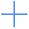
）。可以通过选中该属性的所有值并将其编辑为所需值来设置取值。
另一种方式是，当实时编辑关闭时，将所需属性添加到列表中、设置为所需值，然后点击注入按钮（
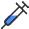
）将其设置到所选构件中。
这两种做法之间有一个细微差别 —— 前者会在必要时修改构件分类，以确保属性先被附加，然后再设置正确的值；而后者只会为已经拥有该属性的构件设置属性值。
When Live Edit is on, a property can be added in the same way as any other trait (with the add trait button
). The value can be set by selecting all values of that property and editing it the required value.
Alternatively, when Live Edit is off, the required property can be added to the list, set to the required value and set in the selected elements by clicking the inject button (
).
There is a subtle difference in these two approaches – the former will modify the element classification if necessary to ensure the property is attached before setting the correct value, whereas the latter will only set the property value in elements that already have that property.
英文原文对照Official English Original
When Live Edit is on, a property can be added in the same way as any other trait (with the add trait button
). The value can be set by selecting all values of that property and editing it the required value.
Alternatively, when Live Edit is off, the required property can be added to the list, set to the required value and set in the selected elements by clicking the inject button (
).
There is a subtle difference in these two approaches – the former will modify the element classification if necessary to ensure the property is attached before setting the correct value, whereas the latter will only set the property value in elements that already have that property.
3.1 背景
3.1 Background
建筑项目通常通过工程量清单来定价，将建造内容分解为离散的、明确理解的、成本已知的条目。条目列表可能非常庞大，因此通常以层级方式组织：顶部是宽泛的分类，越往下描述越加细致。对建筑构件进行测量，并将数量记入相应的清单条目。一面墙可能对许多不同的成本都有贡献，例如砖/砌块/骨架、保温层和饰面。
清单结构可以在内部自行编制、逐个项目定制，也可以从外部数据源导入，例如数据库或基于云的数据源。该软件的设计旨在涵盖上述所有情形，并计划在未来提供额外的连接能力，以直接链接第三方工程量清单。
本节讨论不同类型的清单结构，以及创建、导入、编辑和导出的方法。
Building projects are typically priced in a bill of quantities, breaking the construction down into discrete, well-understood items of a known cost. The list of items can be very large, so is typically arranged in a hierarchy with broad categories at the top and increasing detailed descriptions at the lower levels. Building elements are measured and quantities entered against applicable bill items. A single wall could potentially contribute to many different costs, e.g. bricks/blocks/framing, insulation and finishes.
The bill structure may be developed in-house, customised project-by-project or imported from an external source, e.g. database or cloud-based. The software is designed to provide for all of these scenarios, and additional connectivity is planned for direct links to 3rd-party bills of quantity in future.
This section discusses different types of bill structures, with methods for creating, importing, editing and exporting.
英文原文对照Official English Original
Building projects are typically priced in a bill of quantities, breaking the construction down into discrete, well-understood items of a known cost. The list of items can be very large, so is typically arranged in a hierarchy with broad categories at the top and increasing detailed descriptions at the lower levels. Building elements are measured and quantities entered against applicable bill items. A single wall could potentially contribute to many different costs, e.g. bricks/blocks/framing, insulation and finishes.
The bill structure may be developed in-house, customised project-by-project or imported from an external source, e.g. database or cloud-based. The software is designed to provide for all of these scenarios, and additional connectivity is planned for direct links to 3rd-party bills of quantity in future.
This section discusses different types of bill structures, with methods for creating, importing, editing and exporting.
3.2 清单结构
3.2 Bill structure
清单可以采用 2 种方式组织，以反映项目和工作流程的需求：
- 简单型
清单只是一个扁平的条目列表，即没有分类。这可能适合规模较小的项目，或只需对部分可能的条目或工种进行报价的工作流程。条目以标准图标显示在 Project Bill 之下：
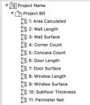
- 层级型
大型 BoQ 中的条目若按分类分组为树状结构（可能有多层深），管理起来会更容易。除了便于查找特定条目之外，分类还将相似条目归拢在一起，并在算量时提供小计。分类以文件夹图标显示，并按类似标准文件系统的树状结构排列：
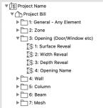
可以通过相邻的箭头显示或隐藏分类的内容。请注意，Quantities 提供了在某些视图中省略分类的选项，仅以扁平列表显示条目。
层级中任何条目的完整键都会自动加上其父分类的键作为前缀，例如：
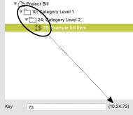
清单结构对软件的其他功能没有影响，并且可以随时更改。请注意，尽管清单条目键中包含父分类的键，但仍可以通过手动添加分类键来省略层级中的任意部分，例如扁平列表中的条目可以直接被赋予键'10.24.73'。这些不同的做法可以混用，例如创建一个部分层级，并手动为任何被省略的分类的子条目加上键前缀。
另请注意，带有计算数量的清单条目无论结构如何，都会以扁平列表形式导出为 CSV，便于导入电子表格，并符合条目编号、描述、单位、数量、单价和总金额的标准表头（详见第 5.2.5 节）。
The bill can be structured in 2 ways to reflect the requirements of the project and workflow:
- Simple
The bill is simply a flat list of items, i.e. no categories. This may suit smaller projects or workflows that only price a subset of possible items or trades. Items are displayed with a standard icon under the Project Bill:
- Hierarchical
Items in a large BoQ are easier to manage when grouped into categories in a tree structure, potentially multiple levels deep. In addition to making it easier to find a specific item, categories group similar items together and provide sub-totals when scheduled. Categories are displayed with a folder icon and arranged in a tree structure similar to standard file systems:
The content of a category can be revealed or hidden with the adjacent arrow. Note that Quantities provides an option to omit the categories in some views, displaying just the items in a flat list.
The full key of any item in a hierarchy is automatically prefixed with the keys of any parent categories, e.g.:
The bill structure has no effect on other software functionality and can be changed at any time. Note that although bill item keys include the keys of parent categories, it is possible to omit any part of the hierarchy by manually adding category keys, e.g. an item in a flat list could be directly assigned the key ‘10.24.73’. These different approaches can be mixed, e.g. creating a partial hierarchy and manually prefixing the keys of any omitted categories to the child items.
Also note that bill items are exported to CSV with calculated quantities in a flat list irrespective of the structure, suitable for import to a spreadsheet and conforming to standard headings of item number, description, unit, quantity, rate and total amount (see section 5.2.5 for more detail).
英文原文对照Official English Original
The bill can be structured in 2 ways to reflect the requirements of the project and workflow:
- Simple
The bill is simply a flat list of items, i.e. no categories. This may suit smaller projects or workflows that only price a subset of possible items or trades. Items are displayed with a standard icon under the Project Bill:
- Hierarchical
Items in a large BoQ are easier to manage when grouped into categories in a tree structure, potentially multiple levels deep. In addition to making it easier to find a specific item, categories group similar items together and provide sub-totals when scheduled. Categories are displayed with a folder icon and arranged in a tree structure similar to standard file systems:
The content of a category can be revealed or hidden with the adjacent arrow. Note that Quantities provides an option to omit the categories in some views, displaying just the items in a flat list.
The full key of any item in a hierarchy is automatically prefixed with the keys of any parent categories, e.g.:
The bill structure has no effect on other software functionality and can be changed at any time. Note that although bill item keys include the keys of parent categories, it is possible to omit any part of the hierarchy by manually adding category keys, e.g. an item in a flat list could be directly assigned the key ‘10.24.73’. These different approaches can be mixed, e.g. creating a partial hierarchy and manually prefixing the keys of any omitted categories to the child items.
Also note that bill items are exported to CSV with calculated quantities in a flat list irrespective of the structure, suitable for import to a spreadsheet and conforming to standard headings of item number, description, unit, quantity, rate and total amount (see section 5.2.5 for more detail).
3.3 创建和管理清单结构
3.3 Creating and managing a Bill structure
工程量清单可以在工程量管理器中查看和编辑，可通过点击菜单项 CI Tools > Quantities > Quantity Take-off Manager 并选择"清单结构"选项卡打开。所有 Quantities 面板还都显示一个图标，可快速打开该管理器对话框。
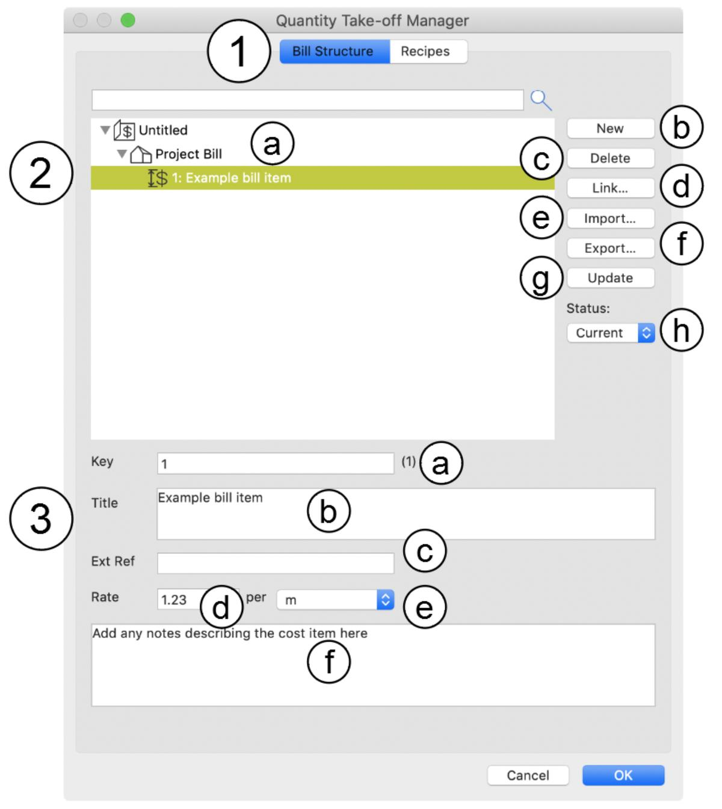
管理器的主要功能如下：
- 可选择管理清单结构或测量配方。点击 Bill Structure 以配合本节内容。
- 清单结构概览，附带用于创建、删除、导入和导出清单条目的按钮。所选条目的详情显示在下方面板中（见下文第 3 项）。清单结构以当前打开项目的名称为标题。项目之下的下一项以 Project Bill 为标题。在管理器中创建的任何条目都显示在该标题之下；它们保存在项目文件中，且只能应用于当前项目。如果有清单结构从外部数据源（例如外部文件或数据库）链接到本项目，它将显示在单独的标题之下且不可编辑（详见第 3.3.7 节和第 3.3.8 节）。可以选择多个项目以快速编辑或删除。
- 所选清单条目的详情。如果选中了多个项目，则只显示第一个项目的详情。以下字段可以对多个项目同时编辑，但键和名称除外（键和名称只会更改第一个项目）。 a. 条目键。它可以是字母和数字的任意组合，但不应与同一层级中的任何其他条目重复（为了清晰起见，因为计算出的项目数量会在算量表中针对该键进行登记）。这些键通常反映既有的构造分类体系，例如 Uniclass。完整的条目键显示在此字段旁。当条目以层级方式归入某个分类之下时，完整键会在条目键前加上祖先分类的键，例如'10.24.73'。如果清单是扁平列表（即没有分类），则键与完整键相同。 b. 条目标题。可以输入任何内容。 c. 可选的外部引用，例如制造商或外部数据库代码，仅供信息参考。此信息会包含在导出的算量表中。 d. 单价，即每单位成本。如果成本是依据导出的数量在外部计算的，可以为零。 e. 计量单位，例如'metre'、'mm'、'each'，在弹出菜单中显示。这些项目由用户自行定义 —— 更多信息参见第 3.3.5 节。 f. 可选的描述，通常用于说明应计量什么（或如何计量）。此信息不包含在算量表中。
请注意，只有点击 OK 按钮后对清单结构的更改才会生效。如果点击 Cancel，则所有更改都将被丢弃。
The BoQ can be viewed and edited in the Quantity Take-off Manager, which can be opened by clicking the menu item CI Tools > Quantities > Quantity Take-off Manager and selecting the Bill Structure tab. All Quantities palettes also display an icon to quickly open the manager dialog.
The key features of the manager are:
- An option to manage either the bill structure or measurement recipes. Click Bill Structure for the purpose of this section.
- An overview of the bill structure with buttons for creating, deleting, importing and exporting bill items. Details of the selected item are shown in the panel below (see 3 below). The bill structure is headed up with the name of the open project. The next item under the project is headed up Project Bill. Any items created in the manager are displayed under this heading; they are saved in the project file and can only be applied to the current project. If a bill structure is linked to this project from an eternal source, e.g. an external file or database, it will be displayed under a separate heading and cannot be edited (see sections 3.3.7 and 3.3.8 for more details). Multiple items can be selected for quick editing or deletion.
- Details of the selected bill item. If multiple items are selected, only the details of the first are displayed. The following fields can be edited for multiple items simultaneously apart from the key and name (where only the first item will be changed). a. The item key. It can be any combination or letters and numbers, but should not duplicate any other item at the same level (for clarity, because calculated project quantities will be set against the key in the schedule). The keys often reflect established construction classification systems, e.g. Uniclass. The full item key is displayed beside this field. When the item is arranged in a hierarchy under a category, the full key is prefixes the ancestor category keys to the item key, e.g. ‘10.24.73’. If the bill is a flat list, i.e. no categories, the key and full key are the same. b. The item title. Anything can be entered. c. An optional external reference, e.g. a manufacturer or external database code, for informational purposes only. This information is included in exported schedules. d. Rate, i.e. cost per unit. Can be zero if the costing is calculated externally based on exported quantities. e. Unit of measurement, e.g. ‘metre’, ‘mm’, ‘each’, displayed in a popup menu. These items are user-defined – refer to section 3.3.5 for more information. f. An optional description, usually to clarify what should be measured (or how). This information is not included in the schedule.
Note that changes to the bill structure only become permanent the OK button is clicked. If Cancel is clicked, all changes will be discarded.
英文原文对照Official English Original
The BoQ can be viewed and edited in the Quantity Take-off Manager, which can be opened by clicking the menu item CI Tools > Quantities > Quantity Take-off Manager and selecting the Bill Structure tab. All Quantities palettes also display an icon to quickly open the manager dialog.
The key features of the manager are:
- An option to manage either the bill structure or measurement recipes. Click Bill Structure for the purpose of this section.
- An overview of the bill structure with buttons for creating, deleting, importing and exporting bill items. Details of the selected item are shown in the panel below (see 3 below). The bill structure is headed up with the name of the open project. The next item under the project is headed up Project Bill. Any items created in the manager are displayed under this heading; they are saved in the project file and can only be applied to the current project. If a bill structure is linked to this project from an eternal source, e.g. an external file or database, it will be displayed under a separate heading and cannot be edited (see sections 3.3.7 and 3.3.8 for more details). Multiple items can be selected for quick editing or deletion.
- Details of the selected bill item. If multiple items are selected, only the details of the first are displayed. The following fields can be edited for multiple items simultaneously apart from the key and name (where only the first item will be changed). a. The item key. It can be any combination or letters and numbers, but should not duplicate any other item at the same level (for clarity, because calculated project quantities will be set against the key in the schedule). The keys often reflect established construction classification systems, e.g. Uniclass. The full item key is displayed beside this field. When the item is arranged in a hierarchy under a category, the full key is prefixes the ancestor category keys to the item key, e.g. ‘10.24.73’. If the bill is a flat list, i.e. no categories, the key and full key are the same. b. The item title. Anything can be entered. c. An optional external reference, e.g. a manufacturer or external database code, for informational purposes only. This information is included in exported schedules. d. Rate, i.e. cost per unit. Can be zero if the costing is calculated externally based on exported quantities. e. Unit of measurement, e.g. ‘metre’, ‘mm’, ‘each’, displayed in a popup menu. These items are user-defined – refer to section 3.3.5 for more information. f. An optional description, usually to clarify what should be measured (or how). This information is not included in the schedule.
Note that changes to the bill structure only become permanent the OK button is clicked. If Cancel is clicked, all changes will be discarded.
3.3.1 如何创建清单条目
3.3.1 How to create a bill item
点击 New 按钮（插图中的第 2b 项）。新清单条目将显示在面板 2 中并处于选中状态，其详情显示在面板 3 中。系统会自动分配清单中下一个最高的编号作为键，但该键可以自由编辑。
如果点击 New 时已选中了某个现有清单条目，则新清单条目将是所选条目的完全副本（键除外）。如果清单以层级方式组织，新条目将位于与所选条目相同的层级，并被分配该层级下下一个最高的编号。如果选中的是分类，则新条目将归入该分类之下，并获得该分类下下一个最高的编号。
Click the New button (item 2b in the illustration). A new bill item will be displayed and selected in panel 2, with its details shown in panel 3. A key with the next highest number in the bill is automatically assigned, but this can be freely edited.
If an existing bill item is selected when New is clicked, the new bill item will be an exact duplicate of the selected item (apart from the key). If the bill is arranged in a hierarchy, the new item will be at the same level as the selected item and will be assigned the next highest number at that level. If a category is selected, the new item will fall under that category and receive the next highest number under that category.
英文原文对照Official English Original
Click the New button (item 2b in the illustration). A new bill item will be displayed and selected in panel 2, with its details shown in panel 3. A key with the next highest number in the bill is automatically assigned, but this can be freely edited.
If an existing bill item is selected when New is clicked, the new bill item will be an exact duplicate of the selected item (apart from the key). If the bill is arranged in a hierarchy, the new item will be at the same level as the selected item and will be assigned the next highest number at that level. If a category is selected, the new item will fall under that category and receive the next highest number under that category.
3.3.2 如何将清单条目组织成分类层级
3.3.2 How to organise bill items into a heirarchy of categories
如果将某个清单条目拖放到另一个条目上，被拖放的条目将成为目标条目的子分类：
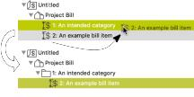
请注意，分类条目会显示一个文件夹图标和相邻的展开三角，用于展开或折叠子项内容。因此，分类的创建方式与清单条目相同 —— 但正是在子条目被放入其中时，它们才成为分类。分类可以嵌套在分类之下，层级深度不限；也可以拖放包含分类与条目任意组合的选择集，以重新组织清单层级。
拖放唯一的限制是，条目不能从一个清单拖到另一个清单，例如不能从外部文件中的清单拖到项目清单。
If a bill item is dragged and dropped onto another item, the target becomes a parent category for the dragged item:
Note that the category item displays a folder icon and an adjacent disclosure triangle to expand or collapse the child content. Therefore, categories are created in the same way as bill items – but they become categories at the moment child items are dropped into them. Categories can be nested under categories to any depth, and selections containing any combination of categories and items can be dragged and dropped to rearrange the bill hierarchy.
The only constraint on drag and drop is that items cannot be dragged from one bill to another, e.g. from a bill in an external file the project bill.
英文原文对照Official English Original
If a bill item is dragged and dropped onto another item, the target becomes a parent category for the dragged item:
Note that the category item displays a folder icon and an adjacent disclosure triangle to expand or collapse the child content. Therefore, categories are created in the same way as bill items – but they become categories at the moment child items are dropped into them. Categories can be nested under categories to any depth, and selections containing any combination of categories and items can be dragged and dropped to rearrange the bill hierarchy.
The only constraint on drag and drop is that items cannot be dragged from one bill to another, e.g. from a bill in an external file the project bill.
3.3.3 如何删除清单条目
3.3.3 How to delete bill items
选中一个或多个要删除的项目，然后点击 Delete 按钮（插图中的第 2c 项）。已删除的项目此后可以恢复（参见第 2.3.3 节）。
Select one or more items to be deleted and click the Delete button (item 2c in the illustration). Deleted items can be subsequently recovered (see section 2.3.3).
英文原文对照Official English Original
Select one or more items to be deleted and click the Delete button (item 2c in the illustration). Deleted items can be subsequently recovered (see section 2.3.3).
3.3.4 如何查看并恢复已删除的清单条目
3.3.4 How to view and restore deleted bill items
由于意外或误删清单条目可能对计算出的工程量清单产生严重影响，该插件提供了一些功能，可简化识别并纠正此问题的过程。例如，链接到已删除清单条目的配方，会在管理器对话框中以红色高亮显示。
软件还会保留已删除清单条目的历史记录以便恢复。在"状态"菜单（见插图中的 2h）中选择下列任一项，即可让此前删除的项目可见：
• All：同时显示有效条目和已删除条目（已删除的条目以斜体显示）
• Deleted：仅显示已删除的条目
选中已删除的条目时，Delete 按钮会变为 Restore，点击它即可将清单条目恢复到正常使用状态。
将"状态"菜单设为 Current 即可恢复仅查看有效条目。
Because accidental or mistaken bill item deletion could have serious implications for the calculated BoQ, the add-on has some features that simplify the process of identifying and correcting this problem. For example, a recipe linked to a deleted bill item will be highlighted in red in the manager dialog.
The software also maintains a history of deleted bill items to facilitate recovery. Select either of the following in the Status menu (see 2h in the illustration) to allow previously deleted items to be visible:
• All: Both active and deleted items are shown (deleted items are displayed in italics)
• Deleted: Only deleted items are shown
When a deleted item is selected, the Delete button changes to Restore, and clicking it restores the bill item(s) to normal use.
Set the Status menu to Current to resume viewing active items only.
英文原文对照Official English Original
Because accidental or mistaken bill item deletion could have serious implications for the calculated BoQ, the add-on has some features that simplify the process of identifying and correcting this problem. For example, a recipe linked to a deleted bill item will be highlighted in red in the manager dialog.
The software also maintains a history of deleted bill items to facilitate recovery. Select either of the following in the Status menu (see 2h in the illustration) to allow previously deleted items to be visible:
• All: Both active and deleted items are shown (deleted items are displayed in italics)
• Deleted: Only deleted items are shown
When a deleted item is selected, the Delete button changes to Restore, and clicking it restores the bill item(s) to normal use.
Set the Status menu to Current to resume viewing active items only.
3.3.5 如何编辑计量单位
3.3.5 How to edit the units of measurement
所选清单条目的详情（面板 3）中包含一个用于选择计量单位的弹出菜单。除了列出已定义的单位外，该菜单还显示 Edit Units… 和 No Unit：
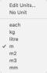
点击 Edit Units… 会显示"数量单位"对话框：
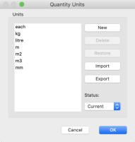
用于管理单位的按钮如下：
| *New* | 点击以向列表中添加一个新单位 |
|---|---|
| *Delete* | 点击以删除所选单位。已删除的单位此后可以恢复。 |
| *Restore* | 点击以恢复先前已删除的所选单位（当"状态"菜单设为 All 或 Deleted 时）。 |
| *Import* | 显示一个标准文件浏览对话框，用于选择要导入的单位文件。导入的单位将与当前单位合并 |
| *Export* | 显示一个标准文件浏览对话框，用于指定导出当前单位的目标文件的名称和位置 |
| *Status* | 用于选择查看哪些单位记录的菜单：All = 当前单位和已删除单位；Current = 仅当前单位；Deleted = 仅已删除单位。当单位被删除需要恢复时，此功能很有用。 |
只有点击 OK 才会保存更改。如果点击 Cancel，则所有更改都会被丢弃。
The details of the selected bill item (panel 3) includes a pop-up menu for selecting a unit of measurement. In addition to listing defined units, the menu displays Edit Units… and No Unit:
Click Edit Units… to display the Quantity Units dialog:
The buttons for managing the units are:
| *New* | Click to add a new unit to the list |
|---|---|
| *Delete* | Click to the delete the selected unit(s). Deleted units can be subsequently restored. |
| *Restore* | Click to restore a selected, previously-deleted unit (when the Status menu is set to All or Deleted. |
| *Import* | Displays a standard file navigation dialog to select a units file to import. Imported units will be merged with current units |
| *Export* | Displays a standard file navigation dialog to select the name and location of a file to export the current units to |
| *Status* | A menu to select which unit records to view: All = current and deleted unit; Current = current units only; Deleted = deleted units only. Useful when units have been deleted and need to be restored. |
Changes are only saved if OK is clicked. All changes are discarded if Cancel is clicked.
英文原文对照Official English Original
The details of the selected bill item (panel 3) includes a pop-up menu for selecting a unit of measurement. In addition to listing defined units, the menu displays Edit Units… and No Unit:
Click Edit Units… to display the Quantity Units dialog:
The buttons for managing the units are:
| *New* | Click to add a new unit to the list |
|---|---|
| *Delete* | Click to the delete the selected unit(s). Deleted units can be subsequently restored. |
| *Restore* | Click to restore a selected, previously-deleted unit (when the Status menu is set to All or Deleted. |
| *Import* | Displays a standard file navigation dialog to select a units file to import. Imported units will be merged with current units |
| *Export* | Displays a standard file navigation dialog to select the name and location of a file to export the current units to |
| *Status* | A menu to select which unit records to view: All = current and deleted unit; Current = current units only; Deleted = deleted units only. Useful when units have been deleted and need to be restored. |
Changes are only saved if OK is clicked. All changes are discarded if Cancel is clicked.
3.3.6 如何导入外部清单
3.3.6 How to import an external bill
Quantities 可以导入以下文件类型的清单：
Quants
Quantities 插件的原生 BoQ 文件格式。该格式最为全面可靠，因此在大多数情况下强烈推荐使用。其内容为 XML，若有人希望读写该格式，可以提供相应的 schema。
CSV
标准 CSV，非常适合与电子表格和某些数据库进行互操作，但缺少 XML 所具备的明确结构。对于简单的项目列表而言这很直接，但对于更大规模的层级化清单结构则难以管理。导入 CSV 时还会显示一个额外的对话框，用于定义每一列的用途。
点击 Import 按钮（插图中的第 2e 项）。将显示一个标准文件浏览对话框，用于选择要导入的 BoQ 文件。
选中 CSV 文件时，将显示以下对话框以定义数据标准和列：
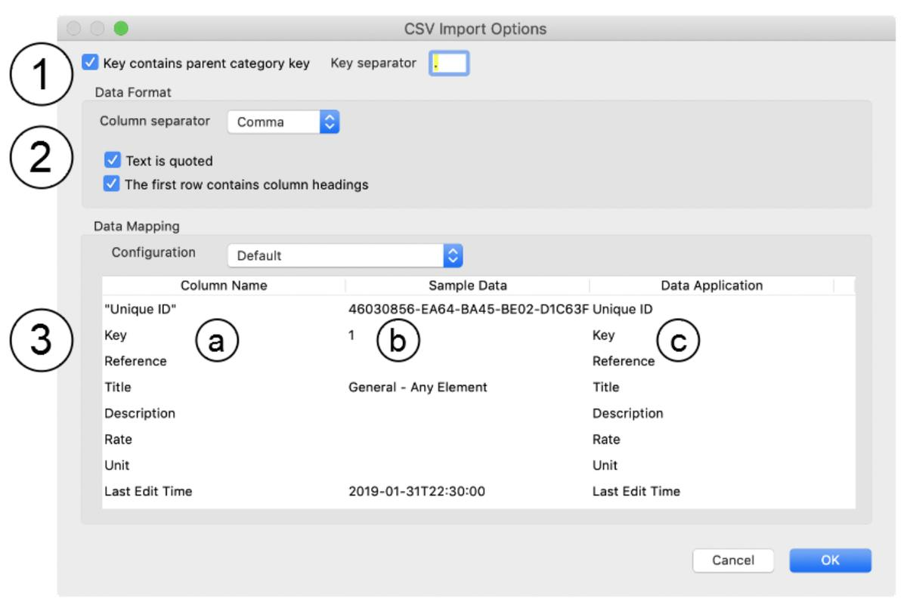
该对话框分为 3 个面板：
- 决定在层级化清单结构中如何解释键。如果勾选了 Key contains parent category，则任何父分类的键都会从子项目中剥离（因为 Quantities 会为显示目的动态地为分类键加前缀）。同时还会显示一个用于指定键分隔符的字段。举例来说，如果导入的键为“10.7.241”的项目其父分类为 10 和 7，那么导入后该项目的键将简单地为“241”。
- 标准 CSV 选项。分隔符菜单包括逗号、制表符、冒号、分号、空格。如果文本数据始终用引号括起，应勾选 Text is quoted。如果第一行是列名称，应勾选 First row [is] headings。
- 定义 CSV 各列应如何与清单条目的键字段关联的表格。该表格上方有一个 Configuration 菜单，可用于保存并重复使用表格内容。每个配置都有名称，可从菜单中选取。菜单中的其他项目可用于创建、重命名或删除配置（但必须始终至少保留一个配置）。表格分为三列： a) Column Name 如果勾选了 If The first row contains column headings 选项，此列显示从第一行导入的名称；否则显示列序号，例如 Column 1、Column 2 等。 b) Sample data 待导入数据的示例 —— 当各列没有命名时这很有帮助，同时也可用于确认 CSV 选项设置正确且导入的数据有效。 c) Data Application 此列与清单条目的哪个数据字段关联：
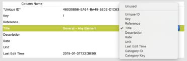
不需要的列应设置为 Unused。Unique ID 是可选的，但非常有用。理想情况下，每个清单条目（和分类）都应具有某种全局唯一 ID（guid），以确保无论其名称、键或父分类发生何种变化，都能可靠地跟踪清单条目。Category Key 和 Category ID 同样是可选的，用于指定条目或分类的父分类。使用时，顶层条目的这些值可以为空。扁平清单结构不需要这些字段。
所有导入的清单条目都将与现有清单结构合并，而不是完全取代它，从而便于与外部数据源进行往返数据交换，同时不破坏已建立的配方和计算。导入所产生的变更会先显示出来，必要时可以取消（且不改动现有数据）：
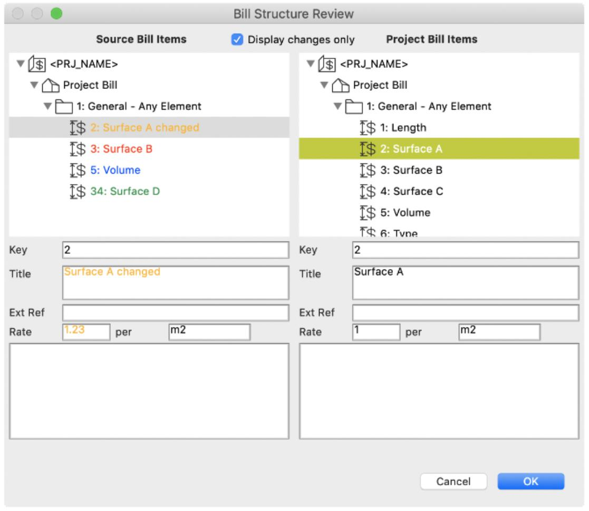
该对话框包含两个相邻的面板，左侧为新数据，右侧为原始数据。如果勾选了"仅显示变更"复选框，树形结构将只显示数据的变更。
变更类型通过以下颜色表示：
• 黑色：未因导入而变更的现有条目；
• 绿色：待添加的新条目；
• 橙色：对现有条目的变更（选中该变更条目后可对比新旧数据详情）；
• 红色：待删除的现有条目（如有需要，之后可以恢复）；
• 蓝色：已删除但将通过此次导入恢复的现有条目。
只有当用户点击 OK 时，更新才会应用到项目中。
A bill can be imported by Quantities with the following file types:
Quants
The native BoQ file format for the Quantities add-on. This format is the most comprehensive and reliable, and is therefore strongly recommended in most circumstances. The content is XML, and a schema is available on request to anyone wishing to read/write to this format.
CSV
Standard CSV, well-suited for interoperability with spreadsheets and some databases, but lacks the defined structure of XML. This is straight-forward for a simple list of items, but is becomes harder to manage for larger, hierarchical bill structures. An additional dialog is displayed for CSV import to define the purpose of each column.
Click the Import button (item 2e in the illustration). A standard file navigation dialog will be displayed to select a BoQ file to import.
When a CSV file is selected, the following dialog is displayed to define the data standards and columns:
The dialog is divided into 3 panels:
- Determines how keys will be interpreted in hierarchical bill structures. If Key contains parent category is checked, the keys of any parent categories will be stripped off the child items (because Quantities dynamically prefixes category keys for display purposes). A field to specify the key separator will also be displayed. As an example, if an item with the key “10.7.241” is imported and has parent categories of 10 and 7, the key of the imported item will be simply “241”.
- Standard CSV options. The separator menu includes comma, tab, colon, semi-colon, space. Text is quoted should be checked if text data is always enclosed in quotes. First row [is] headings should be checked if the first row is the column names.
- A table defining defining how the CSV columns should be linked to the key fields of a bill item. The table is headed up with a Configuration menu that allows the table content to be saved and reused. Each configuration is named and can be selected from the menu. Additional menu items allow configurations to be created, renamed or deleted (but there must always be at least one configuration remaining). The table is headed up with three columns: a) Column Name If The first row contains column headings option is checked, this column displays the names imported from the first row. Otherwise it displays the column number, e.g. Column 1, Column 2, etc. b) Sample data An example of the data to be imported – this is helpful if the columns are not named and also serves to confirm that the CSV options are correctly specified and the imported data is valid. c) Data Application Which bill item data field this column is linked to:
Unwanted columns should be set to Unused. Unique ID is optional, but very useful. Ideally every bill item (and category) should have some kind of unique ID (a guid) that ensures bill items are reliably tracked no matter what changes are made to its name, key or parent category. Category Key and Category ID are also optional and specify the parent category of an item or category. When used, the values can be empty for top-level items. Flat bill structures don’t need these fields.
All imported bill items will be merged with any existing bill structure rather than wholly replacing it, facilitating round-trip data exchanges with external data sources without disrupting established recipes and calculations. The changes resulting from the import are displayed first and can be cancelled if necessary (without changing existing data):
The dialog contains 2 adjacent panels, new data to the left and original to the right. If the “Display changes only” checkbox is clicked, the tree will show only changes to the data.
The type of change is illustrated with the following colours:
• Black: An existing item that is unchanged by the import;
• Green: A new item to be added;
• Orange: A change to an existing item (details of the new and existing data can be compared by selecting the changed item);
• Red: An existing item to be deleted (it can be restored later if required);
• Blue: An existing item that has been deleted, but will be restored by the import.
The update will only be applied to the project if the user clicks OK.
英文原文对照Official English Original
A bill can be imported by Quantities with the following file types:
Quants
The native BoQ file format for the Quantities add-on. This format is the most comprehensive and reliable, and is therefore strongly recommended in most circumstances. The content is XML, and a schema is available on request to anyone wishing to read/write to this format.
CSV
Standard CSV, well-suited for interoperability with spreadsheets and some databases, but lacks the defined structure of XML. This is straight-forward for a simple list of items, but is becomes harder to manage for larger, hierarchical bill structures. An additional dialog is displayed for CSV import to define the purpose of each column.
Click the Import button (item 2e in the illustration). A standard file navigation dialog will be displayed to select a BoQ file to import.
When a CSV file is selected, the following dialog is displayed to define the data standards and columns:
The dialog is divided into 3 panels:
- Determines how keys will be interpreted in hierarchical bill structures. If Key contains parent category is checked, the keys of any parent categories will be stripped off the child items (because Quantities dynamically prefixes category keys for display purposes). A field to specify the key separator will also be displayed. As an example, if an item with the key “10.7.241” is imported and has parent categories of 10 and 7, the key of the imported item will be simply “241”.
- Standard CSV options. The separator menu includes comma, tab, colon, semi-colon, space. Text is quoted should be checked if text data is always enclosed in quotes. First row [is] headings should be checked if the first row is the column names.
- A table defining defining how the CSV columns should be linked to the key fields of a bill item. The table is headed up with a Configuration menu that allows the table content to be saved and reused. Each configuration is named and can be selected from the menu. Additional menu items allow configurations to be created, renamed or deleted (but there must always be at least one configuration remaining). The table is headed up with three columns: a) Column Name If The first row contains column headings option is checked, this column displays the names imported from the first row. Otherwise it displays the column number, e.g. Column 1, Column 2, etc. b) Sample data An example of the data to be imported – this is helpful if the columns are not named and also serves to confirm that the CSV options are correctly specified and the imported data is valid. c) Data Application Which bill item data field this column is linked to:
Unwanted columns should be set to Unused. Unique ID is optional, but very useful. Ideally every bill item (and category) should have some kind of unique ID (a guid) that ensures bill items are reliably tracked no matter what changes are made to its name, key or parent category. Category Key and Category ID are also optional and specify the parent category of an item or category. When used, the values can be empty for top-level items. Flat bill structures don’t need these fields.
All imported bill items will be merged with any existing bill structure rather than wholly replacing it, facilitating round-trip data exchanges with external data sources without disrupting established recipes and calculations. The changes resulting from the import are displayed first and can be cancelled if necessary (without changing existing data):
The dialog contains 2 adjacent panels, new data to the left and original to the right. If the “Display changes only” checkbox is clicked, the tree will show only changes to the data.
The type of change is illustrated with the following colours:
• Black: An existing item that is unchanged by the import;
• Green: A new item to be added;
• Orange: A change to an existing item (details of the new and existing data can be compared by selecting the changed item);
• Red: An existing item to be deleted (it can be restored later if required);
• Blue: An existing item that has been deleted, but will be restored by the import.
The update will only be applied to the project if the user clicks OK.
3.3.7 如何链接到外部清单
3.3.7 How to link to an external bill
当清单内容在 ARCHICAD 之外进行管理或编辑时，应当将清单链接到外部数据源，特别是在成本和报表也在外部处理的情况下。Quantities 会按需更新到外部数据源的最新版本，并禁止在 ARCHICAD 内进行任何编辑以支持该工作流，但除此之外，这些清单条目的使用方式与嵌入项目清单中的条目完全相同。
要链接到外部数据源，请点击 Link 按钮（插图中的第 2d 项）并选择类型：
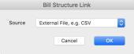
默认安装仅有一个选项，即 External file。将来可以添加更多数据源以链接到特定解决方案（另请参见第 3.3.8 节 如何使用第三方清单结构）。选择文件、可能的类型和配置等其余流程与直接导入文件相同（参见第 3.3.6 节 如何导入外部清单）。
已链接的 BoQ 与存储在项目中并加以管理的清单，通过清单层级中的不同标题加以区分：
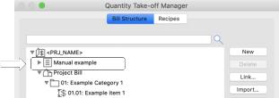
在此插图中，Manual example 是链接到外部文件的清单，而在 ARCHICAD 项目中管理的清单则以 Project Bill 为标题。
Quantities 显示的外部数据源清单内容不会在数据源变更时自动刷新，而是按需更新，以确保项目的完整性不会被无意更改。点击 Update 按钮（插图中的第 2g 项）即可开始更新。导入清单时显示的"清单结构复核"面板也会出现，以便先行审计这些变更。只有点击 OK 后更新才会完成。
The bill should be linked to an external source when the bill content is managed or edited outside of ARCHICAD, particularly when costs and reporting is also facilitated externally. Quantities will update to the latest version of the external source on demand and prevent any editing within ARCHICAD to support that workflow, but otherwise the bill items can be used in exactly the same way as those embedded in the Project Bill.
To link to external source, click the Link button (item 2d in the illustration) and select the type:
The default installation has just one option, External file. Additional sources can be added in future for linking to specific solutions (also refer to section 3.3.8, How to use a 3rd party bill structure). The remainder of the process for selecting a file, possible types and configurations are the same as simply importing a file (refer to section 3.3.6, How to import an external bill).
A linked BoQ is differentiated from the bill stored and managed in the project by a different heading in the bill hierarchy:
In this illustration, Manual example is a bill linked to an external file whereas the bill managed in the ARCHICAD project is headed up by Project Bill.
The content of a bill from an external source displayed by Quantities does not automatically refresh when the source changes, but rather is updated on demand to ensure the integrity of the project is not changed unintentionally. Click on the Update button (item 2g in the illustration) to start an update. The Bill Structure Review palette shown during a bill import will be displayed to allow the changes to be audited first. The update will only be completed when OK is clicked.
英文原文对照Official English Original
The bill should be linked to an external source when the bill content is managed or edited outside of ARCHICAD, particularly when costs and reporting is also facilitated externally. Quantities will update to the latest version of the external source on demand and prevent any editing within ARCHICAD to support that workflow, but otherwise the bill items can be used in exactly the same way as those embedded in the Project Bill.
To link to external source, click the Link button (item 2d in the illustration) and select the type:
The default installation has just one option, External file. Additional sources can be added in future for linking to specific solutions (also refer to section 3.3.8, How to use a 3rd party bill structure). The remainder of the process for selecting a file, possible types and configurations are the same as simply importing a file (refer to section 3.3.6, How to import an external bill).
A linked BoQ is differentiated from the bill stored and managed in the project by a different heading in the bill hierarchy:
In this illustration, Manual example is a bill linked to an external file whereas the bill managed in the ARCHICAD project is headed up by Project Bill.
The content of a bill from an external source displayed by Quantities does not automatically refresh when the source changes, but rather is updated on demand to ensure the integrity of the project is not changed unintentionally. Click on the Update button (item 2g in the illustration) to start an update. The Bill Structure Review palette shown during a bill import will be displayed to allow the changes to be audited first. The update will only be completed when OK is clicked.
3.3.8 如何使用第三方清单结构
3.3.8 How to use a 3rd party bill structure
与第三方 BoQ 的连接将由与 Quantities 通信的独立插件提供。每个插件都会有各自的说明，但总体流程与链接到任何外部数据源相同（参见第 3.3.7 节 如何链接到外部清单），唯一区别是：在提示选择清单来源时应选择第三方目标（而不是 External File）。
如果需要 Quantities 与某第三方之间的连接但目前尚不可用，或者您希望自行开发一个，请联系 Central Innovation。
Connections to a 3rd party BoQ will be provided by separate add-ons that communicate with Quantities. Each will have specific instructions, but in general the process will be the same as linking to any external source (see section 3.3.7, How to link to an external bill) with the exception that the 3rd party target should be selected when prompted for the bill source (rather than External File).
Contact Central Innovation if a link between Quantities and a 3rd party is required and not yet available, or if you wish to develop one.
英文原文对照Official English Original
Connections to a 3rd party BoQ will be provided by separate add-ons that communicate with Quantities. Each will have specific instructions, but in general the process will be the same as linking to any external source (see section 3.3.7, How to link to an external bill) with the exception that the 3rd party target should be selected when prompted for the bill source (rather than External File).
Contact Central Innovation if a link between Quantities and a 3rd party is required and not yet available, or if you wish to develop one.
3.3.9 如何导出清单结构
3.3.9 How to export the bill structure
点击 Export 按钮（插图中的第 2f 项）。将显示一个标准文件浏览对话框，用于指定导出文件的类型、名称和位置。可能的文件类型包括：
Quants
Quantities 插件的原生 BoQ 文件格式。该格式最为全面可靠，因此在大多数情况下强烈推荐使用。其内容为 XML，若有人希望读写该格式，可以提供相应的 schema，但内容本身相当直观。
CSV
标准 CSV，非常适合与电子表格和某些数据库进行互操作，但缺少 XML 所具备的明确结构。对于简单的项目列表而言这很直接，但对于更大规模的层级化清单结构则难以管理。
CSV 内容以逗号分隔导出，所有数据均以引号包裹，第一行包含以下列名：
| Unique ID | 清单条目/分类记录的全局唯一 ID，形式为 guid，例如“46030856-EA64-BA45-BE02-D1C63FC9B8E3” |
|---|---|
| Key | 条目/分类的键（不含祖先分类的键） |
| Reference | 可选的外部引用 ID |
| Title | 条目/分类名称 |
| Description | 条目/分类描述 |
| Rate | 条目的单价 |
| Unit | 单位名称 |
| Last Edit Time | 该记录最后一次被编辑的时间，符合 ISO 8601 |
| Category ID | 父分类的全局唯一 ID，形式为 guid |
| Category Key | 父分类的键 |
Click the Export button (item 2f in the illustration). A standard file navigation dialog will be displayed to specify the type, name and location of the exported file. Possible file types include:
Quants
The native BoQ file format for the Quantities add-on. This format is the most comprehensive and reliable, and is therefore strongly recommended in most circumstances. The content is XML, and a schema is available on request to anyone wishing to read/write to this format, but the content is reasonably self-evident.
CSV
Standard CSV, well-suited for interoperability with spreadsheets and some databases, but lacks the defined structure of XML. This is straight-forward for a simple list of items, but is becomes harder to manage for larger, hierarchical bill structures.
CSV content is exported as comma-delimited, all data is enclosed in speech marks and the first row contains the following column names:
| Unique ID | A unique ID for the bill item/category record in the form of a guid, e.g. “46030856-EA64-BA45-BE02-D1C63FC9B8E3” |
|---|---|
| Key | The item/category key (excluding keys of ancestor categories) |
| Reference | An optional external reference ID |
| Title | The item/category name |
| Description | The item/category description |
| Rate | The item unit rate |
| Unit | The unit name |
| Last Edit Time | The last time the record was edited conforming to ISO 8601 |
| Category ID | The unique ID of the parent category in the form of a guid |
| Category Key | The key of the parent category |
英文原文对照Official English Original
Click the Export button (item 2f in the illustration). A standard file navigation dialog will be displayed to specify the type, name and location of the exported file. Possible file types include:
Quants
The native BoQ file format for the Quantities add-on. This format is the most comprehensive and reliable, and is therefore strongly recommended in most circumstances. The content is XML, and a schema is available on request to anyone wishing to read/write to this format, but the content is reasonably self-evident.
CSV
Standard CSV, well-suited for interoperability with spreadsheets and some databases, but lacks the defined structure of XML. This is straight-forward for a simple list of items, but is becomes harder to manage for larger, hierarchical bill structures.
CSV content is exported as comma-delimited, all data is enclosed in speech marks and the first row contains the following column names:
| Unique ID | A unique ID for the bill item/category record in the form of a guid, e.g. “46030856-EA64-BA45-BE02-D1C63FC9B8E3” |
|---|---|
| Key | The item/category key (excluding keys of ancestor categories) |
| Reference | An optional external reference ID |
| Title | The item/category name |
| Description | The item/category description |
| Rate | The item unit rate |
| Unit | The unit name |
| Last Edit Time | The last time the record was edited conforming to ISO 8601 |
| Category ID | The unique ID of the parent category in the form of a guid |
| Category Key | The key of the parent category |
4.1 概述
4.1 Overview
标准化的测量方法是 Quantities 的核心，它定义了应如何以及何时从 ARCHICAD 模型构件中计算数量。
除基本的设施和配件计数之外，构件很少与单个清单条目存在简单关联。一面墙可能对外墙覆面、多种构造材料（包括保温层）、配筋、内部/外部饰面的任意组合以及更多内容都有所贡献。不仅如此，一个构件所代表的构造可能并不与其绘制所用工具所暗示的相同，例如一面墙可能代表管沟，可以对其开挖、支护、基础/垫层、人工、敷设长度（管道/电缆等）、设备租赁以及任意数量的其他构件进行计量。
Standardised measurement methods are at the heart of Quantities, defining how and when a quantity should be calculated from an ARCHICAD model element.
Elements rarely have a simple connection to a single bill item, apart from a basic count of fixtures and fittings. A single wall could contribute to external cladding, multiple construction materials(including insulation), reinforcing, any combination of internal/external finishes and much more. And beyond that, an element could represent construction not suggested by the tool it was drawn with, e.g. a wall representing a services trench that could be measured for excavation, retaining, foundation/bedding, labour, service runs length (pipe/cable etc), equipment hire and any number of other components.
英文原文对照Official English Original
Standardised measurement methods are at the heart of Quantities, defining how and when a quantity should be calculated from an ARCHICAD model element.
Elements rarely have a simple connection to a single bill item, apart from a basic count of fixtures and fittings. A single wall could contribute to external cladding, multiple construction materials(including insulation), reinforcing, any combination of internal/external finishes and much more. And beyond that, an element could represent construction not suggested by the tool it was drawn with, e.g. a wall representing a services trench that could be measured for excavation, retaining, foundation/bedding, labour, service runs length (pipe/cable etc), equipment hire and any number of other components.
4.2 测量配方
4.2 Measurement Recipes
Quantities 中的测量定义在配方中，这符合这样一个理念：成本的计算通常是许多"食材"的组合，而不是简单地清点构件的某个属性或将其总计。一个配方可以将任意数量的测量项绑定在一起，每一项测量都可以引用任意组合的构件属性和几何，并通过规则将它们与"贡献到哪个清单条目"以及"何时进行每项测量"关联起来。
接下来的各节将从基本的计数配方开始，逐步过渡到实现计算、可选/自动测量，最后以一些常见示例和问题收尾。
测量配方在工程量管理器中查看，可通过点击菜单项 CI Tools > Quantities > Quantity Take-off Manager 并选择"配方"选项卡打开。所有 Quantities 面板还都显示一个图标，可快速打开该管理器对话框（
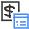
）。
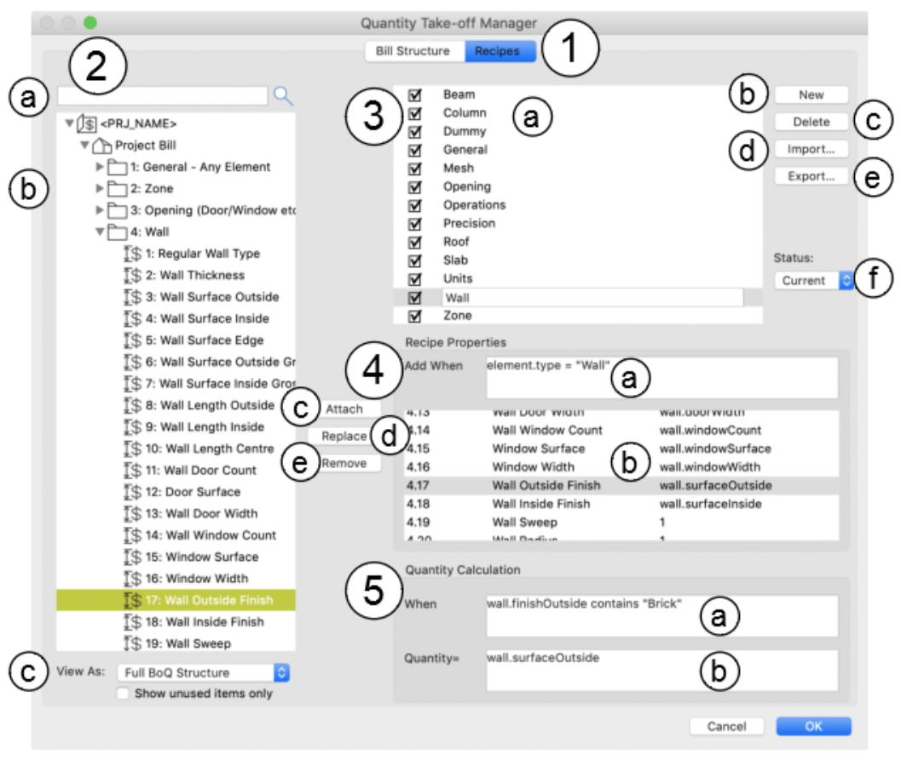
管理器的主要功能如下：
- 可选择管理清单结构或测量配方。界面结构体现了清单结构与配方之间的紧密联系。点击 Recipes 以配合本节内容。
- 不可编辑的清单结构视图，主要用于定义清单条目与测量项之间的关联（更多细节见面板 4）。其功能包括： a. 清单筛选器 —— 输入名称的任何部分即可仅显示匹配的项目。 b. 清单结构。分类可以展开或折叠，且同时包含项目清单和已链接的清单。 c. 更多清单筛选器。"视图方式"菜单主要用于层级化清单结构，可显示"完整 BoQ 结构"（如上图所示）或"扁平清单条目列表"（省略全部分类，仅列出清单条目）。"仅显示未使用项目"会将清单筛选为仅显示尚未链接到配方的项目，有助于确保项目成本未被忽略（参见第 6 节 审计，了解更多质量检查功能）。
- 配方列表，附带用于创建、删除、导入和导出清单条目的按钮。每个配方前面都有一个复选框，用于切换其启用或停用（停用后该配方不会计算数量）。由该配方进行的测量列在下方的面板中（见下文第 4 项）。可以选择多个项目以快速编辑或删除，但后续面板中只有最靠前的所选配方的测量项可以编辑。
- 所选配方的属性，包括： a. 一段表达式，可将配方自动附加到目标构件。只要该表达式为真，配方就会附加到相应构件。例如，如果某配方适用于任何含砖材质的墙体，其链接表达式可以是：
wall.material contains “brick”
更多信息见第 4.5 节，表达式示例见第 4.5.6 节。 b. 该配方所进行的测量列表，汇总显示所链接的清单条目键/名称以及数量计算。所选测量项的详情显示在下方面板中（并可编辑）（见下文面板 5）。可以选择多个测量项，但只能查看或编辑最靠前的所选行的详情。 c. 当面板 2 中至少选中一个清单条目时，此按钮可用。点击后，所选清单条目将被添加到配方测量列表中。每个清单条目只能添加到配方一次 —— 任何后续尝试都将被忽略。 d. 当面板 2 中选中了某个项目、且在测量列表中也选中了某个项目时，此按钮可用。点击后，所选清单条目将替换所选测量项原本链接的清单条目。这比先移除旧条目、再添加替换项并重新创建计算要快捷得多。 e. 当在测量列表中选中了某个项目时，此按钮可用。点击后，该项目将从测量列表中移除。
- 所选测量项的属性（在面板 4 中）。这些表达式决定了何时进行测量以及如何计算： a. 一段可选表达式，用于确定何时应进行测量。如果不输入任何内容，数量计算将应用于该配方所附加的每一个构件。此选项有助于降低 4a 中表达式的复杂度，有助于避免为非常狭窄的用途创建大量配方，并允许配方进行多项针对共同主题的测量。例如，可以创建一个用于计算与砖墙相关数量的配方，其中包含一项计算砖砌拉结件数量的计算 —— 但仅针对相关的墙体。目标墙体可以基于几何、构造和/或属性来查找。另一种用途是测量需要针对各种尺寸定价的产品，例如废料管。该配方可以有一个通用条件，自动附加到相关的排水对象，而与废料管产品相关联的各个清单条目则可以各自带有一段表达式，以确保只计入相关尺寸。Quantities 会立即检查新输入的表达式，并在无法理解时给出反馈。只要该测量项在列表中保持选中，无效表达式的文本就会一直保留；但当选中另一个测量项或配方时，该文本将被丢弃（并恢复先前的文本）。 b. 数量计算。第 4.4 节对此有更深入的讲解，表达式文档详见第 7 节 构件计算表达式。计算的范围非常广，从固定的数值一直到涉及属性、参数、几何、属性项等诸多的复杂表达式。第 4.3.1 节展示了一个仅对每个项目进行计数的简单示例。任何带名称的内容，例如属性项、属性和参数，都可以按名称单独引用，例如墙体中保温层皮层的体积可用以下方式测量：
wall.material("Insulation").volume
如果计算的任何部分无法应用于被测量的构件，Quantities 始终会确保结果为零，例如将上述表达式用于非墙体或没有名为 "Insulation" 的材质的构件时。表达式也可以引用当前项目中并不存在的材质、属性等名称。其目的是允许以通用方式编写计算，从而广泛适用，而不必担心出现一连串的错误消息或无意义的结果，从而支持可在众多项目间共享的模板配方这一理念。Quantities 会立即检查新输入的表达式，并在无法理解时给出反馈。只要该测量项在列表中保持选中，无效表达式的文本就会一直保留；但当选中另一个测量项或配方时，该文本将被丢弃（并恢复先前的文本）。
Measurements in Quantities are defined in recipes to conform to the concept that calculation of cost is usually a combination of many ingredients rather than simply counting or totalling some property of elements. A recipe can bind together any number of measurements, each of which can reference any combination of element properties and geometry, and couple them with rules governing which bill item they contribute to and when each measurement should be taken.
The following sections will start with basic counting recipes and work up gradually to implementing calculations, optional/automatic measurements and finishing with some common examples and questions.
Measurement recipes are viewed in the Quantity Take-off Manager, which can be opened by clicking the menu item CI Tools > Quantities > Quantity Take-off Manager and selecting the Recipes tab. All Quantities palettes also display an icon to quickly open the manager dialog (
).
The key features of the manager are:
- An option to manage either the bill structure or measurement recipes. The UI structure reflects the close bond between the bill structure and recipes. Click Recipes for the purpose of this section.
- An uneditable view of the bill structure, primarily for the purpose of defining connections between bill items and measurements (more details in panel 4). Its features include: a. A bill filter – enter any part of a name to show matching items only. b. The bill structure. Categories can be expanded or collapsed, and both the project and linked bills are included. c. Additional bill filters. The View As menu is primarily for hierarchical bill structures and either display the Full BoQ Structure (as shown above) or a Flat Bill Item List (omitting all the categories and just listing bill items). Show unused items only filters the bill to display only items that haven’t been linked to a recipe, useful for ensuring project costs have not been overlooked (see section 6, Auditing for more QA features).
- The list of recipes with buttons for creating, deleting, importing and exporting bill items. Each recipe is preceded by a checkbox that toggles it on or off (turning it off prevents the recipe from calculating quantities). Measurements taken by the recipe are listed in the panel below (see 4 below). Multiple items can be selected for quick editing or deletion, but only the measurements for the foremost selected recipe can be edited in the following panels.
- The properties of the selected recipe, including: a. An expression that can automatically attach the recipe to target elements. The recipe attaches to any element for which the expression is true. For example, if a recipe is applicable to any wall containing a brick material the linking expression could be:
wall.material contains “brick”
More information can be found in section 4.5 and expression examples in 4.5.6. b. The list of measurements taken by this recipe, summarising the linked bill item key/name and the quantity calculation. The details of the selected measurement are displayed (and can be edited) in the panel below (see panel 5 below). Multiple measurements can be selected, but only the details of the foremost selected row can be viewed or edited. c. This button is enabled when at least one bill item is selected in panel 2. When clicked, the selected bill items are added to the list of recipe measurements. Each bill item can only be added to a recipe once – any additional attempts will be ignored. d. This button is enabled when an item is selected in panel 2 and an item selected in the list of measurements. When clicked, the selected bill item replaces whatever bill item was linked to the selected measurement. This is a much quicker than removing the old item, adding the replacement and recreating the calculations. e. This button is enabled when an item is selected in the list of measurement. When clicked, the item is removed from the list of measurements.
- The properties of the selected measurement (in panel 4). These expressions determine when the measurement is taken and how it is calculated: a. An optional expression to determine when the measurement should be taken. If nothing is entered, the quantity calculation will be applied to every element the recipe is attached to. This option can help reduce the complexity of the expression in 4a, help to avoid creating many recipes for very narrow purposes and allow recipes to take many measurements targeting a common theme. For example, a recipe may be created for calculating quantities related to brick walls which includes a calculation for the number of brick ties – but only for relevant walls. Target walls could be found on the basis of the geometry, construction and/or properties. Another use is measuring a product that has to be priced against a wide range of sizes, e.g. waste pipes. The recipe could have a general condition that automatically attaches to relevant drainage objects, but the range of bill items associated with waste pipe products could each have an expression ensuring it only counts the relevant size. Quantities will immediately check a newly entered expression and provide feedback if it can’t be understood. The text of an invalid expression will persist as long as the measurement remains selected in the list, but will be discarded when another measurement or recipe is selected (and the previous text will be restored). b. The quantity calculation. This is covered in more depth in section 4.4, and detailed documentation for expressions can be found in section 7, Element Calculation Expressions. The breadth of calculations is very broad, ranging from a fixed, numeric value through to complex expressions involving properties, parameters, geometry, attributes and much more. A basic example that simply counts each item is shown in section 4.3.1. Anything with a name, e.g. attributes, properties and parameters, can be isolated by name, e.g. the volume of the insulation skin in a wall could be measured with:
wall.material("Insulation").volume
Quantities will always ensure the result is zero if any part of the calculation is can’t be applied to a measured element, for example if the above expression is used on an element that is not a wall or does not have a material called “Insulation”. Expressions can also reference names of materials, properties etc. that do not exist in the current project. The intention is to allow calculations to be written generically for broad applicability without fear of a stream of error messages or bogus results, supporting the concept of template recipes that can be shared across many projects. Quantities will immediately check a newly entered expression and provide feedback if it can’t be understood. The text of an invalid expression will persist as long as the measurement remains selected in the list, but will be discarded when another measurement or recipe is selected (and the previous text will be restored).
英文原文对照Official English Original
Measurements in Quantities are defined in recipes to conform to the concept that calculation of cost is usually a combination of many ingredients rather than simply counting or totalling some property of elements. A recipe can bind together any number of measurements, each of which can reference any combination of element properties and geometry, and couple them with rules governing which bill item they contribute to and when each measurement should be taken.
The following sections will start with basic counting recipes and work up gradually to implementing calculations, optional/automatic measurements and finishing with some common examples and questions.
Measurement recipes are viewed in the Quantity Take-off Manager, which can be opened by clicking the menu item CI Tools > Quantities > Quantity Take-off Manager and selecting the Recipes tab. All Quantities palettes also display an icon to quickly open the manager dialog (
).
The key features of the manager are:
- An option to manage either the bill structure or measurement recipes. The UI structure reflects the close bond between the bill structure and recipes. Click Recipes for the purpose of this section.
- An uneditable view of the bill structure, primarily for the purpose of defining connections between bill items and measurements (more details in panel 4). Its features include: a. A bill filter – enter any part of a name to show matching items only. b. The bill structure. Categories can be expanded or collapsed, and both the project and linked bills are included. c. Additional bill filters. The View As menu is primarily for hierarchical bill structures and either display the Full BoQ Structure (as shown above) or a Flat Bill Item List (omitting all the categories and just listing bill items). Show unused items only filters the bill to display only items that haven’t been linked to a recipe, useful for ensuring project costs have not been overlooked (see section 6, Auditing for more QA features).
- The list of recipes with buttons for creating, deleting, importing and exporting bill items. Each recipe is preceded by a checkbox that toggles it on or off (turning it off prevents the recipe from calculating quantities). Measurements taken by the recipe are listed in the panel below (see 4 below). Multiple items can be selected for quick editing or deletion, but only the measurements for the foremost selected recipe can be edited in the following panels.
- The properties of the selected recipe, including: a. An expression that can automatically attach the recipe to target elements. The recipe attaches to any element for which the expression is true. For example, if a recipe is applicable to any wall containing a brick material the linking expression could be:
wall.material contains “brick”
More information can be found in section 4.5 and expression examples in 4.5.6. b. The list of measurements taken by this recipe, summarising the linked bill item key/name and the quantity calculation. The details of the selected measurement are displayed (and can be edited) in the panel below (see panel 5 below). Multiple measurements can be selected, but only the details of the foremost selected row can be viewed or edited. c. This button is enabled when at least one bill item is selected in panel 2. When clicked, the selected bill items are added to the list of recipe measurements. Each bill item can only be added to a recipe once – any additional attempts will be ignored. d. This button is enabled when an item is selected in panel 2 and an item selected in the list of measurements. When clicked, the selected bill item replaces whatever bill item was linked to the selected measurement. This is a much quicker than removing the old item, adding the replacement and recreating the calculations. e. This button is enabled when an item is selected in the list of measurement. When clicked, the item is removed from the list of measurements.
- The properties of the selected measurement (in panel 4). These expressions determine when the measurement is taken and how it is calculated: a. An optional expression to determine when the measurement should be taken. If nothing is entered, the quantity calculation will be applied to every element the recipe is attached to. This option can help reduce the complexity of the expression in 4a, help to avoid creating many recipes for very narrow purposes and allow recipes to take many measurements targeting a common theme. For example, a recipe may be created for calculating quantities related to brick walls which includes a calculation for the number of brick ties – but only for relevant walls. Target walls could be found on the basis of the geometry, construction and/or properties. Another use is measuring a product that has to be priced against a wide range of sizes, e.g. waste pipes. The recipe could have a general condition that automatically attaches to relevant drainage objects, but the range of bill items associated with waste pipe products could each have an expression ensuring it only counts the relevant size. Quantities will immediately check a newly entered expression and provide feedback if it can’t be understood. The text of an invalid expression will persist as long as the measurement remains selected in the list, but will be discarded when another measurement or recipe is selected (and the previous text will be restored). b. The quantity calculation. This is covered in more depth in section 4.4, and detailed documentation for expressions can be found in section 7, Element Calculation Expressions. The breadth of calculations is very broad, ranging from a fixed, numeric value through to complex expressions involving properties, parameters, geometry, attributes and much more. A basic example that simply counts each item is shown in section 4.3.1. Anything with a name, e.g. attributes, properties and parameters, can be isolated by name, e.g. the volume of the insulation skin in a wall could be measured with:
wall.material("Insulation").volume
Quantities will always ensure the result is zero if any part of the calculation is can’t be applied to a measured element, for example if the above expression is used on an element that is not a wall or does not have a material called “Insulation”. Expressions can also reference names of materials, properties etc. that do not exist in the current project. The intention is to allow calculations to be written generically for broad applicability without fear of a stream of error messages or bogus results, supporting the concept of template recipes that can be shared across many projects. Quantities will immediately check a newly entered expression and provide feedback if it can’t be understood. The text of an invalid expression will persist as long as the measurement remains selected in the list, but will be discarded when another measurement or recipe is selected (and the previous text will be restored).
4.2.1 如何创建配方
4.2.1 How to create a recipe
点击 New 按钮（插图中的第 3b 项）。新配方将显示在面板 3 中并处于选中状态，其测量项显示在面板 4 中。新配方默认为有效状态，但可以将其停用（参见第 4.2.4 节）。
如果点击 New 时已选中了某个现有配方，则新配方将是所选配方的完全副本（可能会附加一个数字以确保名称唯一）。
向测量项列表中添加一个清单条目，并定义一项数量计算，即完成该配方。
Click the New button (item 3b in the illustration). A new recipe will be displayed and selected in panel 3, with its measurements shown in panel 4. The new recipe will be active, but can be disabled (see section 4.2.4).
If an existing recipe is selected when New is clicked, the new recipe will be an exact duplicate of the selected recipe (a number may be appended to ensure the name is unique).
Add a bill item to the list of measurements and define a quantity calculation to complete the recipe.
英文原文对照Official English Original
Click the New button (item 3b in the illustration). A new recipe will be displayed and selected in panel 3, with its measurements shown in panel 4. The new recipe will be active, but can be disabled (see section 4.2.4).
If an existing recipe is selected when New is clicked, the new recipe will be an exact duplicate of the selected recipe (a number may be appended to ensure the name is unique).
Add a bill item to the list of measurements and define a quantity calculation to complete the recipe.
4.2.2 如何删除配方
4.2.2 How to delete a recipe
选中一个或多个要删除的项目，然后点击 Delete 按钮（插图中的第 3c 项）。已删除的项目此后可以恢复（参见第 2.3.3 节）。
Select one or more items to be deleted and click the Delete button (item 3c in the illustration). Deleted items can be subsequently recovered (see section 2.3.3).
英文原文对照Official English Original
Select one or more items to be deleted and click the Delete button (item 3c in the illustration). Deleted items can be subsequently recovered (see section 2.3.3).
4.2.3 如何查看并恢复已删除的配方
4.2.3 How to view and restore deleted recipes
由于意外或误删清单条目可能对计算出的工程量清单产生严重影响，该插件提供了一些功能，可简化识别并纠正此问题的过程。例如，手动链接到某个构件的配方被删除后，会在"设置"对话框或 Quantities 信息板中以红色高亮显示。
软件还会保留已删除配方的历史记录以便恢复。在"状态"菜单（插图中的第 3f 项）中选择下列任一项，即可让此前删除的配方可见：
- All ：同时显示有效配方和已删除配方（已删除的配方以斜体显示）
- Deleted ：仅显示已删除的配方
选中已删除的配方时，Delete 按钮会变为 Restore，点击它即可将配方恢复到正常使用状态。
将"状态"菜单设为 Current 即可恢复仅查看有效配方。
Because accidental or mistaken bill item deletion could have serious implications for the calculated BoQ, the add-on has some features that simplify the process of identifying and correcting this problem. For example, a deleted recipe manually linked to an element will be highlighted in red in the Settings dialog or Quantities Info palette.
The software also maintains a history of deleted recipes to facilitate recovery. Select either of the following in the Status menu (item 3f in the illustration) to allow previously deleted recipes to be visible:
- All : Both active and deleted recipes are shown (deleted recipes are displayed in italics)
- Deleted : Only deleted recipes are shown
When a deleted recipe is selected, the Delete button changes to Restore, and clicking it restores the recipe(s) to normal use.
Set the Status menu to Current to resume viewing active recipes only.
英文原文对照Official English Original
Because accidental or mistaken bill item deletion could have serious implications for the calculated BoQ, the add-on has some features that simplify the process of identifying and correcting this problem. For example, a deleted recipe manually linked to an element will be highlighted in red in the Settings dialog or Quantities Info palette.
The software also maintains a history of deleted recipes to facilitate recovery. Select either of the following in the Status menu (item 3f in the illustration) to allow previously deleted recipes to be visible:
- All : Both active and deleted recipes are shown (deleted recipes are displayed in italics)
- Deleted : Only deleted recipes are shown
When a deleted recipe is selected, the Delete button changes to Restore, and clicking it restores the recipe(s) to normal use.
Set the Status menu to Current to resume viewing active recipes only.
4.2.4 如何阻止配方在项目中被使用
4.2.4 How to prevent a recipe from being used in the project
Quantities 的设计支持"主配方"或"模板配方"列表这一概念，可在众多项目之间共享，但某些配方未必在每种情况下都适用。每个配方的状态由配方管理器列表中相邻的复选框决定。只需取消勾选该框，即可在当前打开的项目中停用该配方。
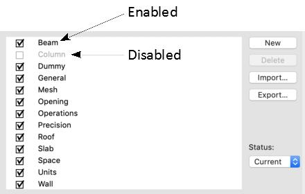
Quantities is designed to support the concept of a master or template recipe list that can be shared across many projects, but some recipes may not be appropriate in every case. The status of every recipe is determined by the adjacent checkbox in the Recipe Manager list. Simply uncheck this box to disable the recipe in the open project.
英文原文对照Official English Original
Quantities is designed to support the concept of a master or template recipe list that can be shared across many projects, but some recipes may not be appropriate in every case. The status of every recipe is determined by the adjacent checkbox in the Recipe Manager list. Simply uncheck this box to disable the recipe in the open project.
4.2.5 如何导入配方
4.2.5 How to import recipes
点击 Import 按钮（插图中的第 2d 项）。将显示一个标准文件浏览对话框，用于选择要导入的配方文件（.quants 扩展名）。所有导入的配方都将与现有配方合并，以确保与现有项目构件的链接不被破坏。
Click the Import button (item 2d in the illustration). A standard file navigation dialog will be displayed to select a recipe file to import (.quants extension). All imported recipes will be merged with any existing recipes to ensure links to existing project elements are not broken.
英文原文对照Official English Original
Click the Import button (item 2d in the illustration). A standard file navigation dialog will be displayed to select a recipe file to import (.quants extension). All imported recipes will be merged with any existing recipes to ensure links to existing project elements are not broken.
4.2.6 如何导出配方
4.2.6 How to export recipes
点击 Export 按钮（插图中的第 2e 项）。将显示一个标准文件浏览对话框，用于指定导出文件的名称和位置（.quants）。
请注意，导出的配方将包含所链接的工程量清单，因为它们无法独立运行。
Click the Export button (item 2e in the illustration). A standard file navigation dialog will be displayed to specify the name and location of the exported file (.quants).
Note that the exported recipes will include the linked bill of quantities because they cannot function independently.
英文原文对照Official English Original
Click the Export button (item 2e in the illustration). A standard file navigation dialog will be displayed to specify the name and location of the exported file (.quants).
Note that the exported recipes will include the linked bill of quantities because they cannot function independently.
4.3 配方基础
4.3 Recipe Basics
本节通过一个非常简单的示例 —— 对配方所附加的构件进行计数 —— 演示使用配方的流程。
虽然这远谈不上有挑战性，但它展示的流程是即使最复杂的测量也所固有的基础。
假定为本练习至少已定义了一个清单条目。如果没有：
- 通过点击菜单项 CI Tools > Quantities > Manage Quantity Take-off 打开工程量管理器，并点击“清单结构”选项卡。
- 点击 New 按钮创建一个清单条目。如有需要，可以随意为该清单条目填写名称、单位和单价。
This section walks through the process of using recipes using a very simple example – counting elements the recipe is attached to.
While this isn’t remotely challenging, it demonstrates the processes that are fundamental to even the most complex measurements.
It is assumed that at least one bill item has been defined for the purpose of this exercise. If not:
- Open the Quantity Take-off Manager by clicking the menu item CI Tools > Quantities > Manage Quantity Take-off and click the Bill Structure tab.
- Click the New button to create a bill item. Feel free to fill in a name, unit and rate for the bill item if desired.
英文原文对照Official English Original
This section walks through the process of using recipes using a very simple example – counting elements the recipe is attached to.
While this isn’t remotely challenging, it demonstrates the processes that are fundamental to even the most complex measurements.
It is assumed that at least one bill item has been defined for the purpose of this exercise. If not:
- Open the Quantity Take-off Manager by clicking the menu item CI Tools > Quantities > Manage Quantity Take-off and click the Bill Structure tab.
- Click the New button to create a bill item. Feel free to fill in a name, unit and rate for the bill item if desired.
4.3.1 如何创建一个简单的“计数”配方
4.3.1 How to create a simple 'counting' recipe
步骤编号如下插图所示：
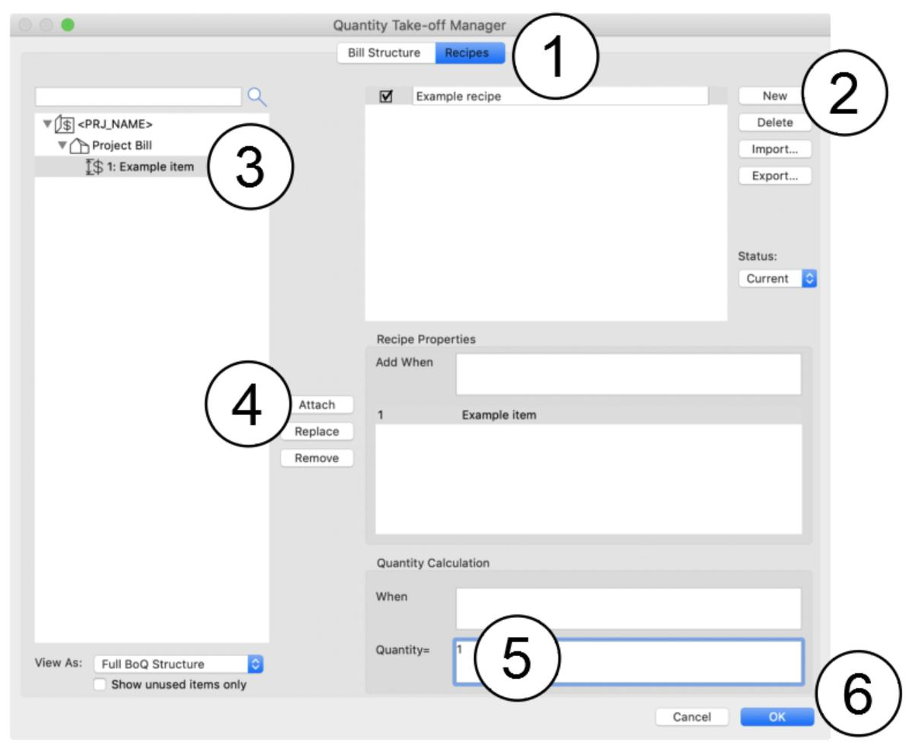
- 通过点击菜单项 CI Tools > Quantities > Manage Quantity Take-off 打开工程量管理器，并点击“配方”选项卡。
- 点击 New 创建一个新配方，并输入名称，例如 Example recipe
- 从左侧列表中选择一个清单条目
- 点击 Attach 按钮，将此清单条目添加为由该配方计量
- 在 Quantity= 字段中只输入数字 1。这仅表示该配方每附加到一个构件，总量就增加 1。
- 点击确定，接受该配方的添加。
The steps are numbered in the following illustration:
- Open the Quantity Take-off Manager by clicking the menu item CI Tools > Quantities > Manage Quantity Take-off and click the Recipes tab.
- Click New to create a new recipe and enter a name, e.g. Example recipe
- Select a bill item from the list to the left
- Click the Attach button to add this bill item to be measured by the recipe
- Enter just the number 1 in the Quantity= field. This simply means that 1 is added to the total for every element this recipe is attached to.
- Click OK to accept the recipe addition.
英文原文对照Official English Original
The steps are numbered in the following illustration:
- Open the Quantity Take-off Manager by clicking the menu item CI Tools > Quantities > Manage Quantity Take-off and click the Recipes tab.
- Click New to create a new recipe and enter a name, e.g. Example recipe
- Select a bill item from the list to the left
- Click the Attach button to add this bill item to be measured by the recipe
- Enter just the number 1 in the Quantity= field. This simply means that 1 is added to the total for every element this recipe is attached to.
- Click OK to accept the recipe addition.
4.3.2 如何将配方手动附加到构件
4.3.2 How to manually attach a recipe to an element
接着第 4.3.1 节的步骤继续操作。步骤编号如下插图所示：
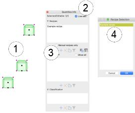
- 在平面图中放置并选中若干把椅子。
- 如果数量信息面板尚未显示，请通过点击菜单 CI Tools > Quantities > Quantities Take-off Palette… 将其显示出来。如果尚未勾选，请点击“实时编辑”复选框。
- 点击配方面板底部的添加按钮 ()
- 从列表中选择您的新配方，然后点击确定
配方现已附加到所选构件上，当选中其中任意一个构件时，它都会显示在面板中。关于如何将配方附加到构件的更多详细信息，请参见第 2.3 节 管理数量特征标记。
Continue from the steps in section 4.3.1. The steps are numbered in the following illustration:
- Place and select some chairs in the floor plan.
- If the Quantity Info palette is not already visible, show it by clicking the menu CI Tools > Quantities > Quantities Take-off Palette… Click the Live edit checkbox if it isn’t already ticked.
- Click the add button () at the base of the recipes panel
- Select your new recipe from the list and click OK
The recipe is now attached to the selected elements and will display in the palette whenever one of them is selected. Refer to section 2.3, Managing Quantity Traits for more detailed information about attaching recipes to elements.
英文原文对照Official English Original
Continue from the steps in section 4.3.1. The steps are numbered in the following illustration:
- Place and select some chairs in the floor plan.
- If the Quantity Info palette is not already visible, show it by clicking the menu CI Tools > Quantities > Quantities Take-off Palette… Click the Live edit checkbox if it isn’t already ticked.
- Click the add button () at the base of the recipes panel
- Select your new recipe from the list and click OK
The recipe is now attached to the selected elements and will display in the palette whenever one of them is selected. Refer to section 2.3, Managing Quantity Traits for more detailed information about attaching recipes to elements.
4.3.3 如何查看算量结果
4.3.3 How to view the scheduled result
接着第 4.3.1 和 4.3.2 节的步骤继续操作。步骤编号如下插图所示：
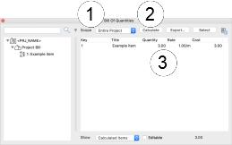
- 如果工程量清单面板尚未显示，请通过点击菜单 CI Tools > Quantities > Bill of Quantities Palette… 将其显示出来。将 Scope 菜单设为 Entire Project，以便测量所有构件。
- 点击 Calculate 按钮开始测量过程。
- 清单条目将列在下方 —— 查找示例配方对链接到该配方的构件进行计数的测量结果（上图中为 3）。关于算量排程的更多详细信息，请参见第 5 节 生成数量。
Continue from the steps in sections 4.3.1 and 4.3.2. The steps are numbered in the following illustration:
- If the Bill of Quantities palette is not already visible, show it by clicking the menu CI Tools > Quantities > Bill of Quantities Palette… Set the Scope menu to Entire Project so that all elements will be measured.
- Click the Calculate button to start the measurement process.
- The bill items will be listed below – look for the measurement from the example recipe counting the number of elements linked to that recipe (3 in the image above). Refer to section 5, Generating Quantities for more detailed information about scheduling quantities.
英文原文对照Official English Original
Continue from the steps in sections 4.3.1 and 4.3.2. The steps are numbered in the following illustration:
- If the Bill of Quantities palette is not already visible, show it by clicking the menu CI Tools > Quantities > Bill of Quantities Palette… Set the Scope menu to Entire Project so that all elements will be measured.
- Click the Calculate button to start the measurement process.
- The bill items will be listed below – look for the measurement from the example recipe counting the number of elements linked to that recipe (3 in the image above). Refer to section 5, Generating Quantities for more detailed information about scheduling quantities.
4.34 如何将配方自动附加到构件
4.34 How to automatically attach a recipe to elements
接着第 4.3.1 至 4.3.3 节的步骤继续操作。步骤编号如下插图所示：
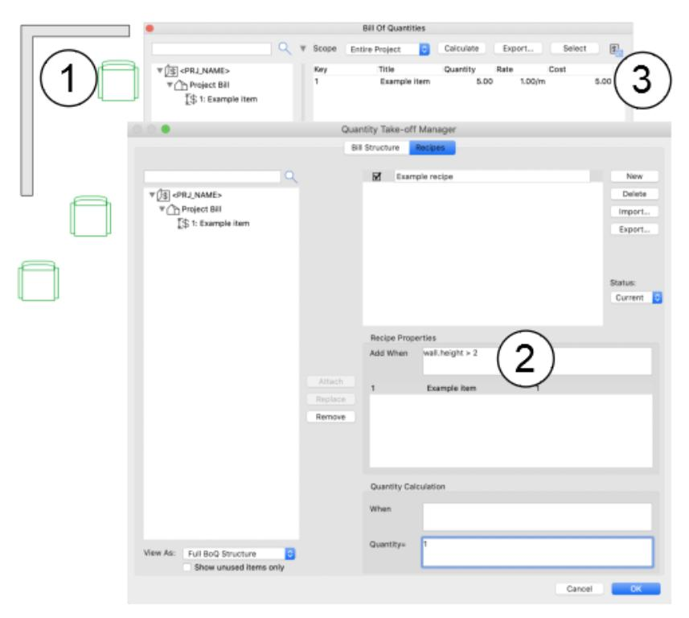
- 在平面图中添加一些高度超过 2m 的墙体
- 通过点击菜单项 CI Tools > Quantities > Manage Quantity Take-off 打开工程量管理器，并点击“配方”选项卡。选中之前创建的示例配方，然后点击“附加条件”（Add When）字段。我们希望此配方附加到刚刚添加的墙体上，因此规则应为“任何属于墙体类型且高于 2m 的构件”。我们可以写为，
element.type = “Wall” and element.height > 2
……但也可以通过直接针对墙体来简化：
wall.height > 2
用 wall 而非 element 作为 height 的前缀，任何非墙体都会被排除。按图示在该字段中输入，然后点击确定。
- 再次点击工程量清单面板中的 Calculate，以重新计算项目数量。总量现在应同时包含手动链接和自动链接的构件：
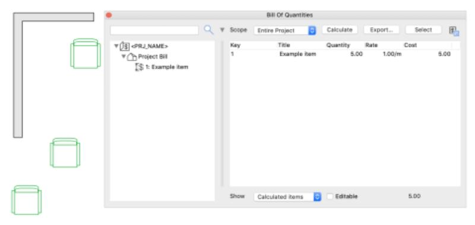
结果是手动附加配方的 3 把椅子加上自动附加的 2 面墙，合计 5 个。请注意，当配方被手动附加到某个构件时，自动附加规则会被忽略，但在此情况下仍然可以附加进一步的规则（参见第 4.6 节 可选测量）。
Continue from the steps in sections 4.3.1 to 4.3.3. The steps are numbered in the following illustration:
- Add some walls over 2m high in the floor plan
- Open the Quantity Take-off Manager by clicking the menu item CI Tools > Quantities > Manage Quantity Take-off and click the Recipes tab. Select the example recipe created earlier and click in the Add When field. We want this recipe to attach to the walls we just added, so the rule should be “any element that is a wall type and higher than 2m”. We could write,
element.type = “Wall” and element.height > 2
…but we can simplify this by directly targeting walls:
wall.height > 2
By prefixing height with wall instead of element, anything that isn’t a wall is eliminated. Enter this in the field as shown and click OK.
- Click Calculate again in the Bill of Quantities palette to recalculate the project quantities. The total should now include the both the manually and automatically linked elements:
The result is a total of 3 chairs with the recipe manually attached and 2 walls automatically attached for a total of 5. Note that the automatic attachment rule is ignored when the recipe is manually attached to an element, but it is still possible to attach further rules in this case (refer to section 4.6, Optional Measurements).
英文原文对照Official English Original
Continue from the steps in sections 4.3.1 to 4.3.3. The steps are numbered in the following illustration:
- Add some walls over 2m high in the floor plan
- Open the Quantity Take-off Manager by clicking the menu item CI Tools > Quantities > Manage Quantity Take-off and click the Recipes tab. Select the example recipe created earlier and click in the Add When field. We want this recipe to attach to the walls we just added, so the rule should be “any element that is a wall type and higher than 2m”. We could write,
element.type = “Wall” and element.height > 2
…but we can simplify this by directly targeting walls:
wall.height > 2
By prefixing height with wall instead of element, anything that isn’t a wall is eliminated. Enter this in the field as shown and click OK.
- Click Calculate again in the Bill of Quantities palette to recalculate the project quantities. The total should now include the both the manually and automatically linked elements:
The result is a total of 3 chairs with the recipe manually attached and 2 walls automatically attached for a total of 5. Note that the automatic attachment rule is ignored when the recipe is manually attached to an element, but it is still possible to attach further rules in this case (refer to section 4.6, Optional Measurements).
4.4 计算测量值
4.4 Calculated Measurements
第 4.3 节提供了使用配方的基本概述，但测量（对构件计数）很容易通过其他方式实现。Quantities 的真正力量在于用于确定如何以及何时测量构件的更丰富表达式。本节深入探讨 BIM 项目中可用于测量的资源。
请注意，第 7 节提供了可用表达式的完整参考。本节则说明如何通过计算来测量 BIM 项目的思路与要点。
Section 4.3 provides a basic overview for using recipes, but the measurement (counting the elements) is easy to achieve by other means. The real power of Quantities lies in richer expressions for determining how and when elements are measured. This section delves into resources of a BIM project that can be used for measurement.
Note that a complete reference of the available expressions is provided in section 7. This section provides some explanation or insight into the way BIM projects can be measured through calculations.
英文原文对照Official English Original
Section 4.3 provides a basic overview for using recipes, but the measurement (counting the elements) is easy to achieve by other means. The real power of Quantities lies in richer expressions for determining how and when elements are measured. This section delves into resources of a BIM project that can be used for measurement.
Note that a complete reference of the available expressions is provided in section 7. This section provides some explanation or insight into the way BIM projects can be measured through calculations.
4.4.1 如果计算依赖项目中不存在的数据会怎样？
4.4.1 What happens if a calculation relies on data that doesn't exist in the project?
当计算引用了不存在的数据时 —— 无论出于什么原因 —— 都不会引发错误或中断测量过程。该属性的值被视为空或无值，使用该值的任何计算结果也将变为空，最终得到零/假的结果。这意味着附加配方或执行测量的测试可以包含属性名称 —— 如果该属性不存在，结果为假，相应操作不会执行。
这使得创建和维护适用于各种项目的模板配方变得容易得多，即使当前打开的项目完全是空的。
When a calculation references data that doesn’t exist – for whatever reason – it does not cause an error or interrupt the measurement process. The value for that property is treated as void or empty, and the result of any calculation using that value will also become void, ultimately yielding a zero/false result. This means that the tests for attaching a recipe or actioning a measurement can include a property name – if the property doesn’t exist, the result is false and the action is not taken.
This makes it far easier to create and maintain template recipes that are applicable across a wide range of projects, even when the currently open project is completely empty.
英文原文对照Official English Original
When a calculation references data that doesn’t exist – for whatever reason – it does not cause an error or interrupt the measurement process. The value for that property is treated as void or empty, and the result of any calculation using that value will also become void, ultimately yielding a zero/false result. This means that the tests for attaching a recipe or actioning a measurement can include a property name – if the property doesn’t exist, the result is false and the action is not taken.
This makes it far easier to create and maintain template recipes that are applicable across a wide range of projects, even when the currently open project is completely empty.
4.4.10 如何使用对象参数
4.4.10 How to use object parameters
所有参数都可以通过表达式 element.parameter 加上所需参数的名称来访问，例如：
element.parameter.gs_list_manufacturer
请注意，参数名称不必用引号或括号括起来。如果构件没有参数，或者没有所请求名称的参数，则所得值为空 —— 这不会引发错误，使用该值的任何计算都将得到零结果。
如果参数是数组，则只返回数组的第一个值。如第 4.4.2 节 数据类型重要吗？ 所述，Quantities 对参数值类型的差异具有很强的容错性。
All parameters can be accessed with the expression element.parameterfollowed by the name of the required parameter, e.g.:
element.parameter.gs_list_manufacturer
Note that it not necessary to enclose the parameter name in quote marks or parentheses. The resulting value is void if the element either doesn’t have parameters or doesn’t have a parameter with the requested name – this does not cause errors and any calculations using that value will yield a result of zero.
If the parameter is an array, only the first value of the array is returned. Quantitiesis highly tolerant of parameter value type differences as noted in section 4.4.2, Does the data type matter?.
英文原文对照Official English Original
All parameters can be accessed with the expression element.parameterfollowed by the name of the required parameter, e.g.:
element.parameter.gs_list_manufacturer
Note that it not necessary to enclose the parameter name in quote marks or parentheses. The resulting value is void if the element either doesn’t have parameters or doesn’t have a parameter with the requested name – this does not cause errors and any calculations using that value will yield a result of zero.
If the parameter is an array, only the first value of the array is returned. Quantitiesis highly tolerant of parameter value type differences as noted in section 4.4.2, Does the data type matter?.
4.4.11 如何使用 IFC 属性和属性项
4.4.11 How to use IFC properties and attributes
IFC 属性和属性项的使用方式与 ARCHICAD 属性完全相同（参见第 4.4.7 节 如何使用属性）。IFC 属性集的引用方式与 ARCHICAD 属性组相同，将集名作为前缀加在 IFC 属性名之前也是可选的（如果您确信属性名是唯一的）。IFC 属性项不按集组织，应仅按名称引用。以下是示例：
| 带集的 IFC 属性 | *element.ifcProperty("Pset_QuantityTakeOff::Reference")* |
|---|---|
| IFC 属性 | *element.ifcProperty("Reference")* |
| IFC 属性项 | *element.ifc**A**ttribute**("Description")* |
如果构件没有所请求名称的 IFC 属性/属性项，则所得值为空 —— 这不会引发错误，使用该值的任何计算都将得到零结果。如第 4.4.2 节 数据类型重要吗？ 所述，Quantities 对属性值类型的差异具有很强的容错性。单位由 IFC 文档定义，使用这些单位的计算可能需要引入换算系数。
IFC properties and attributes can be used in exactly the same way as ARCHICAD properties (see section 4.4.7, How to use properties). IFC property sets are referenced just like ARCHICAD property groups, and prefixing the set name to the IFC property name is also optional (if you are confident the property name is unique). IFC attributes are not arranged in sets and should be referenced by name alone. Examples follow below:
| IFC property with set | *element.ifcProperty("Pset_QuantityTakeOff::Reference")* |
|---|---|
| IFC property | *element.ifcProperty("Reference")* |
| IFC attribute | *element.ifc**A**ttribute**("Description")* |
The resulting value is void if the element doesn’t have an IFC property/attribute with the requested name – this does not cause errors and any calculations using that value will yield a result of zero. Quantitiesis highly tolerant of property value type differences, as noted in section 4.4.2, Does the data type matter?. Units are defined by the IFC documentation and calculations using them may need to incorporate a conversion factor.
英文原文对照Official English Original
IFC properties and attributes can be used in exactly the same way as ARCHICAD properties (see section 4.4.7, How to use properties). IFC property sets are referenced just like ARCHICAD property groups, and prefixing the set name to the IFC property name is also optional (if you are confident the property name is unique). IFC attributes are not arranged in sets and should be referenced by name alone. Examples follow below:
| IFC property with set | *element.ifcProperty("Pset_QuantityTakeOff::Reference")* |
|---|---|
| IFC property | *element.ifcProperty("Reference")* |
| IFC attribute | *element.ifc**A**ttribute**("Description")* |
The resulting value is void if the element doesn’t have an IFC property/attribute with the requested name – this does not cause errors and any calculations using that value will yield a result of zero. Quantitiesis highly tolerant of property value type differences, as noted in section 4.4.2, Does the data type matter?. Units are defined by the IFC documentation and calculations using them may need to incorporate a conversion factor.
4.4.2 数据类型重要吗？
4.4.2 Does the data type matter?
Quantities 对混合数据类型具有很强的容错性。如果它在需要文本的地方找到了数字，就会把数字转换为文本（反之亦然）。在需要数字的地方找到文本时，会尝试将文本转换为数字 —— 如果没有找到数字字符，结果为零。因此以下语句在功能上是等同的：
element.height > 2element.height > “2”对于不同的单位类型也是如此，例如您可以混用任何类型的属性，即使它们混合了体积、长度等，例如：
element.area > element.perimeter清单条目的单位类型与计算中任何数值所用的单位同样无关紧要。清单可以采用非标准方式计量数量，例如“袋”，因此软件假定用户知道需要什么。
Quantities is very tolerant with mixed data types. If it finds a number where text is expected, it converts the number to text (and vice-versa). Where text is found when a number is expected, a conversion from the text to a number will be attempted – the result will be zero if no numeric characters are found. So the following statements are functionally identical:
element.height > 2element.height > “2”The same is true for different unit types, e.g. you can mix any type of property even if they mix volume, length etc., e.g.:
element.area > element.perimeterThe unit type of the bill item is also irrelevant to the units of any values used in the calculation. A bill can measure quantities in non-standard ways, e.g. bags, so the software assumes the user knows what is required.
英文原文对照Official English Original
Quantities is very tolerant with mixed data types. If it finds a number where text is expected, it converts the number to text (and vice-versa). Where text is found when a number is expected, a conversion from the text to a number will be attempted – the result will be zero if no numeric characters are found. So the following statements are functionally identical:
element.height > 2element.height > “2”The same is true for different unit types, e.g. you can mix any type of property even if they mix volume, length etc., e.g.:
element.area > element.perimeterThe unit type of the bill item is also irrelevant to the units of any values used in the calculation. A bill can measure quantities in non-standard ways, e.g. bags, so the software assumes the user knows what is required.
4.4.3 数值使用什么单位？
4.4.3 What units are used for numeric values?
所有几何构件测量值，例如高度、面积、体积，都是基于米的公制，即任何长度测量以米计，面积以平方米计，体积以立方米计。因此，如果墙体绘制为 3 英尺高（使用英制单位），表达式 wall.height 的结果为 0.9144。计算中的任何数字都不假定带有任何单位，而是按面值读取，即不进行任何换算。
如有需要，可以使用显式的单位换算，因此将墙体高度与以英制表示的数值比较可以写为：
wall.height > 3ft……或……
wall.height > 3’可用单位包括 mm、cm、in（"）、ft（'）、mm2、cm2、in2、ft2、mm3、cm3、in3、ft3。
请注意，Quantities 不会根据从构件提取的数据或任何带单位后缀的数值对计算结果的单位作任何假设，也不会基于目标清单条目所选单位施加任何换算。例如，如果您想从 ARCHICAD（以米为单位）提取长度并将其关联到以毫米计量的清单条目，就需要将计算结果乘以 1000。
All geometric element measurements, e.g. height, area, volume, are metric and based on metres, i.e. any measurement of length is in metres, area in metres squared and volume in metres cubed. So if a wall is drawn 3 feet high (using imperial units), the expression wall.height will yield 0.9144. Any numbers in a calculation are not assumed to be any unit and are read at face value, i.e. no conversion is applied.
Explicit unit conversions can be used if required, so a wall height compared to a figure in imperial units could be written as:
wall.height > 3ft…or…
wall.height > 3’Available units include mm, cm, in (“), ft (‘), mm2, cm2, in2, ft2, mm3, cm3, in3, ft3.
Note that Quantities does not make any assumptions about the units of the calculated result based on the data extracted from elements or any numeric values with a unit suffix, and will not apply any conversions based on the unit selected for the target bill item. For example, you would need to multiply a calculated result by 1000 if you wanted to extract a length from ARCHICAD (which is in metres) and attach it to a bill item measured in millimetres.
英文原文对照Official English Original
All geometric element measurements, e.g. height, area, volume, are metric and based on metres, i.e. any measurement of length is in metres, area in metres squared and volume in metres cubed. So if a wall is drawn 3 feet high (using imperial units), the expression wall.height will yield 0.9144. Any numbers in a calculation are not assumed to be any unit and are read at face value, i.e. no conversion is applied.
Explicit unit conversions can be used if required, so a wall height compared to a figure in imperial units could be written as:
wall.height > 3ft…or…
wall.height > 3’Available units include mm, cm, in (“), ft (‘), mm2, cm2, in2, ft2, mm3, cm3, in3, ft3.
Note that Quantities does not make any assumptions about the units of the calculated result based on the data extracted from elements or any numeric values with a unit suffix, and will not apply any conversions based on the unit selected for the target bill item. For example, you would need to multiply a calculated result by 1000 if you wanted to extract a length from ARCHICAD (which is in metres) and attach it to a bill item measured in millimetres.
4.4.4 如何测量基本构件几何
4.4.4 How to measure basic element geometry
大多数几何表达式相当通用，适用于所有构件，例如 height、width、depth、perimeter、area 和 volume。将其应用于测量很直接，例如计算包围构件的盒体体积：
element.height element.width element.depth
精确的构件体积只需 element.volume。构件所在楼层的部分信息也可用，包括：
| 楼层基准标高：楼层高度： | *element.storey.level****element.storey.height* |
|---|
完整的几何测量列表见第 7.2 节。
The majority of geometry expressions are fairly generic and apply to all elements, e.g. height, width, depth, perimeter,areaand volume. Application to measurements is straightforward, e.g. calculating the volume of a box bounding an element:
element.height element.width element.depth
The precise element simply element.volume. Some information about the element’s home storey is also available including:
| Storey base level:Storey height: | *element.storey.level****element.storey.height* |
|---|
A full list of geometry measurements can be found in section 7.2.
英文原文对照Official English Original
The majority of geometry expressions are fairly generic and apply to all elements, e.g. height, width, depth, perimeter,areaand volume. Application to measurements is straightforward, e.g. calculating the volume of a box bounding an element:
element.height element.width element.depth
The precise element simply element.volume. Some information about the element’s home storey is also available including:
| Storey base level:Storey height: | *element.storey.level****element.storey.height* |
|---|
A full list of geometry measurements can be found in section 7.2.
4.4.5 如何测量特定构件的几何
4.4.5 How to measure the geometry of specific elements
某些构件类型具有独特的几何特征，包括：
- 区域（第 7.9 节）
- 洞口（第 Error: Reference source not found 节）
- 墙体（第 7.11 节）
- 柱（第 7.14 节）
- 梁（第 7.17 节）
- 楼板（第 7.22 节）
- 屋顶（第 7.24 节）
例如，Opening 构件（门、窗等）提供侧壁尺寸。在每种情况下，都要用相关的构件类型作为所需测量的前缀，例如对于洞口侧壁：
| 侧壁宽度：侧壁深度：侧壁表面积： | *opening.widthReveal****opening.depthRevealopening.surfaceReveal* |
|---|
请注意，屋顶的放样测量（例如屋脊/斜戗/天沟长度）依赖于 ARCHICAD 中恰当的屋顶边缘标记。
Some element types have unique geometric characteristics including:
- Zones (section 7.9 )
- Openings (section Error: Reference source not found )
- Walls (section 7.11 )
- Columns (section 7.14 )
- Beams (section 7.17 )
- Slabs (section 7.22 )
- Roofs (section 7.24 )
For example, Opening elements (doors, windows etc) provide the size of the reveals. In every case, prefix the required measurement with the relevant element type, e.g. for opening reveals:
| Reveal width:Reveal depth:Reveal surface: | *opening.widthReveal****opening.depthRevealopening.surfaceReveal* |
|---|
Note that setout measurements of a roof, e.g. ridge/hip/valley length, rely on appropriate roof edge tagging in ARCHICAD.
英文原文对照Official English Original
Some element types have unique geometric characteristics including:
- Zones (section 7.9 )
- Openings (section Error: Reference source not found )
- Walls (section 7.11 )
- Columns (section 7.14 )
- Beams (section 7.17 )
- Slabs (section 7.22 )
- Roofs (section 7.24 )
For example, Opening elements (doors, windows etc) provide the size of the reveals. In every case, prefix the required measurement with the relevant element type, e.g. for opening reveals:
| Reveal width:Reveal depth:Reveal surface: | *opening.widthReveal****opening.depthRevealopening.surfaceReveal* |
|---|
Note that setout measurements of a roof, e.g. ridge/hip/valley length, rely on appropriate roof edge tagging in ARCHICAD.
4.4.6 如何使用值列表
4.4.6 How to use a list of values
某些表达式可能会提供多个值，例如多皮墙体中的材质（通过 material 获取）。任何可能返回多个值的表达式始终返回一个列表，因此不能将其当作单个值处理。相反，Quantities 提供了用于在列表中搜索值的表达式：
| **includes** | *element.material includes “Brick”* | 在列表中搜索与该文本完全匹配的项目。示例表达式只会找到“Brick”，而不会找到“Red Brickwork”或“Brick – Engineered”等。 |
|---|---|---|
| **contains** | *element.material contains “Brick”* | 在列表中搜索包含该文本的项目。示例表达式会找到“Brick”、“Red Brickwork”或“Brick – Engineered”等。 |
某些列表中的项目（包括 materials、properties、parameters 等）带有相关联的值，例如 material 有 area 和 volume。要引用列表中的单个项目，请在括号中添加该项目名称，例如：
element.material(“Red Brick”)
请注意，如果在列表中找不到该名称，不会产生任何错误或问题 —— 这仅仅意味着使用该项目的任何计算均为空，即结果始终为零。如果该项目有多个值，可以在其后跟上所需值的表达式，例如特定材质的体积为：
element.material(“Red Brick”).volume
某些列表项目也按组组织，包括 ARCHICAD 属性（第 4.4.7 节）和 IFC 属性（第 4.4.11 节）。项目名称可能仅在其所属组内唯一，此时可以用组名作为前缀，如下所示：
element.property(“Common::Description”)
此示例将从名为“Common”的组中获取名为“Description”的属性。其他组中的同名属性将被忽略。此时结果为单个值，可以这样使用：
element.property(“Common::Description”) startsWith “Fixtures”
此示例只有在构件于名为“Common”的组中拥有名为“Description”的属性、且其值以“Fixtures”开头时才会计算为 true，例如“Fixtures::Sanitary”。如果构件没有该属性或值不匹配，结果为 false。此类表达式可用作自动附加配方（第 4.5 节）或进行可选测量（第 4.6 节）的基础。
也可以输入一个值列表，与来自 ARCHICAD 的数据进行比较，以避免如下冗长重复的语句：
(element.type = “Wall”) or (element.type = “Column”) or (element.type = “Beam”)
这样的语句可能长得多，很快就会变得难以编写和阅读。Quantities 提供了两个表达式来精简这些语句：
| **in** | *element.type in (“Wall, “Column”, “Beam”)* | 在值列表中搜索与数据值完全匹配的项。在示例中，只有构件类型为“wall”、“column”或“beam”时才匹配。 |
|---|---|---|
| **has** | *element.material h**as* *(**“Brick”, “**Concrete”)* | 在值列表中搜索与数据值部分匹配的项。在示例中，任何包含“brick”或“concrete”一词的材质名称都匹配，包括“**Brick**work”、“Structural **Concrete**”、“Masonry – Engineered **Brick**-2” |
请注意，这两个表达式既可用于查找与单个数据值（element.type）的匹配，也可用于查找与值列表（element.material）的匹配。
Some expressions might provide more than one value, e.g. the materials in a multi-skin wall (retrieved with material). Any expression that can potentially reply with more than one value always responds with a list, so cannot be treated as if it were a single value. Instead, Quantities provides expressions that searches for values in a list:
| **includes** | *element.material includes “Brick”* | Searches for an item in the list exactly matching the text. The sample expression would only find “Brick”, not “Red Brickwork” or “Brick – Engineered” etc. |
|---|---|---|
| **contains** | *element.material contains “Brick”* | Searches for an item in the list containing the text. The sample expression would find “Brick”, “Red Brickwork” or “Brick – Engineered” etc. |
The items in some lists, including materials, properties, parameters etc, have associated values, e.g. a material has an areaand volume. To reference a single item in a list, add the name of the item in parenthesis, e.g.:
element.material(“Red Brick”)
Note that no errors or problems arise if the name can’t be found in the list – it simply means that any calculations using that item are void, i.e. the result will always be zero. If the item has multiple values, it can be followed with the expression for the required value, e.g. the volume of a specific material would be:
element.material(“Red Brick”).volume
Some list items are also arranged in groups, including ARCHICAD properties (section 4.4.7) and IFC properties (section 4.4.11). The item name might only be unique within its own group, in which case it can be prefixed with the group name as follows:
element.property(“Common::Description”)
This example would retrieve a property called “Description” from a group called “Common”. Properties with the same name in other groups will be ignored. In this case, the result is a single value and can be used like this:
element.property(“Common::Description”) startsWith “Fixtures”
This example will only calculate as true if the element has a property called “Description” in a group called “Common” and its value starts with “Fixtures”, e.g. “Fixtures::Sanitary”. If the element doesn’t have that property or the value doesn’t match, the result is false. An expression like this can be used as the basis for automatically attached recipes (section 4.5) or taking optional measurements (section 4.6).
It is also possible to enter a list of values to be compared to data from ARCHICAD in order to avoid long, repetitive statements like:
(element.type = “Wall”) or (element.type = “Column”) or (element.type = “Beam”)
Statements like this can be much longer, rapidly becoming tedious to write and difficult to read. Quantitiesprovides two expressions to condense these statements:
| **in** | *element.type in (“Wall, “Column”, “Beam”)* | Searches the list of values for an exact match to the data value. In the example, only an element type of “wall”, “column” or “beam” is a match. |
|---|---|---|
| **has** | *element.material h**as* *(**“Brick”, “**Concrete”)* | Searches the list of values for a partial match to the data value. In the example, any material name containing the word “brick” or “concrete” is a match including “**Brick**work”, “Structural **Concrete**”, “Masonry – Engineered **Brick**-2” |
Note that both these expressions can be used to find a match to a single data value (element.type) or a list of values (element.material).
英文原文对照Official English Original
Some expressions might provide more than one value, e.g. the materials in a multi-skin wall (retrieved with material). Any expression that can potentially reply with more than one value always responds with a list, so cannot be treated as if it were a single value. Instead, Quantities provides expressions that searches for values in a list:
| **includes** | *element.material includes “Brick”* | Searches for an item in the list exactly matching the text. The sample expression would only find “Brick”, not “Red Brickwork” or “Brick – Engineered” etc. |
|---|---|---|
| **contains** | *element.material contains “Brick”* | Searches for an item in the list containing the text. The sample expression would find “Brick”, “Red Brickwork” or “Brick – Engineered” etc. |
The items in some lists, including materials, properties, parameters etc, have associated values, e.g. a material has an areaand volume. To reference a single item in a list, add the name of the item in parenthesis, e.g.:
element.material(“Red Brick”)
Note that no errors or problems arise if the name can’t be found in the list – it simply means that any calculations using that item are void, i.e. the result will always be zero. If the item has multiple values, it can be followed with the expression for the required value, e.g. the volume of a specific material would be:
element.material(“Red Brick”).volume
Some list items are also arranged in groups, including ARCHICAD properties (section 4.4.7) and IFC properties (section 4.4.11). The item name might only be unique within its own group, in which case it can be prefixed with the group name as follows:
element.property(“Common::Description”)
This example would retrieve a property called “Description” from a group called “Common”. Properties with the same name in other groups will be ignored. In this case, the result is a single value and can be used like this:
element.property(“Common::Description”) startsWith “Fixtures”
This example will only calculate as true if the element has a property called “Description” in a group called “Common” and its value starts with “Fixtures”, e.g. “Fixtures::Sanitary”. If the element doesn’t have that property or the value doesn’t match, the result is false. An expression like this can be used as the basis for automatically attached recipes (section 4.5) or taking optional measurements (section 4.6).
It is also possible to enter a list of values to be compared to data from ARCHICAD in order to avoid long, repetitive statements like:
(element.type = “Wall”) or (element.type = “Column”) or (element.type = “Beam”)
Statements like this can be much longer, rapidly becoming tedious to write and difficult to read. Quantitiesprovides two expressions to condense these statements:
| **in** | *element.type in (“Wall, “Column”, “Beam”)* | Searches the list of values for an exact match to the data value. In the example, only an element type of “wall”, “column” or “beam” is a match. |
|---|---|---|
| **has** | *element.material h**as* *(**“Brick”, “**Concrete”)* | Searches the list of values for a partial match to the data value. In the example, any material name containing the word “brick” or “concrete” is a match including “**Brick**work”, “Structural **Concrete**”, “Masonry – Engineered **Brick**-2” |
Note that both these expressions can be used to find a match to a single data value (element.type) or a list of values (element.material).
4.4.7 如何使用属性
4.4.7 How to use properties
ARCHICAD 属性本身就提供了丰富的计算引擎，应当在数量计算中尽可能充分利用。即使不需要属性之外的任何计算，Quantities 也会确保结果被分配到正确的清单条目中。但用 Quantities 能做的事情远不止这些 —— 访问参数、IFC 属性以及饰面/材质列表等 —— 而属性往往只是包含复杂测量所必需的原始值。
请注意，计算中可以包含任何您想要的属性名称 —— Quantities 不要求该属性必须存在才接受该表达式（参见上文第 4.4.1 节）。这使得创建适用于各种项目的模板配方变得容易得多。
构件属性的获取方式如下：
element.property
构件可能有许多属性，因此结果是一个列表（详见第 4.4.6 节）。我们可以通过指定名称和组来使用某个具体属性的值：
element.property(“
属性组名称是可选的，但如果存在多个同名属性（ARCHICAD 允许在不同组中存在同名属性），Quantities 将采用它找到的第一个。例如，要从名为 Masonry 的组中名为 Brick volume 的属性获取“每块砖的体积”，可以写为：
| 带组：不带组： | *element.property(“Masonry::Brick volume”)element.property(“Brick volume”)* |
|---|
为确保该属性仅针对墙体提取，表达式可以写为：
wall.property(“Brick volume”)
如果要基于名为 Masonry – Brick 的特定材质计算砖块数量（假设砖体积已计入砂浆），则需要墙体中该材质各皮层的总体积（参见第 4.4.8 节）：
wall.material(“Masonry – Brick”).volume
砖块总数的计算会将该体积除以单块砖的体积，如下所示：
wall.material(“Masonry – Brick”).volume / wall.property(“Brick volume”)
当构件不符合任何必要条件时（不是墙体、没有 Masonry – Brick 的皮层、没有名为 Brick Volume 的属性），结果为零（不会发生任何错误，无论是数学错误还是其他错误）。
ARCHICAD properties provide a rich calculation engine in their own right and should be exploited as fully as possible for quantity calculations. Even if no calculations outside properties are required, Quantities will ensure the results are allocated to the correct bill items. But there is much more you can do with Quantities – accessing parameters, IFC properties and lists of finishes/materials etc. – and properties often simply contain raw values essential for complex measurements.
Note that a calculation can include any property name you like – Quantities does not require the property to exist in order to accept the expression (refer to section 4.4.1 above). This makes it far easier to create template recipes that are applicable across a wide range of projects.
Element properties are retrieved in the following way:
element.property
Elements may have many properties, so the result is in a list (see section 4.4.6 for more detail). We can work with the value of a specific value by specifying its name and group:
element.property(“
A property group name is optional, but if there are multiple properties with the same name (which ARCHICAD permits in separate groups) Quantities will take the first one it finds. For example, to get the ‘volume per brick’ from a property called Brick volume in a group called Masonry we could write:
| With group:Without group: | *element.property(“Masonry::Brick volume”)element.property(“Brick volume”)* |
|---|
To ensure the property was only extracted for walls, the expression could be:
wall.property(“Brick volume”)
If the number of bricks was to be calculated based on a specific material called Masonry – Brick (assuming the brick volume accounts for mortar), the total volume of skins of that material in a wall is required (see section 4.4.8):
wall.material(“Masonry – Brick”).volume
The calculation for the total number of bricks would divide that volume by the single brick volume like so:
wall.material(“Masonry – Brick”).volume / wall.property(“Brick volume”)
When an element doesn’t fit any of the necessary criterion (not a wall, doesn’t have a skin of Masonry – Brick, doesn’t have a property called Brick Volume) the result is zero (no errors will occur, mathematical or otherwise).
英文原文对照Official English Original
ARCHICAD properties provide a rich calculation engine in their own right and should be exploited as fully as possible for quantity calculations. Even if no calculations outside properties are required, Quantities will ensure the results are allocated to the correct bill items. But there is much more you can do with Quantities – accessing parameters, IFC properties and lists of finishes/materials etc. – and properties often simply contain raw values essential for complex measurements.
Note that a calculation can include any property name you like – Quantities does not require the property to exist in order to accept the expression (refer to section 4.4.1 above). This makes it far easier to create template recipes that are applicable across a wide range of projects.
Element properties are retrieved in the following way:
element.property
Elements may have many properties, so the result is in a list (see section 4.4.6 for more detail). We can work with the value of a specific value by specifying its name and group:
element.property(“
A property group name is optional, but if there are multiple properties with the same name (which ARCHICAD permits in separate groups) Quantities will take the first one it finds. For example, to get the ‘volume per brick’ from a property called Brick volume in a group called Masonry we could write:
| With group:Without group: | *element.property(“Masonry::Brick volume”)element.property(“Brick volume”)* |
|---|
To ensure the property was only extracted for walls, the expression could be:
wall.property(“Brick volume”)
If the number of bricks was to be calculated based on a specific material called Masonry – Brick (assuming the brick volume accounts for mortar), the total volume of skins of that material in a wall is required (see section 4.4.8):
wall.material(“Masonry – Brick”).volume
The calculation for the total number of bricks would divide that volume by the single brick volume like so:
wall.material(“Masonry – Brick”).volume / wall.property(“Brick volume”)
When an element doesn’t fit any of the necessary criterion (not a wall, doesn’t have a skin of Masonry – Brick, doesn’t have a property called Brick Volume) the result is zero (no errors will occur, mathematical or otherwise).
4.4.8 如何使用材质
4.4.8 How to use materials
单个构件可以包含任意数量的材质，因此表达式 element.material 提供的是一个列表（详见第 4.4.6 节）。该列表可能为空（例如对于 fill 构件），也可能是单个项目，但在计算中应始终将其视为列表。它有两种可能的用途：
- 按名称搜索材质
这在根据材质自动附加配方（参见第 4.5 节）或确定配方应进行哪些测量（参见第 4.6 节）时非常有用。考虑一个用于测量所有砖类型的配方 —— 它可以自动附加到任何材质中包含“brick”一词的墙体：
wall.material contains “brick”
这会附加到材质类似于“ Brick ”、“Red Brick work”、“ Brick – Engineered”、“Reclaimed Brick ”等的墙体。
该配方可能包含一长串测量项，每一项都用合适的表达式针对特定类型的砖，例如：
wall.m aterial includes “Brick – Furness Handbridge Blend 215”
只有当墙体包含名称与“Brick – Furness Handbridge Blend 215”完全匹配的材质时，才会进行相应的数量计算。
- 计算材质的几何数量
列表中的每种材质都有可用于数量计算的面积和体积。可以通过附加名称来引用列表中的特定材质，例如对于名为“Red Brick”的材质：
element.material(“Red Brick”)
名称必须完全匹配，例如上例不会找到“Red Brick 1”。材质数量包括：
area
element.material(“Red Brick”). area
平面面积
volume
element.material(“Red Brick”). volume
总体积
如果一个构件包含多个与指定材质匹配的皮层，面积和体积将累加所有这些皮层的数量。
A single element may contain any number of materials, so the expression element.material provides a list (see section 4.4.6 for more detail). The list could be empty (e.g. for a fill element) or have a single item, but should always be treated as a list in calculations. It has two possible uses:
- Searching for materials based on the name
This is often useful for attaching recipes automatically based on its materials (see section 4.5) or determining which measurements the recipe should make (see section 4.6). Consider a recipe intended to take measurement of all types of brick – it might automatically attach to any wall with a material containing the word “brick”:
wall.material contains “brick”
This would attach to walls with materials like “ Brick ”, “Red Brick work”, “ Brick – Engineered”, “Reclaimed Brick ” etc.
The recipe might have a long list of measurements, each targeting a specific type of brick by a suitable expression, e.g.:
wall.m aterial includes “Brick – Furness Handbridge Blend 215”
The associated quantity calculation will only be made when the wall includes a material exactly matching the name “Brick – Furness Handbridge Blend 215”.
- Calculating geometric material quantities
Every material in a list has an area and volume that can be used in quantity calculations. A specific material can be referenced in a list by appending its name, e.g. for a material called “Red Brick”:
element.material(“Red Brick”)
The name must be an exact match, e.g. the above would not find “Red Brick 1”. The material quantities include:
area
element.material(“Red Brick”). area
T he floor plan area
volume
element.material(“Red Brick”). volume
T he total volume
I f an element contains multiple skins matching the specified material, area and volume will total up the quantities from them all.
英文原文对照Official English Original
A single element may contain any number of materials, so the expression element.material provides a list (see section 4.4.6 for more detail). The list could be empty (e.g. for a fill element) or have a single item, but should always be treated as a list in calculations. It has two possible uses:
- Searching for materials based on the name
This is often useful for attaching recipes automatically based on its materials (see section 4.5) or determining which measurements the recipe should make (see section 4.6). Consider a recipe intended to take measurement of all types of brick – it might automatically attach to any wall with a material containing the word “brick”:
wall.material contains “brick”
This would attach to walls with materials like “ Brick ”, “Red Brick work”, “ Brick – Engineered”, “Reclaimed Brick ” etc.
The recipe might have a long list of measurements, each targeting a specific type of brick by a suitable expression, e.g.:
wall.m aterial includes “Brick – Furness Handbridge Blend 215”
The associated quantity calculation will only be made when the wall includes a material exactly matching the name “Brick – Furness Handbridge Blend 215”.
- Calculating geometric material quantities
Every material in a list has an area and volume that can be used in quantity calculations. A specific material can be referenced in a list by appending its name, e.g. for a material called “Red Brick”:
element.material(“Red Brick”)
The name must be an exact match, e.g. the above would not find “Red Brick 1”. The material quantities include:
area
element.material(“Red Brick”). area
T he floor plan area
volume
element.material(“Red Brick”). volume
T he total volume
I f an element contains multiple skins matching the specified material, area and volume will total up the quantities from them all.
4.4.9 如何使用饰面
4.4.9 How to use finishes
出于测量目的，ARCHICAD 的“表面”在测量中被称为“饰面”，以避免与表面积的测量相混淆，并明确其含义。与材质一样，同一构件可以应用任意数量的饰面，因此请求构件的 finishes 会返回一个项目列表（参见第 4.4.6 节）。其用法与材质完全相同（参见第 4.4.8 节），唯一例外是引用特定饰面（例如 wall.finishes("Paint-White")）时会直接给出该饰面所应用的面积，即无需写成 wall.finishes("Paint-White").area。
ARCHICAD ‘Surfaces’ are named ‘Finishes’ for measurement purposes to avoid confusion with measurement of surface area and to clarify the intended meaning. Like materials, there can be any number of finishes applied to the same element, so a request for the element finishes delivers a list of items (see section 4.4.6). This can be used in exactly the same way as materials (see section 4.4.8) with the exception that referencing a specific finish, e.g. wall.finishes(“Paint-White”), directly provides the total area the finish has been applied to, i.e. it is not necessary to write wall.finishes(“Paint-White”).area.
英文原文对照Official English Original
ARCHICAD ‘Surfaces’ are named ‘Finishes’ for measurement purposes to avoid confusion with measurement of surface area and to clarify the intended meaning. Like materials, there can be any number of finishes applied to the same element, so a request for the element finishes delivers a list of items (see section 4.4.6). This can be used in exactly the same way as materials (see section 4.4.8) with the exception that referencing a specific finish, e.g. wall.finishes(“Paint-White”), directly provides the total area the finish has been applied to, i.e. it is not necessary to write wall.finishes(“Paint-White”).area.
4.5 自动测量
4.5 Automatic Measurements
虽然有时必须手动为 BIM 项目构件选择配方，但 Quantities 的真正力量来自那些自动完成所需测量的规则。通过基于模板化属性、属性项和分类来定义规则，任何依照这些模板建模的项目都可以随时完成造价核算，无需任何额外工作。
While it is sometimes necessary to manually select a recipe for measuring a BIM project element, the real power of Quantities is harnessed through rules that automatically take the required measurements. By defining rules based on templated attributes, properties and classifications, any project modelled from those templates can be costed at any time without any additional effort.
英文原文对照Official English Original
While it is sometimes necessary to manually select a recipe for measuring a BIM project element, the real power of Quantities is harnessed through rules that automatically take the required measurements. By defining rules based on templated attributes, properties and classifications, any project modelled from those templates can be costed at any time without any additional effort.
4.5.1 如何将配方自动链接到构件
4.5.1 How to automatically link a recipe to an element
所有配方都可以定义一条规则，以自动绑定到目标构件 —— 参见第 4.2 节 测量配方 插图中的第 4a 项。该规则是一个对目标构件为真的表达式。如果目标是任意墙体类型的构件，表达式为：
element.type = “Wall”
反之，如果我们想要所有不是墙体类型的构件：
not(element.type = “Wall”)
规则中可以有多个条件，用 "and" 或 "or" 连接。例如，如果排水管线由以下构件表示：
- 属于墙体类型 wall 或梁类型
- …… 且其 ID 中包含文本 "pipe"
…… 我们可以写成：
(element.type = “Wall” or element.type = “Beam”) and element.id contains “pipe”
请注意，对墙体或梁的检查被括在括号内 —— 这意味着会先检查它，即在查看括号外的任何内容之前。即使不加括号，该规则仍然会被接受，但含义会产生歧义 —— 另一种可能的含义是这些构件：
- 属于墙体类型
- …… 或属于梁类型且其 ID 包含 "pipe"
…… 这将指向所有墙体以及任何 ID 中包含 "pipe" 的梁。一条实用的准则是：只有当表达式同时组合了 "and" 和 "or" 时才需要括号，并把它们加在包含 "and" 的条件周围。
All recipes can define a rule to automatically bind it to target elements – refer to item 4a in the illustration of section 4.2 for Measurement Recipes. The rule is an expression which is true for the target elements. If the target is any element of a wall type, the expression would be:
element.type = “Wall”
Conversely, if we wanted everything that was not a wall type:
not(element.type = “Wall”)
There can be multiple conditions in the rule joined with “and” or “or”. If, for example, drainage services are represented by elements that are:
- of a wall type wall or a beam type
- … and its ID contains the text “pipe”
…we could write this as:
(element.type = “Wall” or element.type = “Beam”) and element.id contains “pipe”
Note that the check for a wall or beam are enclosed in parentheses – this means it will be checked first, i.e. before looking at anything outside the parentheses. The rule would still be accepted without them, but the meaning is ambiguous – another possible meaning is the elements are:
- o f a wall type
- … or of a beam type and its ID contains “pipe”
…which would target all walls and any beam with any ID containing “pipe”. A useful guideline is that you only need parentheses if the expression combines both “and” and “or”, and put them around any conditions containing “and”.
英文原文对照Official English Original
All recipes can define a rule to automatically bind it to target elements – refer to item 4a in the illustration of section 4.2 for Measurement Recipes. The rule is an expression which is true for the target elements. If the target is any element of a wall type, the expression would be:
element.type = “Wall”
Conversely, if we wanted everything that was not a wall type:
not(element.type = “Wall”)
There can be multiple conditions in the rule joined with “and” or “or”. If, for example, drainage services are represented by elements that are:
- of a wall type wall or a beam type
- … and its ID contains the text “pipe”
…we could write this as:
(element.type = “Wall” or element.type = “Beam”) and element.id contains “pipe”
Note that the check for a wall or beam are enclosed in parentheses – this means it will be checked first, i.e. before looking at anything outside the parentheses. The rule would still be accepted without them, but the meaning is ambiguous – another possible meaning is the elements are:
- o f a wall type
- … or of a beam type and its ID contains “pipe”
…which would target all walls and any beam with any ID containing “pipe”. A useful guideline is that you only need parentheses if the expression combines both “and” and “or”, and put them around any conditions containing “and”.
4.5.2 如何标识构件（类型、名称、ID）
4.5.2 How to identify an element (type, name, ID)
标识特定构件类型有两种方式：
- 如果目的仅是确认某个构件属于特定类型，例如在将配方附加到构件的规则中，最简单的方法是请求类型进行比较，例如：
element.type = “Wall”
element.type = “Slab”
- 若既要确认构件类型又要进行计算，则可以在表达式中断言类型。例如，检查某个构件是否为高度大于 2m 的墙体时，最明显的表达式是：
element.type = “Wall” and element.height > 2
…… 但高度表达式也可以断言类型为墙体：
wall.height > 2
其效果与检查该构件为墙体相同，并且以这种方式请求非墙体的高度将得到零结果。
受支持的构件类型（及其名称）的完整列表见第 7.3 节 构件标识。
所有基于对象（参数化）的构件都有 name 值，例如对象、门、窗、区域等，它给出库构件的名称。例如，将配方附加到制造商名为 "Fixtures4U" 所提供的每一个对象的规则可以是：
element.name contains“Fixtures4U”
…… 前提是库构件名称都包含制造商名称。或者，对每一个以 "Space Planning" 开头的印章所代表的区域进行测量的条件可以是：
zone.name startsWith “Space Planning”
id 只是提供为构件 ID 输入的任意文本。它最有可能用作附加配方或进行测量的规则，而不是用于计算数量，但这在很大程度上取决于事务所的标准，即 ID 应当包含哪些信息。
There are two ways to identify a specific element type:
- If the purpose is only to confirm that an element is a specific type, e.g. in the rule to attach a recipe to an element, the easiest method is to request the type for comparison, e.g.:
element.type = “Wall”
element.type = “Slab”
- For both confirming the element type and making calculations, the type can be asserted in the expression. For example, when checking that an element is a wall with a height greater than 2m, the most obvious expression would be:
element.type = “Wall” and element.height > 2
… but the expression for height could also assert that the type is a wall:
wall.height > 2
The effect is the same as checking that the element is wall, and asking for the height of a non-wall in this way yields a zero result.
The full list of supported element types (and their names) can be found in section 7.3, Element Identification.
A name value is available for all object-based (parametric) elements, e.g. Object, Door, Window, Zone etc. and provides the name of the library part. For example, the rule to attached a recipe to every object provided by a manufacturer called “Fixtures4U” could be:
element.name contains“Fixtures4U”
…assuming the library part names all contain the manufacturer name. Or the condition to take a measurement for every zone represented by a stamp starting with the words “Space Planning”:
zone.name startsWith “Space Planning”
The id simply provides whatever text is entered for the element ID. The is most likely to be useful as a rule for attaching recipes or taking measurements rather than calculating quantities, but this depends greatly on office standards, i.e. what information the ID is supposed to contain.
英文原文对照Official English Original
There are two ways to identify a specific element type:
- If the purpose is only to confirm that an element is a specific type, e.g. in the rule to attach a recipe to an element, the easiest method is to request the type for comparison, e.g.:
element.type = “Wall”
element.type = “Slab”
- For both confirming the element type and making calculations, the type can be asserted in the expression. For example, when checking that an element is a wall with a height greater than 2m, the most obvious expression would be:
element.type = “Wall” and element.height > 2
… but the expression for height could also assert that the type is a wall:
wall.height > 2
The effect is the same as checking that the element is wall, and asking for the height of a non-wall in this way yields a zero result.
The full list of supported element types (and their names) can be found in section 7.3, Element Identification.
A name value is available for all object-based (parametric) elements, e.g. Object, Door, Window, Zone etc. and provides the name of the library part. For example, the rule to attached a recipe to every object provided by a manufacturer called “Fixtures4U” could be:
element.name contains“Fixtures4U”
…assuming the library part names all contain the manufacturer name. Or the condition to take a measurement for every zone represented by a stamp starting with the words “Space Planning”:
zone.name startsWith “Space Planning”
The id simply provides whatever text is entered for the element ID. The is most likely to be useful as a rule for attaching recipes or taking measurements rather than calculating quantities, but this depends greatly on office standards, i.e. what information the ID is supposed to contain.
4.5.3 如何引用配方
4.5.3 How to reference recipes
只能引用手动附加到构件上的配方，但可以用它作为自动附加其他配方的手段。结果始终是一个列表 —— 更多信息请参见第 4.4.6 节 如何使用值列表。这最有可能适用于按需决定的一次性情形，而非通用规则。
element.recipe contains “Provisional Sitework”
Only the recipes manually attached to an element can be referenced, but it can be used as a means of automatically attaching other recipes. The result is always a list – for more detail refer to section 4.4.6, How to use a list of values. This is most likely to be applicable to one-off cases that are decided on an as-need basis rather than a general rule.
element.recipe contains “Provisional Sitework”
英文原文对照Official English Original
Only the recipes manually attached to an element can be referenced, but it can be used as a means of automatically attaching other recipes. The result is always a list – for more detail refer to section 4.4.6, How to use a list of values. This is most likely to be applicable to one-off cases that are decided on an as-need basis rather than a general rule.
element.recipe contains “Provisional Sitework”
4.5.4 如何使用其他构件属性（图层、楼层、翻新状态）
4.5.4 How to use other element attributes (layer, storey, renovation status)
图层包含两项信息：
- 名称，例如排除 ARCHICAD 图层上的所有内容：
element.layer.name <> “ ARCHICAD Layer”
- 可见性，例如仅在图层可见时才进行测量：
element.layer.isVisible
在表达式中使用 element.layer 而不指定 name 或 isVisible 是没有意义的。
只有构件的所在楼层可以用于表达式，可从中获得三项信息：
- 名称，例如仅测量首层上的项目：
element.storey.name startsWith “Ground”
- 标高，即构件所在楼层的基准标高。可用于规则或计算，例如测量构件顶标高与其所在楼层基准标高之间的差值：
element.level + element.height – element.storey.level
- 高度，即该楼层的高度（按 ARCHICAD 的楼层设置指定）。排除高出其所在楼层（伸入上一层）的构件的规则可以是：
element.level + element.height < storey.level + storey.height
在表达式中只使用 element.storey 而不加 name 等是没有意义的。
构件的翻新状态可以在表达式中使用 renovationStatus 或 phase 来引用，其返回下列值之一：
- “ Existing”（既有）
- “ Demolished”（拆除）
- “ New”（新建）
例如，仅测量新建建筑构件的规则可以是：
element.phase = “New”
A layer comprises two pieces of information:
- Name, e.g. to exclude anything on the ARCHICAD layer:
element.layer.name <> “ ARCHICAD Layer”
- Visibility, e.g. to take a measurement only when the layer is visible:
element.layer.isVisible
Using element.layer in an expression without specifying name or isVisible is not meaningful.
Only the home storey of an element can be used in an expression, yielding three pieces of information:
- N ame, e.g. measuring only items on the Ground floor:
element.storey.name startsWith “Ground”
- Level, i.e. the base level of the element’s home storey. This could be used for a rule or a calculation, e.g. measuring the difference between the element top level and its home storey base level:
element.level + element.height – element.storey.level
- Height, i.e. the height of this storey (as specified in ARCHICAD’s storey settings). A rule that excludes elements that protrude above their home storey (into the next storey) could be:
element.level + element.height < storey.level + storey.height
Using just element.storey in an expression without name etc. is not meaningful.
An element’s renovation status can be used in an expression with renovationStatus or phase, responding with one of the following values:
- “ Existing”
- “ Demolished”
- “ New”
For example, a rule to measure only new building elements could be:
element.phase = “New”
英文原文对照Official English Original
A layer comprises two pieces of information:
- Name, e.g. to exclude anything on the ARCHICAD layer:
element.layer.name <> “ ARCHICAD Layer”
- Visibility, e.g. to take a measurement only when the layer is visible:
element.layer.isVisible
Using element.layer in an expression without specifying name or isVisible is not meaningful.
Only the home storey of an element can be used in an expression, yielding three pieces of information:
- N ame, e.g. measuring only items on the Ground floor:
element.storey.name startsWith “Ground”
- Level, i.e. the base level of the element’s home storey. This could be used for a rule or a calculation, e.g. measuring the difference between the element top level and its home storey base level:
element.level + element.height – element.storey.level
- Height, i.e. the height of this storey (as specified in ARCHICAD’s storey settings). A rule that excludes elements that protrude above their home storey (into the next storey) could be:
element.level + element.height < storey.level + storey.height
Using just element.storey in an expression without name etc. is not meaningful.
An element’s renovation status can be used in an expression with renovationStatus or phase, responding with one of the following values:
- “ Existing”
- “ Demolished”
- “ New”
For example, a rule to measure only new building elements could be:
element.phase = “New”
4.5.5 如何使用分类
4.5.5 How to use classifications
构件可以按多种系统进行分类，因此 element.classification 的结果始终是一个列表 —— 更多信息请参见第 4.4.6 节 如何使用值列表。
在表达式中使用构件分类有两种方式：
- 在已附加的分类列表中搜索名称，例如包含一个与 "Column" 完全匹配的分类：
element.classification includes “Column”
…… 或者至少有一个分类名称包含 "Wall" 一词：
element.classification contains “Wall”
- 在表达式中使用来自特定分类系统的构件分类详情。系统名称的写法与其他列表项（例如材质等）相同：
element.classification("Uniclass 2015")
一旦指定了特定系统，就可以从构件的分类中引用两项信息：
Code
element.classification("Uniclass 2015").code = "EF_40_30"
- Name
element.classification("Uniclass 2015").name = "Furnishings
Elements may be classified according to multiple systems, so the result of element.classificationis always a list – for more detail refer to section 4.4.6, How to use a list of values.
There are two ways to use element classifications in expressions:
- Searching the list of attached classifications for a name, e.g. one exactly matching “Column” is included:
element.classification includes “Column”
… or that at least one classification name contains the word “Wall”:
element.classification contains “Wall”
- Using the details of the element classification from a specific s ystem in an expression. The system is named in the same way as other list items, e.g. materials etc:
element.classification("Uniclass 2015")
O nce a specific system has been named, there are two pieces of information that can be referenced from the element’s classification:
Code
element.classification("Uniclass 2015").code = "EF_40_30"
- Name
element.classification("Uniclass 2015").name = "Furnishings"
英文原文对照Official English Original
Elements may be classified according to multiple systems, so the result of element.classificationis always a list – for more detail refer to section 4.4.6, How to use a list of values.
There are two ways to use element classifications in expressions:
- Searching the list of attached classifications for a name, e.g. one exactly matching “Column” is included:
element.classification includes “Column”
… or that at least one classification name contains the word “Wall”:
element.classification contains “Wall”
- Using the details of the element classification from a specific s ystem in an expression. The system is named in the same way as other list items, e.g. materials etc:
element.classification("Uniclass 2015")
O nce a specific system has been named, there are two pieces of information that can be referenced from the element’s classification:
Code
element.classification("Uniclass 2015").code = "EF_40_30"
- Name
element.classification("Uniclass 2015").name = "Furnishings"
4.5.6 自动链接的表达式示例
4.5.6 Example expressions for automatic linking
可用于自动化配方的表达式实际上数量无限。下表仅提供有限的若干示例，以激发对可用"食材"的联想。在大多数情况下，单个表达式也可以相互组合。
| **目标构件** | **合适的表达式** |
|---|---|
| 所有墙体 | *element.type = “Wall”* |
| 任何 ID 中包含 “pipe” 的构件 | *element.id contains “pipe”* |
| 仅材质名称（所有皮层材质的列表）中有任一项包含 “brick” 一词的墙体 | *wall.material contains “brick”* |
| 任何属于 Uniclass 2015 *Waste disposal functions* 分类的构件 | *element.classification("Uniclass 2015").code startsWith “EF_50”* |
| 任何名为 *gs_list_manufacturer* 的参数设置为 “Armitage Shanks” 的构件 | *element.parameter.gs_list_manufacturer = “Armitage Shanks”* |
| 仅使用 *Object* 工具放置、且名为 “Under Ground Power” 的属性设置为 “Single Phase” 的对象 | *Object.property(“Under Ground Power”) = “Single Phase”* |
此列表将随着时间推移，纳入被认为普遍有用的示例。
同时也应阅读下一节（4.6 节 Optional Measurements），以充分利用条件测量。
There is a practically unlimited number of possible expressions for automating recipes. The following table is intended to provide a limited number of examples to stimulate ideas for possible ingredients. Individual expressions can also be combined in most cases.
| **The target elements** | **A suitable expression** |
|---|---|
| All wall | *element.type = “Wall”* |
| Any element with an ID containing “pipe” | *element.id contains “pipe”* |
| Only walls where any material name from the list of all skins contains the word “brick” | *wall.material contains “brick”* |
| Any element falling under the Uniclass 2015 *Waste disposal functions* category | *element.classification("Uniclass 2015").code startsWith “EF_50”* |
| Any element with a parameter called *gs_list_manufacturer*set to “Armitage Shanks” | *element.parameter.gs_list_manufacturer = “Armitage Shanks”* |
| Only objects (placed with the *Object* tool) with a property called “Under Ground Power” set to “Single Phase” | *Object.property(“Under Ground Power”) = “Single Phase”* |
This list will be expanded over time to include examples thought to be broadly useful.
The following section (4.6, Optional Measurements) should also be read to fully harness conditional measurements.
英文原文对照Official English Original
There is a practically unlimited number of possible expressions for automating recipes. The following table is intended to provide a limited number of examples to stimulate ideas for possible ingredients. Individual expressions can also be combined in most cases.
| **The target elements** | **A suitable expression** |
|---|---|
| All wall | *element.type = “Wall”* |
| Any element with an ID containing “pipe” | *element.id contains “pipe”* |
| Only walls where any material name from the list of all skins contains the word “brick” | *wall.material contains “brick”* |
| Any element falling under the Uniclass 2015 *Waste disposal functions* category | *element.classification("Uniclass 2015").code startsWith “EF_50”* |
| Any element with a parameter called *gs_list_manufacturer*set to “Armitage Shanks” | *element.parameter.gs_list_manufacturer = “Armitage Shanks”* |
| Only objects (placed with the *Object* tool) with a property called “Under Ground Power” set to “Single Phase” | *Object.property(“Under Ground Power”) = “Single Phase”* |
This list will be expanded over time to include examples thought to be broadly useful.
The following section (4.6, Optional Measurements) should also be read to fully harness conditional measurements.
4.6 可选测量
4.6 Optional Measurements
如果附加配方的规则是自动化测量的唯一机制，那么它很容易需要一个庞大的配方列表，通过细微差异来应对每一种情况。在实践中，许多配方大体的条件相同，只是在数量计算或目标清单条目上略有不同。
这引出了"配方"概念的核心：许多不同的"食材"可以组合在一个方案中。例如，考虑一个大体上用于核算砖砌体成本的配方。只要材质命名恰当，就可以轻松地基于"材质名称包含 brick 一词"这一依据附加配方。即使成本或砖的类型是通过属性来识别的，也存在两个潜在问题：
- 每种砖类型的单价（成本）可能取决于清单或外部数据库中的数据，在这种情况下，每种砖类型的数量将归入不同的条目
- 单个墙体中可能存在多种砖皮层，且其类型或厚度可能各不相同。
一旦创建了"brick"配方并附加了指向所有相关墙体的规则，就可以为每个清单条目附加一条规则和一项计算，用以决定何时以及如何进行测量。参见第 4.2 节的插图，注意 Recipe Manager 的以下特点：
- 已添加到配方中的清单条目列表，见 面板 4；
- 针对所选清单条目进行测量的规则，见 面板 5，字段 a；
- 所选清单条目的数量计算，见 面板 5，字段 b；
对于砖的类型，理想的做法是用材质名称来定义砖的类型（通过供应商代码或产品名称）。例如，如果某种特定砖的材质命名为"Brick – Furness Handbridge Blend 215"，则规则可以是：
wall.material includes “Brick – Furness Handbridge Blend 215”
……从而确保当墙体包含该确切砖类型时，数量计算会针对该清单条目进行测量。此后数量计算还可以引用该特定材质的体积，将其除以单块砖的单位体积（此情况下可以把砂浆计入其中，但也有许多其他做法）：
wall.material(“Brick – Furness Handbridge Blend 215”).volume / 0.00125
如果数量需要向上取整到最近的整数，则可以写为：
roundUp(wall.material(“Brick – Furness Handbridge Blend 215”).volume / 0.00125, 1)
并没有规则来决定何时应新建一个配方，而不是在现有配方中使用可选测量。技术上完全可以只做一个附加到所有构件的配方，让可选测量来分配数量，但该配方以及可选测量的规则很可能复杂而臃肿。反过来，为每一项数量测量都设置不同的配方也是可能的，但这样的列表很可能长得难以实施，且附加规则也会非常复杂。
最佳策略是：让配方面向大体相似的清单条目组或构件组，并让可选测量去处理细节。
If the rule for attaching a recipe was the only mechanism for automated measurement, it could easily necessitate a huge list of recipes with slight variations to account for every situation. In practice, many recipes broadly share the same conditions but differ slightly in either the quantity calculation or target bill item.
This leads to the core of the ‘recipe’ concept, where many different ingredients can be combined in a single solution. Consider, for example, a recipe broadly accounting for the cost of brick masonry. With appropriately named materials, it would be easy to attach a recipe on the basis that the material name contains the word “brick”. Even if the cost or brick type is identified by properties, there are 2 potential problems:
- The unit rate (cost) for each brick type may depend on data in the bill or an external database, in which case the quantity for each brick type will be allocated to a different item
- There may be multiple brick skins, potentially of different types or thicknesses, in a single wall.
Once a ‘brick’ recipe has been created with a rule to attach to all relevant walls, all bill items can be attached with a rule and calculation for each governing when and how a quantity is measured. Referring to the illustration in section 4.2, note the following features of the Recipe Manager:
- The list of bill items added to the recipe in panel 4;
- The rule for taking a measurement against the selected bill item in panel 5, field a;
- The quantity calculation for the selected bill item in panel 5, field b;
For brick types, the material names would ideally define the brick type (by supplier code or product name). If, for example, a specific brick material is named “Brick – Furness Handbridge Blend 215”, the rule could be:
wall.material includes “Brick – Furness Handbridge Blend 215”
…ensuring the quantity calculation take a measurement against the bill item when the wall includes that exact brick type. The quantity calculation could then also reference the volume of that specific material, dividing it by the unit volume of a single brick (mortar could be included in this case, but there are many alternatives):
wall.material(“Brick – Furness Handbridge Blend 215”).volume / 0.00125
If the quantity should be rounded up to to the nearest whole number, it could be:
roundUp(wall.material(“Brick – Furness Handbridge Blend 215”).volume / 0.00125, 1)
There is no rule for deciding when a new recipe is preferable to an optional measurement in an existing recipe. It’s technically possible to make just one recipe that is attached to all elements and allow optional measurements to allocate quantities, but that recipe and the rules for optional measurements would likely be complex and bloated. Conversely it’s also possible to have a different recipe for every quantity measurement, but the list would likely be impracticably long and the attachment rules would be complicated.
The best strategy is to target recipes to groups of bill items or elements that are broadly similar, and allow the optional measurements to take care of the detail.
英文原文对照Official English Original
If the rule for attaching a recipe was the only mechanism for automated measurement, it could easily necessitate a huge list of recipes with slight variations to account for every situation. In practice, many recipes broadly share the same conditions but differ slightly in either the quantity calculation or target bill item.
This leads to the core of the ‘recipe’ concept, where many different ingredients can be combined in a single solution. Consider, for example, a recipe broadly accounting for the cost of brick masonry. With appropriately named materials, it would be easy to attach a recipe on the basis that the material name contains the word “brick”. Even if the cost or brick type is identified by properties, there are 2 potential problems:
- The unit rate (cost) for each brick type may depend on data in the bill or an external database, in which case the quantity for each brick type will be allocated to a different item
- There may be multiple brick skins, potentially of different types or thicknesses, in a single wall.
Once a ‘brick’ recipe has been created with a rule to attach to all relevant walls, all bill items can be attached with a rule and calculation for each governing when and how a quantity is measured. Referring to the illustration in section 4.2, note the following features of the Recipe Manager:
- The list of bill items added to the recipe in panel 4;
- The rule for taking a measurement against the selected bill item in panel 5, field a;
- The quantity calculation for the selected bill item in panel 5, field b;
For brick types, the material names would ideally define the brick type (by supplier code or product name). If, for example, a specific brick material is named “Brick – Furness Handbridge Blend 215”, the rule could be:
wall.material includes “Brick – Furness Handbridge Blend 215”
…ensuring the quantity calculation take a measurement against the bill item when the wall includes that exact brick type. The quantity calculation could then also reference the volume of that specific material, dividing it by the unit volume of a single brick (mortar could be included in this case, but there are many alternatives):
wall.material(“Brick – Furness Handbridge Blend 215”).volume / 0.00125
If the quantity should be rounded up to to the nearest whole number, it could be:
roundUp(wall.material(“Brick – Furness Handbridge Blend 215”).volume / 0.00125, 1)
There is no rule for deciding when a new recipe is preferable to an optional measurement in an existing recipe. It’s technically possible to make just one recipe that is attached to all elements and allow optional measurements to allocate quantities, but that recipe and the rules for optional measurements would likely be complex and bloated. Conversely it’s also possible to have a different recipe for every quantity measurement, but the list would likely be impracticably long and the attachment rules would be complicated.
The best strategy is to target recipes to groups of bill items or elements that are broadly similar, and allow the optional measurements to take care of the detail.
4.7 测量问题
4.7 Measurement Questions
以下常见问题列表将随着支持咨询的增多而不断扩充。
The following list of commonly asked questions will be expanded over time in response to support inquiries.
英文原文对照Official English Original
The following list of commonly asked questions will be expanded over time in response to support inquiries.
4.7.1 如何使数量与模数/增量值对齐？
4.7.1 How can quantities be aligned to modular/incremental value?
请使用第 8.2 节 Not 中所述的取整功能。以下每一项都允许指定模数或增量尺寸：
- round(<值>,
) 将指定值取整到最近的 modulSize 增量，例如 round(2.1, 0.25) 的结果为 2.0
- roundUp(<值>,
) 将指定值向上取整到下一个 modulSize 增量，例如 roundUp(2.1, 0.25) 的结果为 2.25
- roundDown(<值>,
) 将指定值向下取整到最近的 modulSize 增量，例如 roundDown(2.1, 0.25) 的结果为 2.0 。
在所有情况下，如果原始值正好符合某个模数尺寸，则结果仍为该值，因此 roundUp(2.0, 0.25) 的结果为 2.0。如果未指定模数尺寸，则该值被取整到最近的整数。
Use the rounding functionality described in section 8.2, Not. Each of the following allows the module or increment size to be specified:
- round(
, ) Rounds specified value to the nearest increment of modulSize , e.g. round(2.1, 0.25) results in 2.0
- roundUp(
, ) Rounds specified value up to the next increment of modulSize , e.g. roundUp(2.1, 0.25) results in 2.25
- roundDown(
, ) Rounds specified value down to the nearest increment of modulSize , e.g. roundDown(2.1, 0.25) results in 2.0 .
In all cases, if the original value matches a module size, that same value is the result, so roundUp(2.0, 0.25) results in 2.0. If a module size is not specified, the value is rounded to the nearest whole number.
英文原文对照Official English Original
Use the rounding functionality described in section 8.2, Not. Each of the following allows the module or increment size to be specified:
- round(
, ) Rounds specified value to the nearest increment of modulSize , e.g. round(2.1, 0.25) results in 2.0
- roundUp(
, ) Rounds specified value up to the next increment of modulSize , e.g. roundUp(2.1, 0.25) results in 2.25
- roundDown(
, ) Rounds specified value down to the nearest increment of modulSize , e.g. roundDown(2.1, 0.25) results in 2.0 .
In all cases, if the original value matches a module size, that same value is the result, so roundUp(2.0, 0.25) results in 2.0. If a module size is not specified, the value is rounded to the nearest whole number.
4.7.2 当计算使用了构件不具备的数据时会怎样？
4.7.2 What happens when a calculation uses data an element doesn’t have?
什么也不会发生。任何涉及不存在数据的计算，其结果总是无效的，因此数量计算的结果为 zero，配方规则的结果为 false。
这是一项刻意的设计决策，目的是让表达式能够以模板形式创建并添加，服务于各种各样的项目，即使其中某些数据、参数、属性、属性项或分类当前并不存在。
那些永远无法生效的计算或规则会在输入时立即被标记为错误。导致规则或计算不起作用的命名错误（例如材质或参数名称错误），应当在使用审计流程时被发现（参见第 6 节）。
此列表将随着时间推移，涵盖未来所有常见的支持性问题。
Nothing. The result of any calculation involving non-existent data is always voided, to the result will be zero for quantity calculations or false for recipe rules.
This is a deliberate design decision to allow expressions to be created and added in template form to serve a wide variety of projects, even when some of the data, parameters, attributes, properties or classifications don’t currently exist.
Calculations or rules that could never work are immediately flagged up as an error when they are entered. Naming errors, e.g. for materials or parameters, that cause rules or calculations to have no effect should be picked up when the auditing processes are used (see section 6).
This list will be extended to include all future common support questions.
英文原文对照Official English Original
Nothing. The result of any calculation involving non-existent data is always voided, to the result will be zero for quantity calculations or false for recipe rules.
This is a deliberate design decision to allow expressions to be created and added in template form to serve a wide variety of projects, even when some of the data, parameters, attributes, properties or classifications don’t currently exist.
Calculations or rules that could never work are immediately flagged up as an error when they are entered. Naming errors, e.g. for materials or parameters, that cause rules or calculations to have no effect should be picked up when the auditing processes are used (see section 6).
This list will be extended to include all future common support questions.
5.1 概述
5.1 Overview
数量计算通过将配方（第 4 节）应用到项目构件来填充工程量清单（第 3 节）。算量结果显示在一个面板中，供复核、审计或导出。
Quantity calculation populates the bill of quantity (section 3) by applying the recipes (section 4) to project elements. The scheduled results are displayed in a palette for review, audit or export.
英文原文对照Official English Original
Quantity calculation populates the bill of quantity (section 3) by applying the recipes (section 4) to project elements. The scheduled results are displayed in a palette for review, audit or export.
5.2 算量
5.2 Scheduling Quantities
算量结果显示在 *B**ill of Quantities（工程量清单）面板中，可通过点击菜单项 CI Tools > Quantities > B**ill of Quantities Palette 打开。Quantities Info* 面板还显示一个图标，可快速打开该面板并自动对当前选择进行算量（

）。
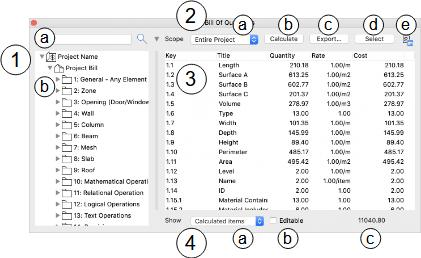
该面板的主要功能如下：
- 整个清单结构的视图。
清单结构会被筛选，仅显示名称中包含此字段内文本的条目名称。
- 整个清单结构的列表。
- 用于控制算量计算范围以及与清单内容交互的控件。第 2e 项会在"清单结构"选项卡中打开工程量管理器。
- 算量后的清单。
- 算量清单的筛选控件。第 4c 项显示总成本。第 4b 项允许手动编辑算量数量 —— 此功能是应某些较窄的用途而提出的，但总体上并不推荐使用。
Scheduled quantities are viewed in the *B**ill of Quantities palette, which can be opened by clicking the menu item CI Tools > Quantities > B**ill of Quantities Palette. The Quantities Info*palette also displays an icon to quickly open palette and automatically schedule the current selection (
).
The key features of the palette are:
- A view of the entire bill structure.
The bill structure is filtered to display only item names containing text in this field.
- A list of the entire bill structure.
- C ontrols for the scope of the schedule calculation and interact ion with the bill content. Item 2e opens the Quantity Take-off Manager at the Bill Structure tab.
- T he scheduled bill.
- Filtering c ontrols for the scheduled bill. Item 4c displays the total cost. Item 4b allows the scheduled quantities to be manually edited – this functionality has been requested for some narrow purposes but is not a generally recommended option .
英文原文对照Official English Original
Scheduled quantities are viewed in the *B**ill of Quantities palette, which can be opened by clicking the menu item CI Tools > Quantities > B**ill of Quantities Palette. The Quantities Info*palette also displays an icon to quickly open palette and automatically schedule the current selection (
).
The key features of the palette are:
- A view of the entire bill structure.
The bill structure is filtered to display only item names containing text in this field.
- A list of the entire bill structure.
- C ontrols for the scope of the schedule calculation and interact ion with the bill content. Item 2e opens the Quantity Take-off Manager at the Bill Structure tab.
- T he scheduled bill.
- Filtering c ontrols for the scheduled bill. Item 4c displays the total cost. Item 4b allows the scheduled quantities to be manually edited – this functionality has been requested for some narrow purposes but is not a generally recommended option .
5.2.1 如何对工程量清单进行算量
5.2.1 How to schedule the bill of quantities
Click the Calculatebutton (item 2b in the illustration) to action the schedule process. Note that this is automatically invoked for the current selection when the palette is activated from the Quantity Info palette (by clicking

).
英文原文对照Official English Original
Click the Calculatebutton (item 2b in the illustration) to action the schedule process. Note that this is automatically invoked for the current selection when the palette is activated from the Quantity Info palette (by clicking
).
5.2.2 如何将清单计算限定到所选构件
5.2.2 How to limit the bill calculation to selected elements
Scope（范围）菜单（示意图中的第 2a 项）决定点击 Calculate 按钮时纳入算量的构件范围：
- Entire Project（整个项目） ：整个项目中的所有构件
- Current Selection（当前选择） ：仅当前选中的构件（来自项目中任意视图的选择）
请注意，在算量表完成计算后，此设置不再生效。要使其生效，请点击 *Calculat**e*。当从 Quantity Info 信息板（通过点击
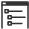
）激活该面板时，此项会自动设为 Current Selection。
TheScope menu (item 2a in the illustration) determines the scope of the elements contributing to the schedule when the Calculate button is clicked:
- Entire Project : All elements in the entire project
- Current Selection : Only currently selected elements (from any view into the project model)
Note that this has no effect after the schedule has been calculated. To effect a change, click *Calculat**e. This is automatically set to Current Selection*when the palette is activated from the Quantity Info palette (by clicking
).
英文原文对照Official English Original
TheScope menu (item 2a in the illustration) determines the scope of the elements contributing to the schedule when the Calculate button is clicked:
- Entire Project : All elements in the entire project
- Current Selection : Only currently selected elements (from any view into the project model)
Note that this has no effect after the schedule has been calculated. To effect a change, click *Calculat**e. This is automatically set to Current Selection*when the palette is activated from the Quantity Info palette (by clicking
).
5.2.3 如何将算量结果筛选到特定清单条目或分类
5.2.3 How to filter the scheduled quantities to specific bill items or categories
面板 3（示意图）中显示的算量数量通常会显示所有清单条目，但可以通过在面板 1 的清单结构中选中条目或分类来筛选。算量结果将筛选为所选清单条目或所选清单分类下的条目。请注意，此功能仅在清单已计算之后才生效 —— —— 在点击 Calculate 之前（before）选中清单条目不会有任何效果。
总成本（面板 4，第 c 项）会自动更新，仅汇总所显示的条目。这对于复核与特定分类相关的成本很有用。
The quantities scheduled in panel 3 (in the illustration) usually displays all bill items, but it can be filtered by selecting items or categories from the bill structure in panel 1. The scheduled quantities will be filtered for selected bill items or items within selected bill categories. Note that this in only operational after the bill has been calculated – selecting bill items before clicking Calculate has no effect.
The total cost (panel 4, item c) automatically updates to sum just the displayed items only. This can be useful for reviewing the costs associated with specific categories.
英文原文对照Official English Original
The quantities scheduled in panel 3 (in the illustration) usually displays all bill items, but it can be filtered by selecting items or categories from the bill structure in panel 1. The scheduled quantities will be filtered for selected bill items or items within selected bill categories. Note that this in only operational after the bill has been calculated – selecting bill items before clicking Calculate has no effect.
The total cost (panel 4, item c) automatically updates to sum just the displayed items only. This can be useful for reviewing the costs associated with specific categories.
5.2.4 如何筛选特定条目的清单
5.2.4 How to filter the bill for specific items
在大型的层级化清单结构中定位条目可能很困难。在第 1a 项（示意图）中输入的任何文本都会筛选清单结构，仅显示名称中包含该文本的条目或分类。只需部分匹配即可，例如输入 conc 可查找名称中包含 *conc**rete* 的任何清单条目。
It can be difficult to locate items in a large, hierarchical bill structure. Any text entered in item 1a (in the illustration) will filter the bill structure to show only items or categories with a name containing that text. Only a partial match is required, e.g. enter conc to find any bill item with *conc**rete*in the name.
英文原文对照Official English Original
It can be difficult to locate items in a large, hierarchical bill structure. Any text entered in item 1a (in the illustration) will filter the bill structure to show only items or categories with a name containing that text. Only a partial match is required, e.g. enter conc to find any bill item with *conc**rete*in the name.
5.2.5 如何导出带计算数量的清单
5.2.5 How to export the bill with calculated quantities
点击 Export（导出）按钮（示意图中的第 2c 项）。将显示一个标准文件浏览对话框，提示输入导出算量表的名称、类型和位置。支持两种文件类型：
*Q**uantities* Quantities 插件的原生 BoQ 文件格式。该格式最为全面可靠，因此在大多数情况下强烈推荐使用。其内容为 XML，若有人希望读取该格式，可以提供相应的 schema，但内容本身相当直观。
CSV 标准 CSV，非常适合与电子表格和某些数据库进行互操作。以逗号分隔导出，所有数据均以引号包裹，第一行包含以下列名：
| Key | 条目/分类的键（不含祖先分类的键） |
|---|---|
| Reference | 可选的外部引用 ID |
| Title | 条目/分类名称 |
| Description | 条目/分类描述 |
| Quantity | 算量条目的数量 |
| Rate | 条目的单价 |
| Unit | 单位名称 |
| Cost | 算量条目的成本（数量 x 单价） |
Click the Exportbutton (item 2c in the illustration). A standard file navigation dialog will be displayed prompting for the name, type and location of the export schedule. Two file types are supported:
*Q**uants* The native BoQ file format for the Quantities add-on. This format is the most comprehensive and reliable, and is therefore strongly recommended in most circumstances. The content is XML, and a schema is available on request to anyone wishing to read this format, but the content is reasonably self-evident.
CSV Standard CSV, well-suited for interoperability with spreadsheets and some databases. Exported as comma-delimited, all data is enclosed in speech marks and the first row contains the following column names:
| Key | The item/category key (excluding keys of ancestor categories) |
|---|---|
| Reference | An optional external reference ID |
| Title | The item/category name |
| Description | The item/category description |
| Quantity | The scheduled item quantity |
| Rate | The item unit rate |
| Unit | The unit name |
| Cost | The scheduled item cost (quantity x rate) |
英文原文对照Official English Original
Click the Exportbutton (item 2c in the illustration). A standard file navigation dialog will be displayed prompting for the name, type and location of the export schedule. Two file types are supported:
*Q**uants* The native BoQ file format for the Quantities add-on. This format is the most comprehensive and reliable, and is therefore strongly recommended in most circumstances. The content is XML, and a schema is available on request to anyone wishing to read this format, but the content is reasonably self-evident.
CSV Standard CSV, well-suited for interoperability with spreadsheets and some databases. Exported as comma-delimited, all data is enclosed in speech marks and the first row contains the following column names:
| Key | The item/category key (excluding keys of ancestor categories) |
|---|---|
| Reference | An optional external reference ID |
| Title | The item/category name |
| Description | The item/category description |
| Quantity | The scheduled item quantity |
| Rate | The item unit rate |
| Unit | The unit name |
| Cost | The scheduled item cost (quantity x rate) |
5.2.6 如何追溯计算数量的来源
5.2.6 How to discover where calculated quantities came from
这是 Quantities 的一项强大功能，使其有别于外部算量工具。虽然算量结果显示在 ARCHICAD 中，但所有数量都与做出贡献的构件相连。
- 对成本有贡献的构件可以在模型中实时交互式查看，包括其在 Quantities 信息板（第 2.2 节）中所分配的属性、分类和配方。这可以快速解释异常成本模式（意外偏低或偏高）的原因，并高亮显示模型或构件属性中不一致之处。
- Quantities 可以区分完全未使用的清单条目与被计算命中但结果仍为零的清单条目。这两种情况都提示存在错误，但原因各不相同。更多信息请参见第 5.2.7 节。
要使用此功能，请在面板 3 中选中任意数量的算量条目，然后点击 Select（示意图中的第 2d 项）。Quantities 将在当前视图中选中并缩放到所有为所选清单条目成本做出贡献的构件。如果某些条目当前处于隐藏状态，其所在图层将被设为可见。
请注意，可能无法在当前视图中看到所有条目，例如当平面图处于激活状态而条目跨越多个楼层时。最佳选择通常是三维窗口，其中除填充图案外的一切均可见。最初计算算量时所依据的视图对此过程没有影响，即您可以从一个视图进行计算，然后在任意其他视图中点击 Select。
This is a powerful feature of Quantities that sets it apart from external scheduling tools. While the schedule is displayed in ARCHICAD, all the quantities are connected to the contributing elements.
- T he elements contributing the cost can be interactively inspected live in the model, including their assigned properties, classifications and recipes in the Quantities Info palette (section 2.2). This can quickly explain the reasons for unusual cost patterns (unexpectedly low or high) and highlight inconsistencies in the model or element properties.
- It is possible for Quantities to differentiate between bill items that weren’t used at all vs those that were targeted by a calculation and still yielded a zero result. Both situations suggest an error, but for different reasons. See section 5.2.7 for additional information.
To use this feature, select any number of scheduled items in panel 3 and click Select(item 2d in the illustration). Quantitieswill select and zoom to all elements that contributed to the cost of the selected bill items in the current view. If some items are currently hidden, their layer(s) will be made visible.
Note that it may not be possible to see all items in the current view, e.g. when the floor plan is active and the items range across multiple storeys. The best option is usually the 3D window, where all but fill patterns are visible. The view the schedule was originally calculated from has no bearing on this process, i.e. you can calculate from one view and click Select in any other view.
英文原文对照Official English Original
This is a powerful feature of Quantities that sets it apart from external scheduling tools. While the schedule is displayed in ARCHICAD, all the quantities are connected to the contributing elements.
- T he elements contributing the cost can be interactively inspected live in the model, including their assigned properties, classifications and recipes in the Quantities Info palette (section 2.2). This can quickly explain the reasons for unusual cost patterns (unexpectedly low or high) and highlight inconsistencies in the model or element properties.
- It is possible for Quantities to differentiate between bill items that weren’t used at all vs those that were targeted by a calculation and still yielded a zero result. Both situations suggest an error, but for different reasons. See section 5.2.7 for additional information.
To use this feature, select any number of scheduled items in panel 3 and click Select(item 2d in the illustration). Quantitieswill select and zoom to all elements that contributed to the cost of the selected bill items in the current view. If some items are currently hidden, their layer(s) will be made visible.
Note that it may not be possible to see all items in the current view, e.g. when the floor plan is active and the items range across multiple storeys. The best option is usually the 3D window, where all but fill patterns are visible. The view the schedule was originally calculated from has no bearing on this process, i.e. you can calculate from one view and click Select in any other view.
5.2.7 如何审计清单条目的正确使用
5.2.7 How to audit correct bill item usage
Quantities提供了多种审计算量结果的方法。Show（显示）菜单（示意图中的第 4a 项）在跟踪清单条目的使用情况方面发挥着关键作用：
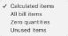
该菜单的选项用于筛选所显示的项目，如下：
- 已计算的条目 仅显示计算后总计不为零的清单条目。
- 全部清单条目 显示所有清单条目
- 零数量 仅显示在算量过程中执行过测量计算但总计仍为零的清单条目
- 未使用的条目 仅显示完全未用于算量的清单条目
使用此菜单和 Quantities 的其他功能，信息板审计流程包括：
- 检查构件一致性
第 5.2.6 节描述了一种将成本追溯到源构件的方法。这种选择技术与其他审计流程配合使用时非常强大，例如使用 Quantities 信息板（第 2.2 节）检查属性不一致情况，以及检查模型中缺失的构件。请留意配方附加关系或属性值上的异常差异 —— 信息板会以蓝色高亮显示不同的取值，使其醒目突出。使用其筛选功能可以隔离出设置异常的构件，或通过搜索扩展到其他应当同样计量的相似构件。
例如，选中与外墙覆面相关的构件可能会发现某些模型墙体被遗漏，而另一些则被错误地包含在内。如果配方规则或测量与属性值相关，信息板可以迅速高亮显示这些不一致之处，并且可以通过同一信息板立即更新。
- 检查清单条目使用情况
未被任何配方引用的清单条目可能意味着疏漏。虽然某些条目对特定项目而言可能无关紧要，但仍应予以检查。将 Show 菜单设为 Unused items 即可快速复核。这些条目还可以通过在左侧清单结构中选中条目或分类进一步筛选（示意图中的第 1b 项）。
- 检查计算结果
某个清单条目在算量结果中总计为零，即使配方已表示存在并且正在对项目构件运行相关规则或数量计算。虽然有可能这些构件确实都不产生成本，但仍建议进行检查。
将 Show 菜单设为 Z e ro quantities（零数量）可查看受影响的条目，并应用上文"检查构件一致性"中所述的技术方法。如果构件本身没有问题，或者配方关联了错误的构件，请使用工程量管理器（Quantity Take-off Manager）的"配方"选项卡（参见第 4.2 节）来复核与受影响清单条目相关联的配方规则和/或计算。
所有审计方法的汇总可见第 6 章。
Quantitiesprovides several methods for auditing scheduled quantities. TheShow menu(item 4a in the illustration) plays a key role in tracking bill item use:
The menu options are used to filter the displayed items as follows:
- Ca lculated items Only bill items with a calculated non-zero total are shown.
- All bill items All bill items are shown
- Zero quantities Only bill items that processed a measurement calculation during the scheduling process but still have a zero total are shown
- Unused items Only bill items not used at all for the schedule are shown
Using this menu and other Quantities features, the palette auditing processes include:
- Checking element consistency
Section 5.2.6 describes a method for tracking costs to the source elements. This selection technique is very powerful in conjunction with other auditing processes, e.g. checking for property inconsistencies using the Quantities Info palette (section 2.2) and checking the model for missing elements. Look for unexpected variations in recipe attachments or property values – the Info palette will highlight different values in blue so they stand out. Use its filtering to isolate elements with unusual settings, or searching to expand to similar elements that should be measured alike.
For example, selecting elements linked to exterior cladding may reveal that some model walls have been omitted and other incorrectly included. If the recipe rules or measurement relate to property values, the Info palette may quickly highlight these inconsistencies and can be immediately updated through the same palette.
- Checking bill item usage
A bill item that isn’t referenced in any recipes suggests a possible oversight. While it’s possible that some items are irrelevant for a given project, it should be checked. Setting the Show menu to Unused items enables a quick review. These items can be further filtered by selecting items or categories in the bill structure to the left (item 1b in the illustration).
- Checking calculation results
A bill item may have a zero total in the schedule despite recipe representation and actively running associated rules or quantity calculations on project elements. While it’s possible that none of these elements contribute to cost, checking is advisable.
Set the Show menu to Z e ro quantities to view affected item and apply the techniques described in Checking element consistency above. If either the elements seem fine or the wrong elements are associated with the recipe, use the Recipe tab of the Quantity Take-off Manager (refer to section 4.2) to review the rules and/or calculations of recipes associated with the affected bill items.
A summary of all auditing methods can be found in chapter 6.
英文原文对照Official English Original
Quantitiesprovides several methods for auditing scheduled quantities. TheShow menu(item 4a in the illustration) plays a key role in tracking bill item use:
The menu options are used to filter the displayed items as follows:
- Ca lculated items Only bill items with a calculated non-zero total are shown.
- All bill items All bill items are shown
- Zero quantities Only bill items that processed a measurement calculation during the scheduling process but still have a zero total are shown
- Unused items Only bill items not used at all for the schedule are shown
Using this menu and other Quantities features, the palette auditing processes include:
- Checking element consistency
Section 5.2.6 describes a method for tracking costs to the source elements. This selection technique is very powerful in conjunction with other auditing processes, e.g. checking for property inconsistencies using the Quantities Info palette (section 2.2) and checking the model for missing elements. Look for unexpected variations in recipe attachments or property values – the Info palette will highlight different values in blue so they stand out. Use its filtering to isolate elements with unusual settings, or searching to expand to similar elements that should be measured alike.
For example, selecting elements linked to exterior cladding may reveal that some model walls have been omitted and other incorrectly included. If the recipe rules or measurement relate to property values, the Info palette may quickly highlight these inconsistencies and can be immediately updated through the same palette.
- Checking bill item usage
A bill item that isn’t referenced in any recipes suggests a possible oversight. While it’s possible that some items are irrelevant for a given project, it should be checked. Setting the Show menu to Unused items enables a quick review. These items can be further filtered by selecting items or categories in the bill structure to the left (item 1b in the illustration).
- Checking calculation results
A bill item may have a zero total in the schedule despite recipe representation and actively running associated rules or quantity calculations on project elements. While it’s possible that none of these elements contribute to cost, checking is advisable.
Set the Show menu to Z e ro quantities to view affected item and apply the techniques described in Checking element consistency above. If either the elements seem fine or the wrong elements are associated with the recipe, use the Recipe tab of the Quantity Take-off Manager (refer to section 4.2) to review the rules and/or calculations of recipes associated with the affected bill items.
A summary of all auditing methods can be found in chapter 6.
6.1 概述
6.1 Overview
在 BIM 项目内交互式地审计算量结果与元数据，是 Quantities 的一项关键功能。审计功能的设计初衷是用于项目开发的各个阶段，而不仅限于在后期形成最终造价估算时才使用，因此它们已融入前几章中所描述的所有工具和流程之中。本章的目的是回顾贯穿项目全生命周期的整体审计流程，并链接到本文档其他位置的详细信息。
The ability to audit scheduling quantities and metadata interactively within the BIM project is a key feature of Quantities. Auditing features are designed to be used at every stage of the project development, not just at latter stages as final cost estimates are produced, and are therefore woven into all the tools and processes already described in the previous chapters. The purpose of this chapter is to review the overall auditing process through the project lifecycle with links to detailed information elsewhere in this document.
英文原文对照Official English Original
The ability to audit scheduling quantities and metadata interactively within the BIM project is a key feature of Quantities. Auditing features are designed to be used at every stage of the project development, not just at latter stages as final cost estimates are produced, and are therefore woven into all the tools and processes already described in the previous chapters. The purpose of this chapter is to review the overall auditing process through the project lifecycle with links to detailed information elsewhere in this document.
6.2 审计构件数据
6.2 Auditing Element Data
第 2.2 节所述的 Quantities 信息板（Info palette）是随着 BIM 项目开发而管理和复核构件特征标记（配方、分类和属性）的重要工具。应用于构件特征标记 —— 尤其是属性值 —— 的颜色和样式有助于暴露不一致之处或遗漏。
The Quantities Info palette described in section 2.2 is an important tool for managing and reviewing element traits (recipes, classifications and properties) as the BIM project is developed. The colours and styles applied to element traits – and property values in particular – help to expose inconsistencies or omissions.
英文原文对照Official English Original
The Quantities Info palette described in section 2.2 is an important tool for managing and reviewing element traits (recipes, classifications and properties) as the BIM project is developed. The colours and styles applied to element traits – and property values in particular – help to expose inconsistencies or omissions.
6.3 审计配方完成情况
6.3 Auditing Recipe Completion
工程量管理器（Quantity Take-offs Manager）的"配方"选项卡中显示的清单结构（第 4.2 节）可以筛选为仅显示未链接到任何配方的清单条目，从而确保重要的成本条目不会从测量计算中被遗漏。
The bill structure displayed in the Recipe tab of the Quantity Take-offs Manager (section 4.2) can be filtered to display only bill items that have not been linked to any recipes, ensuring that essential cost items are not omitted from measurement calculations.
英文原文对照Official English Original
The bill structure displayed in the Recipe tab of the Quantity Take-offs Manager (section 4.2) can be filtered to display only bill items that have not been linked to any recipes, ensuring that essential cost items are not omitted from measurement calculations.
6.4 审计未计量的构件
6.4 Auditing Unmeasured Elements
如果项目要完成完整造价，可以认为模型中的大多数建筑构件都会对总量有所贡献。因此，Quantities 提供了一个工具来高亮显示这些构件以便检查。
选择一个适合复核 BIM 项目的视图。三维窗口通常最合适，因为可以选择所有构件（大多数其他视图只显示子集，例如平面图中的某一层）。点击菜单项 CI Tools > Quantities > Select Unquantified Elements…（选择未计量构件）
在当前视图中，所有不会被任何配方（手动或自动）计量的构件都将被选中。
If project is to be fully costed, it can be assumed that the majority of building elements in the model will contribute to the total. Therefore, Quantities provides a tool to highlight these elements for checking.
Pick a suitable view for reviewing the BIM project. The 3D window is typically the most suitable because all elements can be selected (most other views only display a sub-selection, e.g. one storey in the floor plan). Click the menu item CI Tools > Quantities > Select Unquantified Elements…
All elements that will not be measured by a recipe (manual or automatic) will be selected in the current view.
英文原文对照Official English Original
If project is to be fully costed, it can be assumed that the majority of building elements in the model will contribute to the total. Therefore, Quantities provides a tool to highlight these elements for checking.
Pick a suitable view for reviewing the BIM project. The 3D window is typically the most suitable because all elements can be selected (most other views only display a sub-selection, e.g. one storey in the floor plan). Click the menu item CI Tools > Quantities > Select Unquantified Elements…
All elements that will not be measured by a recipe (manual or automatic) will be selected in the current view.
6.5 审计工程量清单
6.5 Auditing the Bill of Quantities
在算量排程的最终环节，可以应用一系列检查。
第 5.2.6 节描述了如何利用计算数量与源构件之间的关联来复核最终数值的得出过程。针对 BIM 构件的审计流程（第 6.2 节）同样适用于查看调用了哪些配方以及它们作用于哪些数据，从而可能发现错误或遗漏。
第 5.2.7 节列出了一系列清单条目检查和配方测量检查，以确保：
• BIM 构件特征标记保持一致；
• 清单条目使用恰当；
• 数量计算已成功完成测量。
A series of checks can be applied at the final point of scheduling the quantities.
Section 5.2.6 describes how the connection between calculated quantities and the source elements can be used to review how the final figures were obtained. The auditing processes for BIM elements (section 6.2) is again applicable for reviewing which recipes were invoked and what data they acted on, potentially highlighting errors or omissions.
Section 5.2.7 lists a series of bill item checks and recipe measurement checks that ensure:
• BIM element traits are consistent;
• Bill items are used appropriately;
• Quantity calculations have successfully taken measurements.
英文原文对照Official English Original
A series of checks can be applied at the final point of scheduling the quantities.
Section 5.2.6 describes how the connection between calculated quantities and the source elements can be used to review how the final figures were obtained. The auditing processes for BIM elements (section 6.2) is again applicable for reviewing which recipes were invoked and what data they acted on, potentially highlighting errors or omissions.
Section 5.2.7 lists a series of bill item checks and recipe measurement checks that ensure:
• BIM element traits are consistent;
• Bill items are used appropriately;
• Quantity calculations have successfully taken measurements.
7.1 概述
7.1 Overview
本章为每一个用于访问 ARCHICAD 构件数据的 Quantities 表达式提供参考说明，并按需描述常见用法、注意事项、示例以及指向其他文档的链接。
第 4.4 节"计算测量值"和第 4.7 节"测量问题"提供了有用的背景信息、上下文和示例，最好先阅读它们。随后的第 8 章"计算函数"和第 9 章"计算运算符"说明了如何在计算中操作和组合这些数据。
This chapter provides a reference for every Quantities expression that provides access to data from ARCHICAD elements, describing common usage, provisos, illustrations and links back to other documentation as appropriate.
Sections 4.4, Calculated Measurements, and 4.7, Measurement Questions provide useful background information, context and examples that should ideally be read first. Following sections 8, Calculation Functions, and 9, Calculation Operators show how these data can be manipulated and combined in calculations.
英文原文对照Official English Original
This chapter provides a reference for every Quantities expression that provides access to data from ARCHICAD elements, describing common usage, provisos, illustrations and links back to other documentation as appropriate.
Sections 4.4, Calculated Measurements, and 4.7, Measurement Questions provide useful background information, context and examples that should ideally be read first. Following sections 8, Calculation Functions, and 9, Calculation Operators show how these data can be manipulated and combined in calculations.
7.10 区域属性
7.10 Zone Attributes
提取区域构件属性的表达式。这些表达式必须以 *z**one 为前缀，例如 zone.c**ategory*
| category | 区域分类的名称 | |
|---|---|---|
| name | 区域名称 | |
| number | 区域编号 |
Expressions that extract attributes from a zone element. These must be prefixed with *z**one, e.g. zone.c**ategory*
| category | The name of the zone category | |
|---|---|---|
| name | The zone name | |
| number | The zone number |
英文原文对照Official English Original
Expressions that extract attributes from a zone element. These must be prefixed with *z**one, e.g. zone.c**ategory*
| category | The name of the zone category | |
|---|---|---|
| name | The zone name | |
| number | The zone number |
7.11 墙体几何
7.11 Wall Geometry
提取墙体特有几何的表达式。这些表达式必须以 wall 为前缀，例如 *w**all.thickness*
| thickness | 墙体总厚度 | |
|---|---|---|
| surfaceOutside | 墙体外部净表面积 | |
| surfaceInside | 墙体内部净表面积 | |
| surfaceEdge | 墙体边缘的总表面积 | |
| surfaceOutsideGross | 墙体外部总（毛）表面积 | |
| surfaceInsideGross | 墙体内部总（毛）表面积 | |
| lengthOutside | 沿墙体外部的长度 | |
| lengthInside | 沿墙体内部的长度 | |
| lengthCentre | 沿墙体中心线的长度 | |
| doorCount | 墙体上门门的数量 | |
| doorSurface | 墙体上所有门的总表面积 | |
| doorWidth | 墙体上所有门的总宽度 | |
| windowCount | 墙体上窗户的数量 | |
| windowSurface | 墙体上所有窗户的总表面积 | |
| windowWidth | 墙体上所有窗户的总宽度 | |
| sweep | 弧形墙所转过的扫掠角 —— 直墙为零 | |
| radius | 弧形墙的半径 —— 直墙为零 | |
| slantInside | 墙体的内侧倾斜角（垂直时为 0） | |
| slantOutside | 墙体的外侧倾斜角（垂直时为 0） | |
| slantAngle | 墙体的内侧或外侧倾斜角（取非垂直的那一侧，按此顺序）。若两侧均垂直则为零 |
Expressions that extract geometry unique to walls. These must be prefixed with wall, e.g. *w**all.thickness*
| thickness | The total wall thickness | |
|---|---|---|
| surfaceOutside | The wall net exterior surface area | |
| surfaceInside | The wall net interior surface area | |
| surfaceEdge | The total wall edges surface area | |
| surfaceOutsideGross | The wall gross exterior surface area | |
| surfaceInsideGross | The wall gross interior surface area | |
| lengthOutside | The length along the wall exterior | |
| lengthInside | The length along the wall interior | |
| lengthCentre | The length along the wall centreline | |
| doorCount | The number of doors in the wall | |
| doorSurface | The total surface area of doors in the wall | |
| doorWidth | The total width of doors in the wall | |
| windowCount | The number of windows in the wall | |
| windowSurface | The total surface area of windows in the wall | |
| windowWidth | The total width of windows in the wall | |
| sweep | The sweep angle a curved wall turns through – zero for straight walls | |
| radius | The radius of a curved wall – zero for straight walls | |
| slantInside | The interior slant angle of the wall (0 for vertical) | |
| slantOutside | The exterior slant angle of the wall (0 for vertical) | |
| slantAngle | Either the interior or exterior slant angle of the wall (whichever is non-vertical, in that order). Zero if both sides are vertical |
英文原文对照Official English Original
Expressions that extract geometry unique to walls. These must be prefixed with wall, e.g. *w**all.thickness*
| thickness | The total wall thickness | |
|---|---|---|
| surfaceOutside | The wall net exterior surface area | |
| surfaceInside | The wall net interior surface area | |
| surfaceEdge | The total wall edges surface area | |
| surfaceOutsideGross | The wall gross exterior surface area | |
| surfaceInsideGross | The wall gross interior surface area | |
| lengthOutside | The length along the wall exterior | |
| lengthInside | The length along the wall interior | |
| lengthCentre | The length along the wall centreline | |
| doorCount | The number of doors in the wall | |
| doorSurface | The total surface area of doors in the wall | |
| doorWidth | The total width of doors in the wall | |
| windowCount | The number of windows in the wall | |
| windowSurface | The total surface area of windows in the wall | |
| windowWidth | The total width of windows in the wall | |
| sweep | The sweep angle a curved wall turns through – zero for straight walls | |
| radius | The radius of a curved wall – zero for straight walls | |
| slantInside | The interior slant angle of the wall (0 for vertical) | |
| slantOutside | The exterior slant angle of the wall (0 for vertical) | |
| slantAngle | Either the interior or exterior slant angle of the wall (whichever is non-vertical, in that order). Zero if both sides are vertical |
7.12 墙体属性
7.12 Wall Attributes
提取墙体特有属性的表达式。这些表达式必须以 wall 为前缀，例如 *w**all.shape*
| shape | 墙体形状类型（平面内）：规则（平行边）："Regular" 梯形："Trapezoid" 多边形："Polygon" | |
|---|---|---|
| finishOutside | 墙体外部饰面的名称 | |
| finishInside | 墙体内部饰面的名称 |
Expressions that extract attributes unique to walls. These must be prefixed with wall, e.g. *w**all.shape*
| shape | The wall shape type (in plan): Regular (parallel sides): “Regular” Trapezoid: “Trapezoid” Polygon: “Polygon” | |
|---|---|---|
| finishOutside | The name of the exterior wall finish | |
| finishInside | The name of the interior wall finish |
英文原文对照Official English Original
Expressions that extract attributes unique to walls. These must be prefixed with wall, e.g. *w**all.shape*
| shape | The wall shape type (in plan): Regular (parallel sides): “Regular” Trapezoid: “Trapezoid” Polygon: “Polygon” | |
|---|---|---|
| finishOutside | The name of the exterior wall finish | |
| finishInside | The name of the interior wall finish |
7.13 洞口几何
7.13 Opening Geometry
提取任何洞口构件（door、window、skylight、opening）特有几何的表达式。这些表达式必须以其中一种类型的名称为前缀，例如 *door.**surfaceReveal*
| surfaceReveal | 侧壁（洞口内表面）的总表面积 | |
|---|---|---|
| widthReveal | 洞口的侧壁宽度 | |
| depthReveal | 洞口的侧壁深度 |
Expressions that extract geometry unique to any opening element, e.g. door, window, skylight, opening. These must be prefixed with the name of one of these types, e.g. *door.**surfaceReveal*
| surfaceReveal | The total reveal surface area | |
|---|---|---|
| widthReveal | The opening reveal width | |
| depthReveal | The opening reveal depth |
英文原文对照Official English Original
Expressions that extract geometry unique to any opening element, e.g. door, window, skylight, opening. These must be prefixed with the name of one of these types, e.g. *door.**surfaceReveal*
| surfaceReveal | The total reveal surface area | |
|---|---|---|
| widthReveal | The opening reveal width | |
| depthReveal | The opening reveal depth |
7.14 柱段几何
7.14 Column Segment Geometry
提取柱段特有几何的表达式。这些表达式必须以 *c**olumn 为前缀，例如 column.s**urfaceTop*
| surfaceCore | 柱的净截面（核心）表面积 | |
|---|---|---|
| surfaceGross | 柱的总（毛）表面积 | |
| surfaceVen | 柱的净饰面表面积 | |
| surfaceVenGross | 柱的总（毛）饰面表面积 | |
| surfaceTop | 柱顶的表面积 | |
| surfaceBase | 柱底的表面积 | |
| volumeCore | 柱的芯体体积 | |
| volumeVen | 柱的饰面体积 | |
| diameter | 柱的直径（对于圆柱，其他类型均为零） | |
| thickness | 柱的饰面厚度 |
Expressions that extract geometry unique to column segments. These must be prefixed with *c**olumn, e.g. column.s**urfaceTop*
| surfaceCore | The column net core surface area | |
|---|---|---|
| surfaceGross | The column gross surface area | |
| surfaceVen | The column net veneer surface area | |
| surfaceVenGross | The column gross veneer surface area | |
| surfaceTop | The column top surface area | |
| surfaceBase | The column base surface area | |
| volumeCore | The column core volume | |
| volumeVen | The column veneer volume | |
| diameter | The column diameter (for round columns, zero for all others) | |
| thickness | The column veneer thickness |
英文原文对照Official English Original
Expressions that extract geometry unique to column segments. These must be prefixed with *c**olumn, e.g. column.s**urfaceTop*
| surfaceCore | The column net core surface area | |
|---|---|---|
| surfaceGross | The column gross surface area | |
| surfaceVen | The column net veneer surface area | |
| surfaceVenGross | The column gross veneer surface area | |
| surfaceTop | The column top surface area | |
| surfaceBase | The column base surface area | |
| volumeCore | The column core volume | |
| volumeVen | The column veneer volume | |
| diameter | The column diameter (for round columns, zero for all others) | |
| thickness | The column veneer thickness |
7.15 柱段属性
7.15 Column Segment Attributes
提取柱段特有属性的表达式。这些表达式必须以 *c**olumn 为前缀，例如 column.m**aterialVen*
| finishEnd | 梁段端部的饰面 注意：柱段侧面的饰面可用 *element.finish* 获取 | |
|---|---|---|
| materialVen | 柱段的饰面材质 注意：柱段的芯体材质可用 *element.material* 获取 |
Expressions that extract attributes unique to column segments. These must be prefixed with *c**olumn, e.g. column.m**aterialVen*
| finishEnd | The finish to the beam segment ends Note: The finish to the column segment sides can be retrieved with *element.finish* | |
|---|---|---|
| materialVen | The column segment veneer materialNote: The column segment core material can be retrieved with *element.material* |
英文原文对照Official English Original
Expressions that extract attributes unique to column segments. These must be prefixed with *c**olumn, e.g. column.m**aterialVen*
| finishEnd | The finish to the beam segment ends Note: The finish to the column segment sides can be retrieved with *element.finish* | |
|---|---|---|
| materialVen | The column segment veneer materialNote: The column segment core material can be retrieved with *element.material* |
7.16 柱组件几何
7.16 Column Assembly Geometry
提取柱组件特有几何的表达式。这些表达式必须以 columnAssembly 为前缀，例如 columnAssembly.surfaceGross
| surfaceCore | 柱的净截面（核心）表面积 | |
|---|---|---|
| surfaceGross | 柱的总（毛）表面积 | |
| surfaceVen | 柱的净饰面表面积 | |
| surfaceVenGross | 柱的总（毛）饰面表面积 | |
| surfaceTop | 柱顶的表面积 | |
| surfaceBase | 柱底的表面积 | |
| volumeCore | 柱的芯体体积 | |
| volumeVen | 柱的饰面体积 |
Expressions that extract geometry unique to column assemblies. These must be prefixed with columnAssembly, e.g. columnAssembly.surfaceGross
| surfaceCore | The column net core surface area | |
|---|---|---|
| surfaceGross | The column gross surface area | |
| surfaceVen | The column net veneer surface area | |
| surfaceVenGross | The column gross veneer surface area | |
| surfaceTop | The column top surface area | |
| surfaceBase | The column base surface area | |
| volumeCore | The column core volume | |
| volumeVen | The column veneer volume |
英文原文对照Official English Original
Expressions that extract geometry unique to column assemblies. These must be prefixed with columnAssembly, e.g. columnAssembly.surfaceGross
| surfaceCore | The column net core surface area | |
|---|---|---|
| surfaceGross | The column gross surface area | |
| surfaceVen | The column net veneer surface area | |
| surfaceVenGross | The column gross veneer surface area | |
| surfaceTop | The column top surface area | |
| surfaceBase | The column base surface area | |
| volumeCore | The column core volume | |
| volumeVen | The column veneer volume |
7.17 梁段几何
7.17 Beam Segment Geometry
提取梁段特有几何的表达式。这些表达式必须以 *b**eam 为前缀，例如 beam.s**urfaceTop*
| lengthLeft | 梁左侧的长度 | |
|---|---|---|
| lengthRight | 梁右侧的长度 | |
| surfaceLeft | 梁左侧的表面积 | |
| surfaceRight | 梁右侧的表面积 | |
| surfaceBase | 梁底部的表面积 | |
| surfaceTop | 梁顶部的表面积 |
Expressions that extract geometry unique to beam segments. These must be prefixed with *b**eam, e.g. beam.s**urfaceTop*
| lengthLeft | The beam length on the left side | |
|---|---|---|
| lengthRight | The beam length on the right side | |
| surfaceLeft | The surface area on the beam left | |
| surfaceRight | The surface area on the beam right | |
| surfaceBase | The surface area on the beam base | |
| surfaceTop | The surface area on the beam top |
英文原文对照Official English Original
Expressions that extract geometry unique to beam segments. These must be prefixed with *b**eam, e.g. beam.s**urfaceTop*
| lengthLeft | The beam length on the left side | |
|---|---|---|
| lengthRight | The beam length on the right side | |
| surfaceLeft | The surface area on the beam left | |
| surfaceRight | The surface area on the beam right | |
| surfaceBase | The surface area on the beam base | |
| surfaceTop | The surface area on the beam top |
7.18 梁段属性
7.18 Beam Segment Attributes
提取梁段特有属性的表达式。这些表达式必须以 beam 为前缀，例如 beam.finishTop
| finishTop | 梁段顶部的饰面 | |
|---|---|---|
| finishBase | 梁段顶部的饰面 | |
| finishLeft | 梁段顶部的饰面 | |
| finishRight | 梁段顶部的饰面 | |
| finishEnd | 梁段端部的饰面 |
Expressions that extract attributes unique to beam segments. These must be prefixed with beam, e.g. beam.finishTop
| finishTop | The finish to the beam segment top | |
|---|---|---|
| finishBase | The finish to the beam segment top | |
| finishLeft | The finish to the beam segment top | |
| finishRight | The finish to the beam segment top | |
| finishEnd | The finish to the beam segment ends |
英文原文对照Official English Original
Expressions that extract attributes unique to beam segments. These must be prefixed with beam, e.g. beam.finishTop
| finishTop | The finish to the beam segment top | |
|---|---|---|
| finishBase | The finish to the beam segment top | |
| finishLeft | The finish to the beam segment top | |
| finishRight | The finish to the beam segment top | |
| finishEnd | The finish to the beam segment ends |
7.19 梁组件几何
7.19 Beam Assembly Geometry
提取梁组件特有几何的表达式。这些表达式必须以 beamAssembly 为前缀，例如 beamAssembly.surfaceTop
| lengthLeft | 梁左侧的长度 | |
|---|---|---|
| lengthRight | 梁右侧的长度 | |
| surfaceLeft | 梁左侧的表面积 | |
| surfaceRight | 梁右侧的表面积 | |
| surfaceBase | 梁底部的表面积 | |
| surfaceTop | 梁顶部的表面积 |
Expressions that extract geometry unique to beam assemblies. These must be prefixed with beamAssembly, e.g. beamAssembly.surfaceTop
| lengthLeft | The beam length on the left side | |
|---|---|---|
| lengthRight | The beam length on the right side | |
| surfaceLeft | The surface area on the beam left | |
| surfaceRight | The surface area on the beam right | |
| surfaceBase | The surface area on the beam base | |
| surfaceTop | The surface area on the beam top |
英文原文对照Official English Original
Expressions that extract geometry unique to beam assemblies. These must be prefixed with beamAssembly, e.g. beamAssembly.surfaceTop
| lengthLeft | The beam length on the left side | |
|---|---|---|
| lengthRight | The beam length on the right side | |
| surfaceLeft | The surface area on the beam left | |
| surfaceRight | The surface area on the beam right | |
| surfaceBase | The surface area on the beam base | |
| surfaceTop | The surface area on the beam top |
7.2 构件几何
7.2 Element Geometry
可应用于任何 BIM 构件以获取包围尺寸等通用测量值的表达式。
这些表达式通常以 element 为前缀，例如 element.length，以便使该测量适用于任何构件类型，但也可以使用任何特定的构件类型，例如 wall.length，如果该测量仅对某种类型是必需的。将测量限定为单一构件类型不会导致错误 —— 计算结果只是对其他类型无效。
关于在计算中使用构件几何的更多细节，另请参见 4.4.4 节。
| level | 构件的基准标高（相对项目零点） | |
|---|---|---|
| width | 构件宽度，通常为包围盒的宽度。梁和柱返回其截面宽度 | |
| depth | 构件深度，通常为包围盒的深度。梁和柱返回其截面宽度 | |
| height | 构件高度，通常为包围盒的高度 | |
| heightMin | 通常与 height 相同。例外情况是墙体和柱，当其底/顶为斜面时返回最小的高度差值 | |
| heightMax | 通常与 height 相同。例外情况是墙体和柱，当其底/顶为斜面时返回最大的高度差值 | |
| length | 构件长度，其解释方式因类型而异。通用响应与 *width* 相同。对于梁和墙体等线性构件，它返回沿构件路径的实际长度。柱返回高度，楼板返回周长长度。 | |
| volume | 构件的净体积 | |
| volumeGross | 构件的总（毛）体积，即忽略开洞或其他体积扣减 | |
| area | 构件包围多边形的净面积 | |
| perimeter | 构件包围多边形的周长 | |
| holeCount | 构件体量中孔洞的数量 | |
| holeSurface | 构件体量中孔洞的总表面积 | |
| holeVolume | 构件体量中孔洞的总体积 | |
| surface | 构件的总表面积 | |
| surfaceA | 按 GRAPHISOFT 的算量惯例计算的构件表面积 | |
| surfaceB | 按 GRAPHISOFT 的算量惯例计算的构件表面积 | |
| surfaceC | 按 GRAPHISOFT 的算量惯例计算的构件表面积 |
Expressions that can be applied to any BIM element to retrieve generic measurements like bounding size.
These will typically be prefixed with element, e.g. element.length, in order to make the measurement applicable to any element type, but any specific element type can be used, e.g. wall.length, if the measurement is only required for that type. Restricting the measurement to a single element type does not cause an error – the result of the calculation is simply voided for any other types.
Also refer to section 4.4.4 for more detail about using element geometry in calculations.
| level | The base level of the element (from project zero) | |
|---|---|---|
| width | The element width, typically of the bounding box. Beams and columns return their profile width | |
| depth | The element depth, typically of the bounding box. Beams and columns return their profile width | |
| height | The element height, typically of the bounding box | |
| heightMin | Generally the same as height. The exceptions are walls and columns, which will respond with the least height differential when they have a sloped base/top | |
| heightMax | Generally the same as height. The exceptions are walls and columns, which will respond with the greatest height differential when they have a sloped base/top | |
| length | The element length, interpreted differently according to type. The generic response is the same as *width*. For linear elements like beams and walls, it returns literally the length along the element path. Columns return height, and slabs return the perimeter length. | |
| volume | The net volume of the element | |
| volumeGross | The gross volume of the element, i.e. ignoring penetrations or other volume subtractions | |
| area | The net area of the element’s bounding polygon | |
| perimeter | The perimeter of the element’s bounding polygon | |
| holeCount | The number of holes in the element’s body | |
| holeSurface | The total surface area of holes in the element’s body | |
| holeVolume | The total volume of holes in the element’s body | |
| surface | The total surface area of the element | |
| surfaceA | Surface area of the element following GRAPHISOFT’s conventions for scheduling | |
| surfaceB | Surface area of the element following GRAPHISOFT’s conventions for scheduling | |
| surfaceC | Surface area of the element following GRAPHISOFT’s conventions for scheduling |
英文原文对照Official English Original
Expressions that can be applied to any BIM element to retrieve generic measurements like bounding size.
These will typically be prefixed with element, e.g. element.length, in order to make the measurement applicable to any element type, but any specific element type can be used, e.g. wall.length, if the measurement is only required for that type. Restricting the measurement to a single element type does not cause an error – the result of the calculation is simply voided for any other types.
Also refer to section 4.4.4 for more detail about using element geometry in calculations.
| level | The base level of the element (from project zero) | |
|---|---|---|
| width | The element width, typically of the bounding box. Beams and columns return their profile width | |
| depth | The element depth, typically of the bounding box. Beams and columns return their profile width | |
| height | The element height, typically of the bounding box | |
| heightMin | Generally the same as height. The exceptions are walls and columns, which will respond with the least height differential when they have a sloped base/top | |
| heightMax | Generally the same as height. The exceptions are walls and columns, which will respond with the greatest height differential when they have a sloped base/top | |
| length | The element length, interpreted differently according to type. The generic response is the same as *width*. For linear elements like beams and walls, it returns literally the length along the element path. Columns return height, and slabs return the perimeter length. | |
| volume | The net volume of the element | |
| volumeGross | The gross volume of the element, i.e. ignoring penetrations or other volume subtractions | |
| area | The net area of the element’s bounding polygon | |
| perimeter | The perimeter of the element’s bounding polygon | |
| holeCount | The number of holes in the element’s body | |
| holeSurface | The total surface area of holes in the element’s body | |
| holeVolume | The total volume of holes in the element’s body | |
| surface | The total surface area of the element | |
| surfaceA | Surface area of the element following GRAPHISOFT’s conventions for scheduling | |
| surfaceB | Surface area of the element following GRAPHISOFT’s conventions for scheduling | |
| surfaceC | Surface area of the element following GRAPHISOFT’s conventions for scheduling |
7.20 网面几何
7.20 Mesh Geometry
提取网面构件特有几何的表达式。这些表达式必须以 *m**esh 为前缀，例如 mesh.s**urfaceTop*
| surfaceEdge | 网面边缘的总表面积 | |
|---|---|---|
| surfaceBase | 网面底部的表面积 | |
| surfaceTop | 网面顶部的表面积 |
Expressions that extract geometry unique to mesh elements. These must be prefixed with *m**esh, e.g. mesh.s**urfaceTop*
| surfaceEdge | The total surface area on the mesh edges | |
|---|---|---|
| surfaceBase | The surface area on the mesh base | |
| surfaceTop | The surface area on the mesh top |
英文原文对照Official English Original
Expressions that extract geometry unique to mesh elements. These must be prefixed with *m**esh, e.g. mesh.s**urfaceTop*
| surfaceEdge | The total surface area on the mesh edges | |
|---|---|---|
| surfaceBase | The surface area on the mesh base | |
| surfaceTop | The surface area on the mesh top |
7.21 网面属性
7.21 Mesh Attributes
提取网面构件特有属性的表达式。这些表达式必须以 *m**esh 为前缀，例如 mesh.**finishTop*
| finishEdge | 网面边缘的饰面 | |
|---|---|---|
| finishBase | 网面底部的饰面 | |
| finishTop | 网面顶部的饰面 |
Expressions that extract attributes unique to mesh elements. These must be prefixed with *m**esh, e.g. mesh.**finishTop*
| finishEdge | The finish to the mesh edges | |
|---|---|---|
| finishBase | The finish to the mesh base | |
| finishTop | The finish to the mesh top |
英文原文对照Official English Original
Expressions that extract attributes unique to mesh elements. These must be prefixed with *m**esh, e.g. mesh.**finishTop*
| finishEdge | The finish to the mesh edges | |
|---|---|---|
| finishBase | The finish to the mesh base | |
| finishTop | The finish to the mesh top |
7.22 楼板几何
7.22 Slab Geometry
提取楼板构件特有几何的表达式。这些表达式必须以 *s**lab 为前缀，例如 slab.**thickness*
| thickness | 楼板厚度 | |
|---|---|---|
| surfaceEdge | 楼板边缘的总表面积 | |
| surfaceBase | 楼板底部的表面积 | |
| surfaceTop | 楼板顶部的表面积 | |
| surfaceEdgeGross | 楼板边缘的总（毛）表面积 | |
| surfaceBaseGross | 楼板底部的总（毛）表面积 | |
| surfaceTopGross | 楼板顶部的总（毛）表面积 |
Expressions that extract geometry unique to slab elements. These must be prefixed with *s**lab, e.g. slab.**thickness*
| thickness | The slab thickness | |
|---|---|---|
| surfaceEdge | The total surface area on the slab edges | |
| surfaceBase | The surface area on the slab base | |
| surfaceTop | The surface area on the slab top | |
| surfaceEdgeGross | The gross surface area on the slab edges | |
| surfaceBaseGross | The gross surface area on the slab base | |
| surfaceTopGross | The gross surface area on the slab top |
英文原文对照Official English Original
Expressions that extract geometry unique to slab elements. These must be prefixed with *s**lab, e.g. slab.**thickness*
| thickness | The slab thickness | |
|---|---|---|
| surfaceEdge | The total surface area on the slab edges | |
| surfaceBase | The surface area on the slab base | |
| surfaceTop | The surface area on the slab top | |
| surfaceEdgeGross | The gross surface area on the slab edges | |
| surfaceBaseGross | The gross surface area on the slab base | |
| surfaceTopGross | The gross surface area on the slab top |
7.23 楼板属性
7.23 Slab Attributes
提取楼板构件特有属性的表达式。这些表达式必须以 slab 为前缀，例如 slab.finishTop
| finishEdge | 楼板边缘的饰面 | |
|---|---|---|
| finishBase | 楼板底部的饰面 | |
| finishTop | 楼板顶部的饰面 |
Expressions that extract attributes unique to slab elements. These must be prefixed with slab, e.g. slab.finishTop
| finishEdge | The finish to the slab edges | |
|---|---|---|
| finishBase | The finish to the slab base | |
| finishTop | The finish to the slab top |
英文原文对照Official English Original
Expressions that extract attributes unique to slab elements. These must be prefixed with slab, e.g. slab.finishTop
| finishEdge | The finish to the slab edges | |
|---|---|---|
| finishBase | The finish to the slab base | |
| finishTop | The finish to the slab top |
7.24 屋顶几何
7.24 Roof Geometry
提取屋顶构件特有几何的表达式。这些表达式必须以 roof 为前缀，例如 roof.thickness
请注意，屋脊、天沟等的测量依赖于 ARCHICAD 设置屋顶边缘类型的标准做法。
| thickness | 屋顶厚度 | |
|---|---|---|
| pitch | 屋顶坡度 | |
| surfaceEdge | 屋顶边缘的总表面积 | |
| surfaceBase | 屋顶底部的表面积 | |
| surfaceTop | 屋顶顶部的表面积 | |
| surfaceEdgeGross | 屋顶边缘的总（毛）表面积 | |
| surfaceBaseGross | 屋顶底部的总（毛）表面积 | |
| surfaceTopGross | 屋顶顶部的总（毛）表面积 | |
| thicknessInsu | 屋顶保温层厚度 | |
| lengthRidge | 屋脊的总长度 | |
| lengthValley | 天沟的总长度 | |
| lengthGable | 山墙的总长度 | |
| lengthHip | 斜脊（斜戗）的总长度 | |
| lengthEaves | 檐口的总长度 | |
| lengthPeak | 屋峰的总长度 | |
| lengthSidewall | 屋顶侧墙的总长度 | |
| lengthEndwall | 屋顶端墙的总长度 |
Expressions that extract geometry unique to roof elements. These must be prefixed with roof, e.g. roof.thickness
Note that measurements of ridges, valleys etc rely on standard ARCHICAD practice for setting the roof edge types.
| thickness | The roof thickness | |
|---|---|---|
| pitch | The roof pitch | |
| surfaceEdge | The total surface area on the roof edges | |
| surfaceBase | The surface area on the roof base | |
| surfaceTop | The surface area on the roof top | |
| surfaceEdgeGross | The gross surface area on the roof edges | |
| surfaceBaseGross | The gross surface area on the roof base | |
| surfaceTopGross | The gross surface area on the roof top | |
| thicknessInsu | The roof insulation thickness | |
| lengthRidge | The total length of roof ridges | |
| lengthValley | The total length of roof valleys | |
| lengthGable | The total length of roof gables | |
| lengthHip | The total length of roof hips | |
| lengthEaves | The total length of roof eaves | |
| lengthPeak | The total length of roof peaks | |
| lengthSidewall | The total length of roof side walls | |
| lengthEndwall | The total length of roof end walls |
英文原文对照Official English Original
Expressions that extract geometry unique to roof elements. These must be prefixed with roof, e.g. roof.thickness
Note that measurements of ridges, valleys etc rely on standard ARCHICAD practice for setting the roof edge types.
| thickness | The roof thickness | |
|---|---|---|
| pitch | The roof pitch | |
| surfaceEdge | The total surface area on the roof edges | |
| surfaceBase | The surface area on the roof base | |
| surfaceTop | The surface area on the roof top | |
| surfaceEdgeGross | The gross surface area on the roof edges | |
| surfaceBaseGross | The gross surface area on the roof base | |
| surfaceTopGross | The gross surface area on the roof top | |
| thicknessInsu | The roof insulation thickness | |
| lengthRidge | The total length of roof ridges | |
| lengthValley | The total length of roof valleys | |
| lengthGable | The total length of roof gables | |
| lengthHip | The total length of roof hips | |
| lengthEaves | The total length of roof eaves | |
| lengthPeak | The total length of roof peaks | |
| lengthSidewall | The total length of roof side walls | |
| lengthEndwall | The total length of roof end walls |
7.25 屋顶属性
7.25 Roof Attributes
提取屋顶构件特有属性的表达式。这些表达式必须以 *r**oof 为前缀，例如 roof.**finishTop*
| finishEdge | 屋顶边缘的饰面 | |
|---|---|---|
| finishBase | 屋顶底部的饰面 | |
| finishTop | 屋顶顶部的饰面 |
Expressions that extract attributes unique to roof elements. These must be prefixed with *r**oof, e.g. roof.**finishTop*
| finishEdge | The finish to the roof edges | |
|---|---|---|
| finishBase | The finish to the roof base | |
| finishTop | The finish to the roof top |
英文原文对照Official English Original
Expressions that extract attributes unique to roof elements. These must be prefixed with *r**oof, e.g. roof.**finishTop*
| finishEdge | The finish to the roof edges | |
|---|---|---|
| finishBase | The finish to the roof base | |
| finishTop | The finish to the roof top |
7.3 构件标识
7.3 Element Identification
用于标识构件的表达式，例如名称或类型。这些表达式通常以 element 为前缀，例如 *element.i**d，但也可以使用任何特定的构件类型，例如 wall.i**d*，如果只需要该类型的数据。第 4.5.2 节讨论了测量规则中的构件标识。
| type | 构件类型名称： 梁段："Beam" 梁组件："BeamAssembly" 柱段："Column" 柱组件："ColumnAssembly" 幕墙："CurtainWall" 幕墙配件："CurtainWallAccessory" 幕墙框架："CurtainWallFrame" 幕墙节点： "CurtainWallJunction" 幕墙板块："CurtainWallPanel" 幕墙段："CurtainWallSegment" 门："Door" 填充图案："Fill" 灯："Lamp" 网面："Mesh" 变形体："Morph" 对象（任何库构件）："Object" 洞口："Opening" 屋顶："Roof" 壳体："Shell" 天窗："Skylight" 楼板："Slab" 墙体："Wall" 窗："Window" 区域："Zone" | |
|---|---|---|
| id | 构件 ID，可在 ARCHICAD 构件 *Settings*（设置）对话框的 *Classification and Properties*（分类与属性）面板中查看 | |
| name | 负责呈现该构件的库构件名称。仅对基于库构件的构件（例如对象、门、窗、区域等）有效。参见 |
Expressions that identify an element, e.g. name or type. These will typically be prefixed with element, e.g. *element.i**d, but any specific element type can be used, e.g.wall.i**d*, if data is only required for that type. Section 4.5.2 discusses element identification in measurement rules.
| type | The name of the element type: Beam segment: "Beam" Beam assembly: "BeamAssembly" Column segment: "Column" Column assembly: "ColumnAssembly" Curtain wall: "CurtainWall" Curtain wall accessory: "CurtainWallAccessory" Curtain wall frame: "CurtainWallFrame" Curtain wall junction: “CurtainWallJunction” Curtain wall panel: "CurtainWallPanel" Curtain wall segment: "CurtainWallSegment" Door: "Door" Fill pattern: "Fill" Lamp: "Lamp" Mesh: "Mesh" Morph: "Morph" Object (any library part): "Object" Opening: "Opening" Roof: "Roof" Shell: "Shell" Skylight: "Skylight" Slab: "Slab" Wall: "Wall" Window: "Window" Zone: "Zone" | |
|---|---|---|
| id | The element ID, as seen in the ARCHICAD element *Settings*dialog under the *Classification and Properties* panel | |
| name | The name of the library part responsible for rendering the element. Only relevant to elements based on library parts, e.g. objects, doors, windows, zones etc. See section |
英文原文对照Official English Original
Expressions that identify an element, e.g. name or type. These will typically be prefixed with element, e.g. *element.i**d, but any specific element type can be used, e.g.wall.i**d*, if data is only required for that type. Section 4.5.2 discusses element identification in measurement rules.
| type | The name of the element type: Beam segment: "Beam" Beam assembly: "BeamAssembly" Column segment: "Column" Column assembly: "ColumnAssembly" Curtain wall: "CurtainWall" Curtain wall accessory: "CurtainWallAccessory" Curtain wall frame: "CurtainWallFrame" Curtain wall junction: “CurtainWallJunction” Curtain wall panel: "CurtainWallPanel" Curtain wall segment: "CurtainWallSegment" Door: "Door" Fill pattern: "Fill" Lamp: "Lamp" Mesh: "Mesh" Morph: "Morph" Object (any library part): "Object" Opening: "Opening" Roof: "Roof" Shell: "Shell" Skylight: "Skylight" Slab: "Slab" Wall: "Wall" Window: "Window" Zone: "Zone" | |
|---|---|---|
| id | The element ID, as seen in the ARCHICAD element *Settings*dialog under the *Classification and Properties* panel | |
| name | The name of the library part responsible for rendering the element. Only relevant to elements based on library parts, e.g. objects, doors, windows, zones etc. See section |
7.4 构件属性（材料与饰面）
7.4 Element Attributes
用于引用构件属性（例如材质和饰面（ARCHICAD 的 surfaces））的表达式。这些表达式通常以 element 为前缀，例如 *element.m**aterial，但也可以使用任何特定的构件类型，例如 wall.material*，如果只需要该类型的属性。
构件常有多种材质或饰面，因此这些表达式提供的是一个列表而非单个值。该列表可用 contains（部分匹配）或 includes（精确匹配）搜索。材质也可以用 has（部分匹配）或 in（精确匹配）与另一个名称列表比较。可以按名称用括号引用单个项目，例如 material("Brick")。
更多信息请参见 4.4.6 节 如何使用值列表。
| material | 分配给构件的材质列表。这通常是单个项目，但像墙体这样的多层（多皮）构造构件会包含复合体中定义的所有材质。对于填充，列表将为空。引用特定材质（例如 *material("Brick")*）可获取关于该材质应用的更多信息： area：指定材质的面积，例如 *material("Brick").area* volume：指定材质的总体积，例如 *material("Brick").volume* thickness：使用指定材质的各皮的总厚度，例如 *material("Brick").t**hickness* skins：使用指定材质的总皮数，例如 *material("Brick").s**kins* 有关表达式中材质的详细讨论，请参见 4.4.8 节。 | |
|---|---|---|
| finishes | 分配给构件的饰面（ARCHICAD *surfaces*）列表。该列表从构件的三维体量中提取，因此模型中出现的任何饰面都会出现在此列表中。对于填充，列表将为空。引用特定饰面，例如 *material("P**aint**")*，可获取应用该饰面的总面积。有关表达式中饰面的详细讨论，请参见 4.4.9 节。 | |
| fill | 应用于构件的填充名称。可以是复合填充或简单填充的名称。 |
Expressions to reference element attributes, e.g. materials and finishes (ARCHICAD surfaces). These will typically be prefixed with element, e.g. *element.m**aterial, but any specific element type can be used, e.g.wall.material*, if attributes are only required for that type.
Elements often have multiple materials or finishes, so these expressions provide a list instead of a single value. The list can be searched with contains (for a partial match) or includes(for an exact match). The materials can also be compared to another list of names using has(partial match) or in (exact match). A single item can be referenced by name in parentheses, e.g. material(“Brick”).
Refer to section 4.4.6, How to use a list of values for more detail.
| material | The list of materials assigned to the element. This is generally a single item, but multi-skin construction elements like walls include every material defined in composites. For a fill, the list will be empty. Referencing a specific material , e.g. *material(“Brick”)*, provides access to additional information about the material application: area: The area of the specified material, e.g. *material(“Brick”).area* volume: The total volume of the specified material, e.g. *material(“Brick”).volume* thickness: The total thickness of skins using the specified material, e.g. *material(“Brick”).t**hickness* skins: The total number of skins using the specified material, e.g. *material(“Brick”).s**kins* See section 4.4.8 for a detailed discussion of materials in expressions. | |
|---|---|---|
| finishes | The list of finishes assigned to the element (ARCHICAD *surfaces*). The list is extracted from the 3D body of the element, so any finish seen in the model will appear in this list. For a fill, the list will be empty. Referencing a specific finish , e.g. *material(“P**aint**”)*, provides access to the total area with that finish applied. See section 4.4.9 for a detailed discussion of finishes in expressions. | |
| fill | The name of the fill applied to the element. Can be a composite or simple fill name. |
英文原文对照Official English Original
Expressions to reference element attributes, e.g. materials and finishes (ARCHICAD surfaces). These will typically be prefixed with element, e.g. *element.m**aterial, but any specific element type can be used, e.g.wall.material*, if attributes are only required for that type.
Elements often have multiple materials or finishes, so these expressions provide a list instead of a single value. The list can be searched with contains (for a partial match) or includes(for an exact match). The materials can also be compared to another list of names using has(partial match) or in (exact match). A single item can be referenced by name in parentheses, e.g. material(“Brick”).
Refer to section 4.4.6, How to use a list of values for more detail.
| material | The list of materials assigned to the element. This is generally a single item, but multi-skin construction elements like walls include every material defined in composites. For a fill, the list will be empty. Referencing a specific material , e.g. *material(“Brick”)*, provides access to additional information about the material application: area: The area of the specified material, e.g. *material(“Brick”).area* volume: The total volume of the specified material, e.g. *material(“Brick”).volume* thickness: The total thickness of skins using the specified material, e.g. *material(“Brick”).t**hickness* skins: The total number of skins using the specified material, e.g. *material(“Brick”).s**kins* See section 4.4.8 for a detailed discussion of materials in expressions. | |
|---|---|---|
| finishes | The list of finishes assigned to the element (ARCHICAD *surfaces*). The list is extracted from the 3D body of the element, so any finish seen in the model will appear in this list. For a fill, the list will be empty. Referencing a specific finish , e.g. *material(“P**aint**”)*, provides access to the total area with that finish applied. See section 4.4.9 for a detailed discussion of finishes in expressions. | |
| fill | The name of the fill applied to the element. Can be a composite or simple fill name. |
7.5 构件属性
7.5 Element Properties
用于引用构件属性的表达式。这些表达式通常以 element 为前缀，例如 *element.p**roperty，但也可以使用任何特定的构件类型，例如 wall.property*，如果只需要该类型的属性。
构件通常有多个属性，但规则或计算只会关注其中一个的值 —— 因此应在括号中附加目标属性的名称，例如 *element.property(“Manufacturer**”)*。
属性名称仅在单个组内保证唯一。如果只指定了名称，Quantities 将采用它找到的第一个匹配属性。如果对名称的唯一性有任何疑问，可以在名称前加上组名和双冒号，例如 *element.property(“General::Manufacturer**”).*
更多信息请参见 4.4.7 节 如何使用属性。
| property | 构件属性值 —— 必须指定属性名称，例如 *element.**p**roperty**(“M**anufacturer**”)* 属性名称也可以加上组名作为前缀以确保唯一性，例如 *element.**p**roperty**(“**General::**M**anufacturer**”)* |
|---|
Expressions to reference element properties. These will typically be prefixed with element, e.g. *element.p**roperty, but any specific element type can be used, e.g.wall.property*, if attributes are only required for that type.
Elements usually have multiple properties, but a rule or calculation will be focussed on the value of just one – therefore the name of the target property in enclosed in parentheses should be appended, e.g. *element.property(“Manufacturer**”)*.
Property names are only guaranteed to be unique within a single group. If only a name is specified, Quantitieswill take the first matching property it finds. If there is any doubt about the uniqueness of the name, it can be prefixed with the group name and a double colon, e.g. *element.property(“General::Manufacturer**”).*
Refer to section 4.4.7, How to use properties for more detail.
| property | An element property value – the property name must be specified, e.g. *element.**p**roperty**(“M**anufacturer**”)* The property name can optionally be prefixed with the group name to guarantee uniqueness, e.g. *element.**p**roperty**(“**General::**M**anufacturer**”)* |
|---|
英文原文对照Official English Original
Expressions to reference element properties. These will typically be prefixed with element, e.g. *element.p**roperty, but any specific element type can be used, e.g.wall.property*, if attributes are only required for that type.
Elements usually have multiple properties, but a rule or calculation will be focussed on the value of just one – therefore the name of the target property in enclosed in parentheses should be appended, e.g. *element.property(“Manufacturer**”)*.
Property names are only guaranteed to be unique within a single group. If only a name is specified, Quantitieswill take the first matching property it finds. If there is any doubt about the uniqueness of the name, it can be prefixed with the group name and a double colon, e.g. *element.property(“General::Manufacturer**”).*
Refer to section 4.4.7, How to use properties for more detail.
| property | An element property value – the property name must be specified, e.g. *element.**p**roperty**(“M**anufacturer**”)* The property name can optionally be prefixed with the group name to guarantee uniqueness, e.g. *element.**p**roperty**(“**General::**M**anufacturer**”)* |
|---|
7.6 构件参数
7.6 Element Parameters
用于引用构件参数的表达式。这些表达式通常以 element 为前缀，例如 *element.p**arameter，但也可以使用任何特定的构件类型，例如 door.parameter*，如果只需要该类型的属性。
库构件通常有多个参数，但规则或计算只会关注其中一个的值 —— 因此应附加目标参数的名称，例如 element.parameter.gs_list_manufacturer
参数不能包含空格或其他分隔字符，因此无需加括号和引号。更多信息请参见 4.4.10 节 如何使用对象参数。
| parameter | 构件属性值 —— 必须指定属性名称，例如 *element.**p**roperty**(“M**anufacturer**”)* 属性名称也可以加上组名作为前缀以确保唯一性，例如 *element.**p**roperty**(“**General::**M**anufacturer**”)* |
|---|
Expressions to reference element parameters. These will typically be prefixed with element, e.g. *element.p**arameter, but any specific element type can be used, e.g.door.parameter*, if attributes are only required for that type.
Library parts usually have multiple parameter, but a rule or calculation will be focussed on the value of just one – therefore the name of the target parameter should be appended, e.g. element.parameter.gs_list_manufacturer
Parameters cannot contain spaces or other breaking characters, so parentheses and quotes are not required. Refer to section 4.4.10,How to use object parameters for more detail.
| parameter | An element property value – the property name must be specified, e.g. *element.**p**roperty**(“M**anufacturer**”)* The property name can optionally be prefixed with the group name to guarantee uniqueness, e.g. *element.**p**roperty**(“**General::**M**anufacturer**”)* |
|---|
英文原文对照Official English Original
Expressions to reference element parameters. These will typically be prefixed with element, e.g. *element.p**arameter, but any specific element type can be used, e.g.door.parameter*, if attributes are only required for that type.
Library parts usually have multiple parameter, but a rule or calculation will be focussed on the value of just one – therefore the name of the target parameter should be appended, e.g. element.parameter.gs_list_manufacturer
Parameters cannot contain spaces or other breaking characters, so parentheses and quotes are not required. Refer to section 4.4.10,How to use object parameters for more detail.
| parameter | An element property value – the property name must be specified, e.g. *element.**p**roperty**(“M**anufacturer**”)* The property name can optionally be prefixed with the group name to guarantee uniqueness, e.g. *element.**p**roperty**(“**General::**M**anufacturer**”)* |
|---|
7.7 构件组织属性
7.7 Element Organisation
用于访问构件在项目中的组织特性（如图层或所在楼层）的表达式。这些表达式通常以 element 为前缀，例如 *element.l**ayer.name，但也可以使用任何特定的构件类型，例如 wall.l**ayer.name*，如果只需要该类型的数据。
更多信息请参见 4.5.4 节 如何使用其他构件属性（图层、楼层、翻新状态）。
| layer | 分配给构件的图层。图层信息包括： name：图层名称，例如 *element.layer.name* isVisible：图层的可见性，例如 *element.layer.name* —— 当图层可见时结果为 *true*。 | |
|---|---|---|
| storey | 分配给构件的楼层。楼层信息包括： name：楼层名称，例如 *element.s**torey**.name* level：构件所在楼层的基准标高，即相对项目零点。使用 *element.storey.level* height：构件所在楼层的高度。使用 *element.storey.height* | |
| renovationStatus phase | 分配给构件的翻新状态（或阶段），例如 *element.r**enovationStatus* 或 *element.p**hase* |
Expressions that access the organisation characteristics of an element within a project, e.g. layer or home storey. These will typically be prefixed with element, e.g. *element.l**ayer.name, but any specific element type can be used, e.g. wall.l**ayer.name* if data is only required for that type.
See section 4.5.4, How to use other element attributes (layer, storey, renovation status) for more detailed information.
| layer | The layer assigned to the element. Layer information includes: name: The layer name, e.g. *element.layer.name* isVisible: The layer visibility, e.g. *element.layer.name* – the result is *true* when the layer is visible. | |
|---|---|---|
| storey | The storey assigned to the element. Storey information includes: name: The storey name, e.g. *element.s**torey**.name* level: The element’s home storey base level, i.e. from project zero. Use is *element.storey.level* height: The element’s home storey height. Use is *element.storey.height* | |
| renovationStatus phase | The renovation status (or phase) assigned to the element, e.g. *element.r**enovationStatus* or *element.p**hase* |
英文原文对照Official English Original
Expressions that access the organisation characteristics of an element within a project, e.g. layer or home storey. These will typically be prefixed with element, e.g. *element.l**ayer.name, but any specific element type can be used, e.g. wall.l**ayer.name* if data is only required for that type.
See section 4.5.4, How to use other element attributes (layer, storey, renovation status) for more detailed information.
| layer | The layer assigned to the element. Layer information includes: name: The layer name, e.g. *element.layer.name* isVisible: The layer visibility, e.g. *element.layer.name* – the result is *true* when the layer is visible. | |
|---|---|---|
| storey | The storey assigned to the element. Storey information includes: name: The storey name, e.g. *element.s**torey**.name* level: The element’s home storey base level, i.e. from project zero. Use is *element.storey.level* height: The element’s home storey height. Use is *element.storey.height* | |
| renovationStatus phase | The renovation status (or phase) assigned to the element, e.g. *element.r**enovationStatus* or *element.p**hase* |
7.8 区域标识
7.8 Zone Identification
用于标识洞口所关联区域的表达式，例如 door、window、skylight、opening。这些表达式必须以其中一种类型的名称为前缀，例如 door.toSpace
仅写 toSpace 或 fromSpace – 是不够的 —— 它们后面必须跟一个请求该空间的特定属性或属性的表达式，例如 door.space.category
几何和区域专属属性的详细信息，请参见 7.9 节和 7.10 节。
| toSpace | 门/窗所开启进入的空间，例如 *element.t**oSpace**.name* | |
|---|---|---|
| FromSpace | 门/窗所开启离开的空间，例如 *element.f**romSpace**.name* |
Expressions that identify the zone an opening is associated with, e.g. door, window, skylight, opening. These must be prefixed with the name of one of these types, e.g. door.toSpace
It is not sufficient to simply write toSpace or fromSpace –they should be followed by the an expression requesting some specific attribute or property of the space, e.g. door.space.category
Refer to sections 7.9 and 7.10 for details of geometry and attributes specifically related to zones.
| toSpace | The space a door/window opens into, e.g. *element.t**oSpace**.name* | |
|---|---|---|
| FromSpace | The space a door/window opens out from, e.g. *element.f**romSpace**.name* |
英文原文对照Official English Original
Expressions that identify the zone an opening is associated with, e.g. door, window, skylight, opening. These must be prefixed with the name of one of these types, e.g. door.toSpace
It is not sufficient to simply write toSpace or fromSpace –they should be followed by the an expression requesting some specific attribute or property of the space, e.g. door.space.category
Refer to sections 7.9 and 7.10 for details of geometry and attributes specifically related to zones.
| toSpace | The space a door/window opens into, e.g. *element.t**oSpace**.name* | |
|---|---|---|
| FromSpace | The space a door/window opens out from, e.g. *element.f**romSpace**.name* |
7.9 区域几何
7.9 Zone Geometry
提取区域构件测量值的表达式。这些表达式必须以 *z**one 为前缀，例如 zone.w**allLength. 请注意，区域也具有参数，因此诸如 element.parameter.design_area* 之类的表达式同样适用。
| areaCalculated | 区域的计算面积 | |
|---|---|---|
| areaRemaining | 区域的剩余面积 | |
| areaRemoved | 区域的扣除面积 | |
| columnArea | 区域的柱面积 | |
| concaveCount | 区域多边形中凹角的数量 | |
| cornerCount | 区域多边形中角点的数量 | |
| doorLength | 与区域相邻的所有门宽度的总长度 | |
| doorSurface | 与区域相邻的所有门的总面积 | |
| fillArea | 区域的填充面积 | |
| insetBack | 区域的后侧退进距离 | |
| insetSide | 区域的侧向退进距离 | |
| insetTop | 区域的顶部退进距离 | |
| lowArea | 区域的下部面积 | |
| perimeterNet | 区域的净周长 | |
| subfloorThickness | 区域地板的厚度 | |
| wallArea | 区域的墙体面积 | |
| wallLength | 围合区域的所有墙体的总长度 | |
| wallSurface | 围合区域的所有墙体的总表面积 | |
| windowLength | 与区域相邻的所有窗宽度的总长度 | |
| windowSurface | 与区域相邻的所有窗的总面积 |
Expressions that extract measurements from a zone element. These must be prefixed with *z**one, e.g. zone.w**allLength.Note that zones also have parameters, so expressions like element.parameter.design_area* are also applicable.
| areaCalculated | The zone calculated area | |
|---|---|---|
| areaRemaining | The zone remaining area | |
| areaRemoved | The zone removed area | |
| columnArea | The zone column area | |
| concaveCount | The number of concavities in the zone polygon | |
| cornerCount | The number of corners in the zone polygon | |
| doorLength | The total length of door widths adjoining the zone | |
| doorSurface | The total door area adjoining the zone | |
| fillArea | The zone fill area | |
| insetBack | The zone back inset | |
| insetSide | The zone side inset | |
| insetTop | The zone top inset | |
| lowArea | The zone low area | |
| perimeterNet | The net perimeter of the zone | |
| subfloorThickness | The zone subfloor thickness | |
| wallArea | The zone wall area | |
| wallLength | The total length of walls bounding the zone | |
| wallSurface | The total wall surface bounding the zone | |
| windowLength | The total length of window widths adjoining the zone | |
| windowSurface | The total window area adjoining the zone |
英文原文对照Official English Original
Expressions that extract measurements from a zone element. These must be prefixed with *z**one, e.g. zone.w**allLength.Note that zones also have parameters, so expressions like element.parameter.design_area* are also applicable.
| areaCalculated | The zone calculated area | |
|---|---|---|
| areaRemaining | The zone remaining area | |
| areaRemoved | The zone removed area | |
| columnArea | The zone column area | |
| concaveCount | The number of concavities in the zone polygon | |
| cornerCount | The number of corners in the zone polygon | |
| doorLength | The total length of door widths adjoining the zone | |
| doorSurface | The total door area adjoining the zone | |
| fillArea | The zone fill area | |
| insetBack | The zone back inset | |
| insetSide | The zone side inset | |
| insetTop | The zone top inset | |
| lowArea | The zone low area | |
| perimeterNet | The net perimeter of the zone | |
| subfloorThickness | The zone subfloor thickness | |
| wallArea | The zone wall area | |
| wallLength | The total length of walls bounding the zone | |
| wallSurface | The total wall surface bounding the zone | |
| windowLength | The total length of window widths adjoining the zone | |
| windowSurface | The total window area adjoining the zone |
8.1 概述
8.1 Overview
本节介绍函数表达式，它们接收数据并以某种方式对其进行修改。例如，not 将 true 值变为 false（反之亦然）
This section covers function expressions, which take data and modifies it some way. For example, not turns a true value into false (and vice versa)
英文原文对照Official English Original
This section covers function expressions, which take data and modifies it some way. For example, not turns a true value into false (and vice versa)
8.2 Not
8.2 Not
将 true 值反转为 false（反之亦然）。当表达与所需内容相反的情况更为容易时，这非常有用。
假设有一条规则要查找没有 "Paint" 饰面的构件。查找确实有 Paint 饰面的构件非常简单，只需写：
element.finish contains “Paint”
……但我们希望知道何时结果不成立。因此只需写：
not(element.finish contains “Paint”)
此函数用于处理 true/false 值。如果接收到的是数值，则 零 会被解释为 false，其他任何值解释为 true。文本通常会被解释为 false，除非该文本是 "true" 或 "false"，或可被解释为数字，例如 "3.0"。
Inverts a true value into false (and vice versa). This can be very useful when it’s easier to express the opposite of what you want.
Consider a rule should find elements that don’t have a “Paint” finish. It’s very easy to find elements that dohave a paint finish by writing:
element.finish contains “Paint”
…but we want to know when that’s nottrue. So we can simply write:
not(element.finish contains “Paint”)
This function is intended to work on true/false values. If it receives a numeric value, zero is interpreted as false and anything else as true. Text will generally be interpreted as false, unless the text is “true” or “false” or can be interpreted as a number, e.g. “3.0”.
英文原文对照Official English Original
Inverts a true value into false (and vice versa). This can be very useful when it’s easier to express the opposite of what you want.
Consider a rule should find elements that don’t have a “Paint” finish. It’s very easy to find elements that dohave a paint finish by writing:
element.finish contains “Paint”
…but we want to know when that’s nottrue. So we can simply write:
not(element.finish contains “Paint”)
This function is intended to work on true/false values. If it receives a numeric value, zero is interpreted as false and anything else as true. Text will generally be interpreted as false, unless the text is “true” or “false” or can be interpreted as a number, e.g. “3.0”.
8.3 数量取整
8.3 Rounding Quantities
将数字取整到指定的增量或模数尺寸。有三种不同版本：
- round(<值>, <模数尺寸>) ：取整到最接近的模数，例如 round(1.275, 0.100) = 1.300
- roundUp(<值>, <模数尺寸>) ：如果该值不是恰好落在模数尺寸上，则向上取整到下一个，例如 round(1.210, 0. 100) = 1.300
- roundDown(<值>, <模数尺寸>) ：如果该值不是恰好落在模数尺寸上，则向下取整到上一个，例如 round(1.275, 0. 100) = 1.200
如果未指定模数尺寸，则假定为 1，例如 round(3.75)= 4.00。
Rounds a number to a specified increment or module size. There are three different versions:
- round(
, ) : Rounds to the nearest module, e.g. round(1.275, 0.100) = 1.300
- roundUp(
, ) : If the value isn’t exactly on a module size, it rounds up to the next, e.g. round(1.210, 0. 100) = 1.300
- roundDown(
, ) : If the value isn’t exactly on a module size, it rounds down to the previous, e.g. round(1.275, 0. 100) = 1.200
If a module size isn’t specified, it’s assumed to be 1, e.g. round(3.75)= 4.00.
英文原文对照Official English Original
Rounds a number to a specified increment or module size. There are three different versions:
- round(
, ) : Rounds to the nearest module, e.g. round(1.275, 0.100) = 1.300
- roundUp(
, ) : If the value isn’t exactly on a module size, it rounds up to the next, e.g. round(1.210, 0. 100) = 1.300
- roundDown(
, ) : If the value isn’t exactly on a module size, it rounds down to the previous, e.g. round(1.275, 0. 100) = 1.200
If a module size isn’t specified, it’s assumed to be 1, e.g. round(3.75)= 4.00.
8.4 最大/最小数量
8.4 Max/Min Quantity
给定一个包含 2 个或更多数字的列表：
- max 查找最大值，例如 max(45, 2, 30) = 45
- min 查找最小值，例如 min(45, 2, 30) = 2
Given a list of 2 or more numbers:
- max finds the maximum value, e.g. max(45, 2, 30) = 45
- min finds the minimum value, e.g. min(45, 2, 30) = 2
英文原文对照Official English Original
Given a list of 2 or more numbers:
- max finds the maximum value, e.g. max(45, 2, 30) = 45
- min finds the minimum value, e.g. min(45, 2, 30) = 2
9.1 概述
9.1 Overview
本节介绍表达式运算符，它们基于 2 个或更多其他值生成一个新值。例如，加法运算符 "+" 会生成两个数的和 —— 因此构件的顶标高可以使用 + 运算符将构件高度与其基准标高相加得到：
element.height + element.level
有些运算符是单词，例如 contains，用于判断一个文本值是否包含另一个文本值，例如：
zone.name contains “Office”
对于名为 "Supervisor Office" 的区域，结果为 true；对于 "Utility"，结果为 false。
表达式中可组合任意数量的运算符、值和函数。
This section covers expression operators, which produce a new value based on 2 or more other values. For example, the addition operator “+” produces the sum of 2 numbers – so the top level of an element could be obtained using the + operator to add the element height to its base level:
element.height + element.level
Some operators are words, like contains which determine if one text value contains another, e.g.:
zone.name contains “Office”
The result would be true for a zone called “Supervisor Office” and falsefor “Utility”.
Any number of operators, values and functions can be combined in an expression.
英文原文对照Official English Original
This section covers expression operators, which produce a new value based on 2 or more other values. For example, the addition operator “+” produces the sum of 2 numbers – so the top level of an element could be obtained using the + operator to add the element height to its base level:
element.height + element.level
Some operators are words, like contains which determine if one text value contains another, e.g.:
zone.name contains “Office”
The result would be true for a zone called “Supervisor Office” and falsefor “Utility”.
Any number of operators, values and functions can be combined in an expression.
9.2 数学运算符
9.2 Mathematical Operators
常用数学运算符：
| + | 两个值相加，例如构件的顶标高可通过将构件高度与其基准标高相加得到：*element.height + element.level* | |
|---|---|---|
| - | 两个值相减，例如构件从所在楼层标高到其基准标高的偏移量：*element.**level –**element.**storey.level* | |
| * | 两个值相乘，例如平面上构件的包围面积可通过将其包围宽度与深度相乘得到：*element.width * element.depth* | |
| / | 一个值除以另一个值，例如墙体中 "Red Brick" 的平均表皮厚度可通过该材质的总厚度除以该材质的皮数得到：*wall.material(“Red Brick”).thickness / wall.material(“Red Brick”).skins* | |
| ^ | 将一个值提升为另一个值的指数，例如构件包围盒的对角长度可按下式计算：*(element.width ^ 2 + element.depth ^ 2) ^ 0.5* | |
| % | 计算一个数除以另一个数时的余数，例如 13 % 5 = 3 例如，我们可以计算无法装入选定砖模数内的那段墙体高度（取自墙体属性）：*wall.height % wall.property(“Brick height”)* |
Common mathematical operators:
| + | Add two values, e.g. the top level of an element could be obtained by adding the element height to the base level: *element.height + element.level* | |
|---|---|---|
| - | Subtract two values, e.g. the offset from an element’s home storey level to its base level: *element.**level –**element.**storey.level* | |
| * | Multiply two values, e.g. the bounding area of an element in plan could be obtained by multiplying its bounding width and depth: *element.width * element.depth* | |
| / | Divide one value by another, e.g. the average skin thickness of “Red Brick” in a wall could be obtained by dividing the total thickness of the material in the wall by the number of skins of the material:*wall.material(“Red Brick”).thickness / wall.material(“Red Brick”).skins* | |
| ^ | Raise one value to the exponent of another, e.g. the length across the diagonal of the element’s bounding box can be calculated using : *(element.width ^ 2 + element.depth ^ 2) ^ 0.5* | |
| % | Calculates the remainder when one number is divided by the other, e.g. 13 % 5 = 3 For example, we could calculate the height of a wall that doesn’t fit within the selected brick module (from a wall property):*wall.height % wall.property(“Brick height”)* |
英文原文对照Official English Original
Common mathematical operators:
| + | Add two values, e.g. the top level of an element could be obtained by adding the element height to the base level: *element.height + element.level* | |
|---|---|---|
| - | Subtract two values, e.g. the offset from an element’s home storey level to its base level: *element.**level –**element.**storey.level* | |
| * | Multiply two values, e.g. the bounding area of an element in plan could be obtained by multiplying its bounding width and depth: *element.width * element.depth* | |
| / | Divide one value by another, e.g. the average skin thickness of “Red Brick” in a wall could be obtained by dividing the total thickness of the material in the wall by the number of skins of the material:*wall.material(“Red Brick”).thickness / wall.material(“Red Brick”).skins* | |
| ^ | Raise one value to the exponent of another, e.g. the length across the diagonal of the element’s bounding box can be calculated using : *(element.width ^ 2 + element.depth ^ 2) ^ 0.5* | |
| % | Calculates the remainder when one number is divided by the other, e.g. 13 % 5 = 3 For example, we could calculate the height of a wall that doesn’t fit within the selected brick module (from a wall property):*wall.height % wall.property(“Brick height”)* |
9.3 关系运算符
9.3 Relational Operators
用于在两个值之间进行比较的运算符，例如用 "=" 判断两个值是否相等。所有这些运算符的结果均为 true 或 false。
| = | 判断两个值是否相等。适用于所有值类型，例如数字、文本、true/false。检查构件类型为墙体的规则为：*element.type = “Wall”* 检查墙体厚度为 200mm 的规则为：*wall.thickness = 200mm* | |
|---|---|---|
| <> | 判断两个值是否不相等。适用于所有值类型，例如数字、文本、true/false。检查构件类型*不是*墙体的规则为：*element.type**<>**“Wall”* 排除墙体厚度为 200mm 的规则为：*wall.thickness**<>**200mm* | |
| > | 判断一个值是否大于另一个值。附加高度大于 2m 的墙体的规则为： *wall.height > 2* | |
| < | 判断一个值是否小于另一个值。附加厚度小于 250mm 的楼板的规则为：*slab.thickness < 250mm* | |
| >= | 判断一个值是否大于或等于另一个值。附加高度至少为 2m 的墙体的规则为： *wall.height >= 2* | |
| <= | 判断一个值是否小于或等于另一个值。附加厚度不超过 250mm 的楼板的规则为：*slab.thickness <**=**250mm* |
Operators that make comparisons between two values, e.g. equality between values with “=”. The result from all of these operators is either true or false.
| = | Determines if two values are equal. Applies to all value types, e.g. numbers, text, true/false. A rule that checks that the element type is a wall is:*element.type = “Wall”* Or a rule that checks for a wall thickness of 200mm is:*wall.thickness = 200mm* | |
|---|---|---|
| <> | Determines if two values are not equal. Applies to all value types, e.g. numbers, text, true/false. A rule that checks that the element type is *not* a wall is:*element.type**<>**“Wall”* Or a rule that omits any wall thickness of 200mm is:*wall.thickness**<>**200mm* | |
| > | Determines if one value is greater than the other. A rule for attaching walls higher than 2m is: *wall.height > 2* | |
| < | Determines if one value is less than the other. A rule for attached slabs less than 250mm thick is:*slab.thickness < 250mm* | |
| >= | Determines if one value is greater than or equal to the other. A rule for attaching walls at least 2m high is: *wall.height >= 2* | |
| <= | Determines if one value is less than or equal to the other. A rule for attached slabs no thicker than 250mm is:*slab.thickness <**=**250mm* |
英文原文对照Official English Original
Operators that make comparisons between two values, e.g. equality between values with “=”. The result from all of these operators is either true or false.
| = | Determines if two values are equal. Applies to all value types, e.g. numbers, text, true/false. A rule that checks that the element type is a wall is:*element.type = “Wall”* Or a rule that checks for a wall thickness of 200mm is:*wall.thickness = 200mm* | |
|---|---|---|
| <> | Determines if two values are not equal. Applies to all value types, e.g. numbers, text, true/false. A rule that checks that the element type is *not* a wall is:*element.type**<>**“Wall”* Or a rule that omits any wall thickness of 200mm is:*wall.thickness**<>**200mm* | |
| > | Determines if one value is greater than the other. A rule for attaching walls higher than 2m is: *wall.height > 2* | |
| < | Determines if one value is less than the other. A rule for attached slabs less than 250mm thick is:*slab.thickness < 250mm* | |
| >= | Determines if one value is greater than or equal to the other. A rule for attaching walls at least 2m high is: *wall.height >= 2* | |
| <= | Determines if one value is less than or equal to the other. A rule for attached slabs no thicker than 250mm is:*slab.thickness <**=**250mm* |
9.4 逻辑运算符
9.4 Logical Operators
用于连接逻辑语句的运算符，例如配方的连接规则中所说的 *“这必须为真”**并且**“那必须为真”。 这些运算符的一些示例可在 4.5.1 节（如何将配方自动链接到构件*）中查到。
| and | 仅当两侧都为 true 时结果才为 true。例如，若楼板厚度至少为 250mm 且面积至少为 10m2：*slab.thickness >= 250mm and slab.area >= 10* | |
|---|---|---|
| or | 只要至少有一侧为 true，结果即为 true。例如，若房间名为 "Utility" 或 "Storage"：*zone.name = “Utility” or zone.name = “Storage”* |
Operators that join logical statements, e.g. where a rule for joining a recipe says that *“this must be true”**and**“that must be true”.Some examples of these operators can be found in section 4.5.1 (How to automatically link a recipe to an element*).
| and | The result is true only when both sides are true. For example, if a slab thickness must be at least 250mm thick and have an area of at least 10m2:*slab.thickness >= 250mm and slab.area >= 10* | |
|---|---|---|
| or | The result is true if at least one side is true. For example, if a room name is either “Utility” or “Storage”:*zone.name = “Utility” or zone.name = “Storage”* |
英文原文对照Official English Original
Operators that join logical statements, e.g. where a rule for joining a recipe says that *“this must be true”**and**“that must be true”.Some examples of these operators can be found in section 4.5.1 (How to automatically link a recipe to an element*).
| and | The result is true only when both sides are true. For example, if a slab thickness must be at least 250mm thick and have an area of at least 10m2:*slab.thickness >= 250mm and slab.area >= 10* | |
|---|---|---|
| or | The result is true if at least one side is true. For example, if a room name is either “Utility” or “Storage”:*zone.name = “Utility” or zone.name = “Storage”* |
9.5 文本运算符
9.5 Text Operators
除 9.3 节中的关系运算符外，文本还可以与以下运算符配合使用。请注意，所有文本比较均不区分大小写，因此 "WORD" 和 "Word" 会被视为相同。
| startsWith | 如果一个文本项以另一个文本项开头，结果为 true。例如，查找 ID 以 "Pipe" 开头的构件的规则：*element.id startsWith “Pipe”* | |
|---|---|---|
| endsWith | 如果一个文本项以另一个文本项结尾，结果为 true。例如，查找分类名以 "Area" 结尾的区域的规则：*z**one.category**e**nds**With “A**rea**”* | |
| contains | 如果一个文本项包含另一个文本项，结果为 true。例如，查找名称中包含 "Office" 一词的区域的规则：*z**one.name**c**ontains**“O**ffice**”* |
In addition to the relation operators in section 9.3, text can also be used with the following operators. Note that all text comparisons are not case sensitive, so “WORD” and “Word” will be seen as identical.
| startsWith | The result will be true if one text item starts with the other. For example, a rule to find elements with an ID starting with “Pipe”:*element.id startsWith “Pipe”* | |
|---|---|---|
| endsWith | The result will be true if one text item ends with the other. For example, a rule to find zones with a category name ending with “Area”:*z**one.category**e**nds**With “A**rea**”* | |
| contains | The result will be true if one text item contains the other. For example, a rule to find zones names containing the word “Office”:*z**one.name**c**ontains**“O**ffice**”* |
英文原文对照Official English Original
In addition to the relation operators in section 9.3, text can also be used with the following operators. Note that all text comparisons are not case sensitive, so “WORD” and “Word” will be seen as identical.
| startsWith | The result will be true if one text item starts with the other. For example, a rule to find elements with an ID starting with “Pipe”:*element.id startsWith “Pipe”* | |
|---|---|---|
| endsWith | The result will be true if one text item ends with the other. For example, a rule to find zones with a category name ending with “Area”:*z**one.category**e**nds**With “A**rea**”* | |
| contains | The result will be true if one text item contains the other. For example, a rule to find zones names containing the word “Office”:*z**one.name**c**ontains**“O**ffice**”* |
9.6 列表运算符
9.6 List Operators
所有可作用于列表的表达式运算符，主要用于判断列表中是否包含某些项目。示例和更多细节请参见 4.4.6 节。
| contains | 如果列表中包含与指定值的部分匹配，结果为 true。例如，要附加到任何材质中包含 "brick" 一词的墙体上的规则：*wall.material contains “brick”* | |
|---|---|---|
| includes | 如果列表中包含与指定值的精确匹配，结果为 true。例如，要附加到任何材质名为 "Structural concrete" 的楼板上的规则：*slab.material includes “Structural concrete”* | |
| has | 如果该值与指定列表中任一项目部分匹配，结果为 true。例如，要附加到任何材质中包含 "brick" 或 "concrete" 一词的构件上的规则：*element.material has (“**b**rick”, “**c**oncrete”)* 请注意，它也可用于单个值，例如测试房间名中包含 "office" 或 "admin"：*zone.name has (“office”, “admin”)* | |
| in | 如果该值与指定列表中任一项目精确匹配，结果为 true。例如，要附加到任何材质名为 "Red brick" 或 "Structural concrete" 的墙体上的规则：*w**all**.material i**n**(“Red brick”, “Structural concrete”)* 请注意，它也可用于单个值，例如测试任一构件类型为 "door" 或 "window"：*e**lement.type* *in**(“d**oor**”, “w**indow**”)* |
All expression operators that work on list, primarily to determine if they contain certain items. Refer to section 4.4.6 for examples and more detail.
| contains | The result true if the list contains a partial match to the specified value. For example, a rule to attached to any wall with a material containing the word “brick”:*wall.material contains “brick”* | |
|---|---|---|
| includes | The result true if the list contains an exact match to the specified value. For example, a rule to attached to any slab with a material called “Structural concrete”:*slab.material includes “Structural concrete”* | |
| has | The result is true if the value contains a partial match to any item in a specified list. For example, a rule to attach to any element with a material containing either the word “brick” or “concrete”:*element.material has (“**b**rick”, “**c**oncrete”)* Note that this can be used on a single value too, for example a test for a room name containing either “office” or “admin”:*zone.name has (“office”, “admin”)* | |
| in | The result is true if the value contains an exact match to any item in a specified list. For example, a rule to attach to any wall with a material called “Red brick” or “Structural concrete”:*w**all**.material i**n**(“Red brick”, “Structural concrete”)* Note that this can be used on a single value too, for example a test for any element type of “door” or “window”:*e**lement.type* *in**(“d**oor**”, “w**indow**”)* |
英文原文对照Official English Original
All expression operators that work on list, primarily to determine if they contain certain items. Refer to section 4.4.6 for examples and more detail.
| contains | The result true if the list contains a partial match to the specified value. For example, a rule to attached to any wall with a material containing the word “brick”:*wall.material contains “brick”* | |
|---|---|---|
| includes | The result true if the list contains an exact match to the specified value. For example, a rule to attached to any slab with a material called “Structural concrete”:*slab.material includes “Structural concrete”* | |
| has | The result is true if the value contains a partial match to any item in a specified list. For example, a rule to attach to any element with a material containing either the word “brick” or “concrete”:*element.material has (“**b**rick”, “**c**oncrete”)* Note that this can be used on a single value too, for example a test for a room name containing either “office” or “admin”:*zone.name has (“office”, “admin”)* | |
| in | The result is true if the value contains an exact match to any item in a specified list. For example, a rule to attach to any wall with a material called “Red brick” or “Structural concrete”:*w**all**.material i**n**(“Red brick”, “Structural concrete”)* Note that this can be used on a single value too, for example a test for any element type of “door” or “window”:*e**lement.type* *in**(“d**oor**”, “w**indow**”)* |
发行说明 - 数量计算
Release Notes - Quantities
发行说明 - 数量计算 - 1.14
缺陷
QNT-11 打开 Shell 工具的"属性"选项卡会导致 Archicad 崩溃
Release notes - Quantities - 1.14
Bug
QNT-11 Opening The Properties Tab of the Shell tool crashes Archicad
英文原文对照Official English Original
Release notes - Quantities - 1.14
Bug
QNT-11 Opening The Properties Tab of the Shell tool crashes Archicad